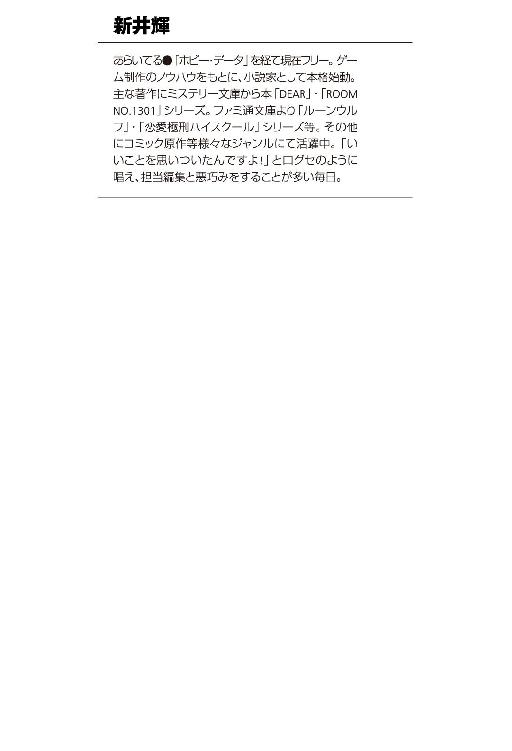
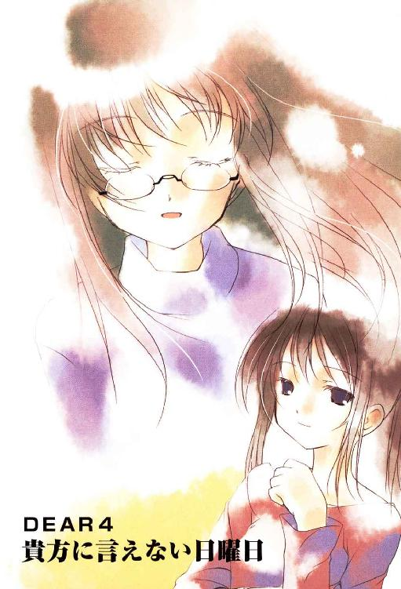
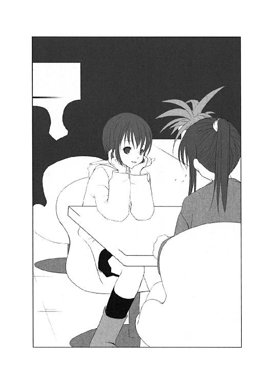
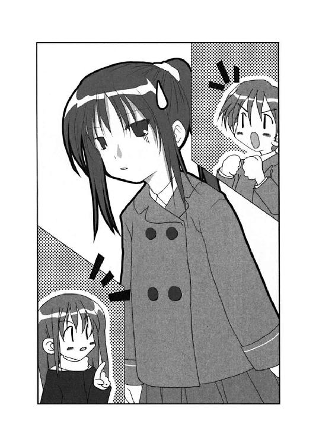
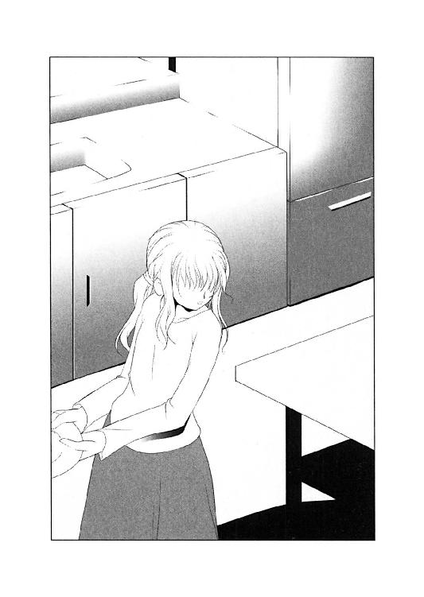
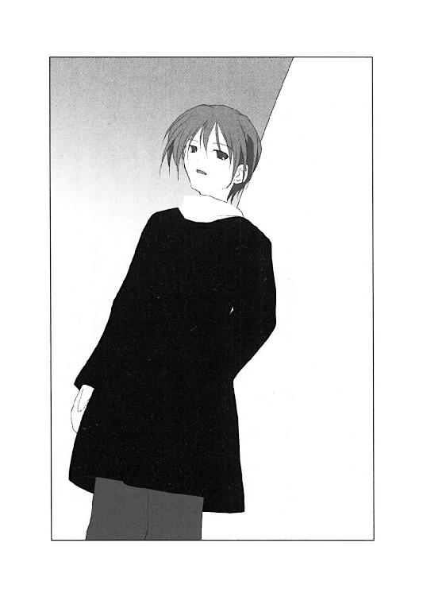
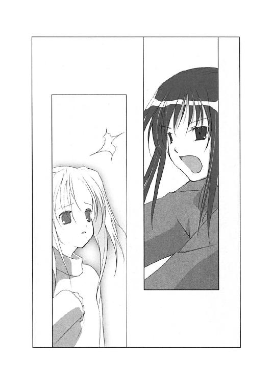
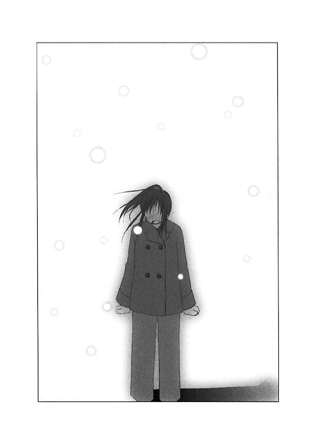
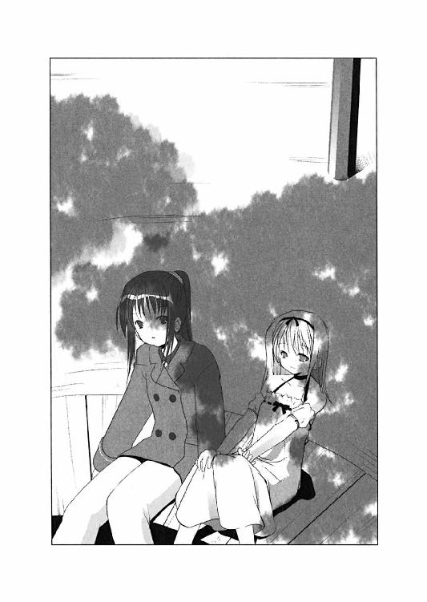

| DEAR4 貴方に言えない日曜日 (富士見ファンタジア文庫) | |
| 新井 輝 & 久瀬 たかし | |
| 富士見書房 (2012) | |


DEAR4
貴方に言えない日曜日
新井 輝

富士見ファンタジア文庫
本作品の全部または一部を無断で複製、転載、配信、送信したり、ホームページ上に転載することを禁止します。また、本作品の内容を無断で改変、改ざん等を行うことも禁止します。
本作品購入時にご承諾いただいた規約により、有償・無償にかかわらず本作品を第三者に譲渡することはできません。
本作品を示すサムネイルなどのイメージ画像は、再ダウンロード時に予告なく変更される場合があります。
本作品は縦書きでレイアウトされています。
また、ご覧になるリーディングシステムにより、表示の差が認められることがあります。
口絵・本文イラスト 久瀬たかし
私は何も分かってない。
そう思えれば、それで良かったのかもしれない。
市ケ谷一美
プロローグ 電話に出れない土曜日
市ケ谷一美にとって夜の十一時を過ぎて帰宅するのは、ちょっとした事件だった。
別に門限があるわけではないし、父親がそういうことにうるさいわけでもない。だが母親に早くに死なれ、父親が出張の多い状況では、彼女はそうそう家に遅く帰るわけにはいかないと感じていた。
「......ただいま」
一美はもう双海はきっと寝ているのだろうなと思いつつも、小さな声で帰宅の挨拶をする。父親はこの週末、やはり出張だった。だから、家にいるのは双海しかいない。
「............」
そしてどうやら予想通り、双海はもう寝てしまっているようだった。
今日、二月十三日の土曜日は市のホールで県内の演劇部の発表会があり、一美も双海もそれに参加して疲れていた。だから双海は先に帰ったし、その後、すぐに寝てしまったのだろう。
それで一美はちょっとホッとした気持ちになった。双海に余計な心配を掛けずに済んだとわかったからだ。
「............」
しかし、電灯の消えた家の中で、点滅する赤い光があった。
下駄箱の上の電話のランプだ。それは留守番電話が作動していたことを告げるものだった。
「お父さんからってことはないわよね」
一美は玄関の電灯をつけながら、力なく呟くと留守番電話をじっと見つめる。
ファックスも子機もついてない、随分と旧式なグレーの味気のない電話だ。テープは使わず、メモリに録音するとかその程度の特徴しかない留守番電話だったが、市ケ谷家ではそれ以上の機能は必要なかったし、一美も壊れるまではこれを使うつもりでもう二年くらいになる。
｛三件ノめっせーじガ有リマス｝
再生ボタンを押して、その機械の声が聞こえた時に、一美はふと貴博に四か月前に言われたことを思い出していた。
──お揃いの携帯電話を買おうぜ
それは本当にあっさりと二秒で却下された提案で、二人の大切な思い出というのにはかなりの無理のあるやりとりであったし、さっきまでそんなことあったことすら忘れていたほどの些細な出来事だったのだ。
だが、一美はその言葉が思いの他、重たい一言であったのだと感じた。
｛二月十三日土曜日 午後七時二十七分 一件デス｝
最初の一件は、一美の彼氏、赤井貴博からの無事に帰ったことを伝えるメッセージだった。
｛もしもし赤井です。誰も出ないってことは、双海ちゃんはもう寝てるのか？ ま、ともかく、一美。お前はまだ帰ってないとは思うけど、一応、報告な。双海ちゃんは無事、その家に届けて、まっすぐに帰って今の時間。お前の知らないところで勝手に家に上がったりはしなかったからな。安心しろ。あ、これ、オヤジさんが帰る前には消しておいてくれよな？｝
そして一美の予想通り、少しノイズの入った声がそう告げる。
「......らしいっていうか、なんていうか」
一美は少し力が抜けるのを感じながら、次のメッセージが再生されるのを待つ。
｛もしもし赤井です。えっと......三回で留守電ってことはまだ帰ってないのか？ まあ、でもオヤジさんは出張だって話だから問題ないかもな。ちょっと嬉しい話だったからって、はしゃぎすぎるなよな？ そうでなくても今日まで色々あってお前は疲れてるんだからさ。って、これ双海ちゃんが聞いてたらなんか恥ずかしいよなあ。てなわけで、この辺で切るわ。じゃな｝
「......嬉しい話か」
一美はそう呟くと、さっきまでの自分の浮かれた気分を思い出した。
その浮かれた気分の理由は、発表会を観に来たプロの劇団員の言葉だった。
文化祭での劇の再演ということで、わざわざそれを観に来ていたという。そしてその劇での一美の活躍を観て、その気があればと劇団に誘ってくれたのだ。要するに、自分をわざわざスカウトに来てくれたということであった。
一美は劇の後ということで疲れてはいたが、詳しくその話を聞きたくて、さっきまで一緒に話していたのだ。それは確かに、貴博の言うように嬉しい話ではあったのだが──。
しかし一美はそんな気分と今のギャップを感じてため息をつく。その間に、留守電では最後のメッセージの再生を始めていた。
｛二月十三日土曜日 午後十一時十二分 三件デス｝
その機械の合成音を聞いて、一美は時計を確認する。
午後十一時十五分。どうやらついさっきかかってきた電話らしいことがわかる。
｛もしもし赤井です。もしかしてまだ帰ってないのか？ 疲れてもうどうする気もないってんならいいけど──｝
一美はそこまで聞くと、早送りのボタンを押してそのメッセージを強制的に終了させる。
三件とも自分宛の、しかも貴博のものであることを確認した以上、その先を聞く気にはもうなれなかった。どうせ内容は聞かなくてもわかっている。
それに正直、あんまり楽しい気分ではなかったのだ。
スカウトのことは確かに嬉しい話ではあったが、でも色々と厳しいことも言われた。
中でも演劇部をすぐにでも止めた方がいいと言われたのはショックだった。
プロになる気があるなら一日でも早く、劇団に入った方がいい。その言葉には確かに説得力があったし、言わんとすることもわかる。
本気でプロを目指している人は、小さな頃から本格的にレッスンをしている。そこに中学生の時に興味を持って演劇部で演劇をやっているだけの人間が入ろうと言うのだ。一日でも早く、そういう環境に慣れた方がいいと言われればそうとしか思えない。
だが、一美はそれにはあまり乗り気にはなれなかった。なんだか皆を裏切るような、そんな後ろめたさがあった。
皆で頑張ってきて、そしてあの劇があって、それでスカウトの話があったのだ。自分一人の力とは思えないし、自分が皆から受け取ったものは、ちゃんと後輩に託さなければならないと一美は考えていた。
「......それにどう考えても今より忙しくなるものね」
一美は一度キッチンの方を見てから、ゆっくりと階段を上り自分の部屋に帰る。
キッチンを見たのは、やはり後ろ暗さからだった。
明日は二月十四日。バレンタインデーである。一美は貴博のために、手作りのチョコレートを作るつもりだったが、正直、今はもうそんな気分ではなかった。
別に何も予告してはいなかったし、貴博が期待しているかもわからない。でも、バレンタインデーくらい何かしてあげないといけないとは思っていた。
なのにスカウトの話に浮かれて、そのための時間も気力も使い果たしてしまった自分に一美はまたため息をつく。
「こんなんだから、あんな娘に痛いところを突かれるのよね」
一美は住吉由衣のことを思い出した。一美の存在を知りながら、貴博に告白し今も迫っている彼のクラスメイトの女の子だった。
彼女はいつも貴博の側にいたがり、そして今日だって一緒に演劇を観に来ていたりした。別に二人きりというわけではなく、正吾や他のクラスメイトたちも一緒だったが、それでも一美は由衣のことが気になっていた。
「貴博もどういうつもりなんだか」
一美はそう呟いて荷物を置いて着替えを済ますと、すぐに布団に入り寝ることにした。
発表会に彼女を連れてくる貴博には面白くない思いは確かにあったが、それでも自分にはそのことで彼にハッキリと文句を言えるだけのことをしているとは思えなかった。
忙しさを理由に貴博を遠ざけていたのは自分だし、今日だって土曜日だったのだから発表会がなければデートに出かける日取りだった。だからそれに腹を立てず、ちゃんと観に来てくれたことを感謝した方がいいのかもしれない。
でも、やっぱり由衣のことを考えると、一美は落ち着かない気分になる。
彼女はいつでも貴博のそばにいたがるし、実際、彼が望めばそうする気なのだろうと思う。彼女は何か特技があって、それに打ち込むようなタイプではなかったが、男からすればそんな女の子の方が良かったりするんじゃないかと一美は思っていた。
由衣は未だに小学生のような身長で華奢な体格だったが、そういうのもきっと男からすれば嬉しいのだろうとも思う。
「......今度こそ、貴博はあの娘を選ぶのかな」
そして一美はそれだけ呟くと、そのまま眠りにつくことにした。考えるべきことや、やらねばならないことが沢山あるのはわかっていたが、もう今日は何もする気が起きなかった。
○
目が覚めると、何故か木漏れ日の下に寝転がっていた。
日差しもなんだか冬というよりは、夏が近づきつつあるのを感じさせる、少し強い高いもののように思えた。
「これって......」
夢かな。そう一美は思ったが、それにしては妙にリアルだなと感じる。それで気になって立ち上がり辺りを見回す。
周りは公園だった。しかも見覚えのある場所だ。
時輪台南公園。一美の家の側にあることもあって、彼女は一人で発声練習する時など、そこに何度となく通った広い公園だった。
「でも、なんか変よね」
一美は自分に確認するようにそう呟くと、その違和感の理由を探る。記憶の中の公園と、目の前の公園にはこれと言った違いはなかったが、でもやはり落ち着かない。
「そうか、人がいないからか」
それは辺りが不自然なほど静かだったからだった。公園の中には誰もおらず、そして外にも誰かいる気配がない。
それで一美は自分がどういう状況に置かれているのか、ハッキリとわかった気がした。
「今回は私の番ってことね」
一美はそう呟いて、自分がどうやら死んだらしいと理解した。
ここは正吾や双海から聞いていた〈精神と時の世界〉と言う名の異世界なのだろう。だから自分は何故か公園で寝転がっていたのであり、ここには自分以外、誰もいないのだ。
一美はそれで合点がいったのを感じて、この世界の住人がどこにいるのかを探し始めた。
公園の中は記憶の通りで思ったところに思ったものがあるが、それでも誰一人、そこにはやはりいなかった。
「......歩き回らない方が良かったのかな」
一美はそれで不安になり、時計台の方を見るが、時計は動いてはいないらしく、何度見ても同じ時間しか指していなかった。
「はぐれた──かな？」
一美は辺りを見渡し、なんだか小さな頃に戻ったような錯覚に陥った。
広大で誰もいない公園。その中で自分がなんだかひどく小さく感じる。迷子にでもなったような、そんな不安。
そして一美はどこかに行ってしまった双海を探しに父親と来た道を戻って行って、でも一向に双海が帰ってこなかった時を思い出す。
別に家は側にあるし、双海が一人でも帰れるのはわかっていた。でも、その時、自分は孤独を感じて泣きたくなったような気がする。
「お母さん......」
その時、自分より小さい男の子と母親が一緒に歩いているのを見かけたのも思い出す。それは知らない子だったし、だからそれでどうと思うこともないはずだが、なんだかその子が幸せそうで羨ましかったような気もした。
「何を考えてんだか」
一美はそんなことを思い出した自分を否定するようにそう呟くと、また辺りを見渡し、それからなんでそんなことを思ったのかをまた考える。
だがそんなにじっくり考えるまでもなく、理由は明らかな気がした。
母親に会える。そんな気がしていたからだ。
双海はこの世界でエイミという名の〈天使〉に出会ったと言っていた。双海は気づいているかどうかはわからないが、それが二人の亡き母である市ケ谷詠美であることは、一美にとっては疑いようがないことだった。
乃木坂秋葉を助けるために、彼女の妹である冬華が、〈修復官〉トーカとして正吾の前に現れたのだ。エイミが何の関係もない単なる同じ名前の人間だと考える理由はどこにもなかった。
「こんにちは、市ケ谷一美さん」
しかしそんな一美の前に光と共に現れたのはエイミではなかった。
ゆっくりと空から砂場へと降り立ち、挨拶をしたのはトーカだった。黒いリボンを頭に巻いた白衣の〈天使〉。それは十歳くらいの少女で、双海から聞いていたエイミとは明らかに別人だった。
「......こんにちは。あなた、トーカちゃんよね？」
一美は自分でもわかるくらい元気のない声でそう返事をしていた。
「はい。トーカです。あの、一美さん......大丈夫ですか？」
それでトーカが心配そうに尋ねてくるのがわかった。だが一美にはトーカに自分が心配される理由を言う気にはなれない。
「多分ね。少し疲れているだけよ」
「そうですか。なら、いいんですけど」
トーカはそれで砂場から一美の方に歩いてきた。
「話は双海や青山君から聞いているわ」
一美はトーカが近づいてくるのを待たず、いきなり話題を切り出した。
「......はい。それは知ってます」
トーカはそれでちょっと驚いたような顔をして立ち止まるが、一美はそれを待たずにさらに言葉を続ける。
「三回チャンスをあげるから『事故』って言うのを回避してくれってことでしょ？」
「......はい」
トーカは先手を打たれて明らかに戸惑っている様子だった。
「今回だけの特別なルールとかはないんでしょ？」
「そうですね。いつも通りだと思います、たぶん」
「たぶん──ね」
一美は小さくそう答えると、もう特に聞く必要もないだろうなという気持ちになっていた。
「じゃあ、もう元に戻してくれない？」
「え？ でも......」
トーカは何か言いたそうだったが、一美はじっと彼女を睨みつけて、それ以上はもう聞きたくないのだと示す。
「わかりました。一美さんがそうしたいなら、それでいいです。事情もわかってくれているみたいですし」
それでトーカはちょっと考えてから、そう結論づけたようだった。
彼女の手が上に伸びて、指が天を指すのが見えた。それはこの仮の世界を壊し元の世界に戻すための準備動作であることも一美は知っていた。
「わ......」
それでも実際に周りの世界が小さな三角の断片に砕けると、一美は自分の目を疑った。
正吾はそれをゲームのようだと言っていたが、その意味がわかった気がする。さっきまで確かに感じていた地面の存在や重力が急に消えてなくなるのを感じた。
支えを失って落ちたのか。世界が浮かび上がっていっているのか。上下の感覚がない一美にはわからなかった。
でもトーカが笑いながら遠ざかっていくのが見えて、一美はやっぱり落ちているのは自分の方だろうと思った。
「頑張ってください、一美さん」
小さくトーカがそう言ったのが聞こえたが、一美は彼女に返事をする余裕はなかった。
信じられない状況だったし、すでに彼女の意識はこの世界から消えようとしていたからだ。
（頑張ってください──か。勝手なものよね、本当）
そんな一美の思いは声になったかわからなかったが、彼女はそう思ったという居心地の悪さだけは感じて、本来あるべき場所へと彼女の意識は飛んでいた。
第一章 誰にも言えないバレンタイン
なんて大人げのない態度だったんだろう。
一美がその日、目覚めて最初に思ったのはそんなことだった。
「別にあの娘が悪いってわけじゃないのに......」
一美はそれで起き抜けにため息をつくと、体を起こした。
あれは完全な八つ当たりだ。自分が色々迷ってて、それで死んだはずの母親に会えるんじゃないかと期待して、それがかなわなかったから、自分はトーカの話をまともに聞かず、そして今、ここにいる。
もっともまともに聞いたところで、知っていることの繰り返しなのだろうとも思う。
今日、自分を含め三人の人間が死ぬ。だから三回の繰り返しの中で、それを防いで欲しい。
運命を変えられるのは自分ともう一人の誰かだけで、それは逆に言えば自分以外の誰かが運命を変えているようなら、それが『事故』の犯人だということだ。
それを一美は正吾から何度か聞かされていたし、それ以上のことは考えてもわからない、向こうの世界のルールなのだろうと思う。
「それにしたって、よりによって今日でなくてもいいのにね」
一美は自分の落ち着かない気分を感じながら、そう呟くと部屋から出て階段を下りることにした。
とりあえず、この一回目は様子を見るしかないのだと一美はちゃんと理解していた。それが自分や他に二人の人間が死ぬことを意味していたとしても、そうするしかないのだと。
「おはよう、お姉ちゃん」
双海はすでに先に起きていたようだった。
それで一美は時計を見るが、別に自分が寝坊したわけではなく、双海が今日に限って随分と早起きだということらしい。
昨日、疲れていたせいで寝るのが早かったからかもしれない。そうも思ったが、どうも彼女の浮かべている嬉しそうな表情からすると、偶然というよりはちゃんと予定通りのことがらであるらしい。
「おはよう、双海」
双海は自分の朝ご飯を自分で用意して、今はもう片づけ始めたところのようだった。しかし一美の分はない。
それで一美は席にはつかず、そのままキッチンの方に歩いた。目玉焼きでも作ろうと思ったが面倒なので、パンとコーヒーでいいやと思い、トースターに食パンを差し込む。
「お姉ちゃん、昨日は遅かったみたいだけど大丈夫ですか？」
双海は片づけを終えて席に着くと、コーヒーが沸くのを待っている一美に話しかけてくる。
「ちょっと話が盛り上がっちゃってね......でもさすがに疲れたわ」
「あの劇団に入るですか？」
「どうかな。入りたいとは思ってたし、向こうから誘ってくれるなんて夢みたいだけど」
「入らないですか？」
「ちょっと迷っているのよ」
一美はそれでトースターがチンと音を立てるのを聞いて、そっちに注意を向けた。こんがりとやけたパンを確認して、一美は冷蔵庫からバターを取り出す。
「なんでですか？ 入りたいと思ってたし、誘ってもらえたなら入るのがいいです」
「でも、そうするためには色々あるのよ」
「色々？」
双海がなんだかわからないと小首をかしげたところで、一美はパンにバターを塗り終えて、一度食卓についた。そして双海の顔を見ながら話を始める。
「お金だってかかるから、お父さんに相談しないとでしょ？」
「それはそうです。でもお父さんはきっと賛成してくれるです」
「そうは思うけど......それでも相談はしないと」
一美は双海の嬉しそうな顔を見ながら、なんだか自分は考え過ぎなのかもしれないなと思う。
「よくわからないけど、とにかく双海は協力するです」
双海はそう言って、今まで以上に嬉しそうな笑顔を浮かべる。
「......ありがと」
そんな彼女に一美は戸惑って、そう呟く。
「今まで双海はお姉ちゃんに助けてもらってきたから、お姉ちゃんが困っているなら協力するです。何をすればいいのかとか、それが出来るのかはわからないですけど、双海は出来るようになるように頑張るです」
双海はそして自分に納得するように三回小さくうなずいた。
「そうすると寂しくなるかもしれないけど、ちゃんと心の底からお姉ちゃんのことを応援できるようになるです」
「ありがと」
一美はそう答えながら、双海がどうやらあの時のことを心配しているのだろうなと思った。
去年の文化祭の時、ヒロインの役に没頭していた自分に対して抱いていた矛盾した感情。
頑張って欲しいけど、頑張って欲しくない。そんな気持ちが引き起こした悲劇。それ自体は正吾のおかげで未然に防がれたが、それでも双海の心にはその繰り返しの中で起こったことがボンヤリとでも残っているのかもしれない。
「忙しくはなるよね、やっぱり」
それでも一美はそれを感じたことを気づかれたくなくて別のことを口にした。
「家事は双海もするです。お掃除は苦手だけど、お洗濯は得意です」
「干すのは苦手だけどね」
一美はそう言って小さく笑うと、沸いたらしいコーヒーをいれようとまたキッチンへと席を立つ。
「......背も伸ばすです」
双海は一美に聞こえるか聞こえないかの微妙な声でそんなことを言ったようだった。
「そう言えば、双海、今日はどうしたの？」
一美はコーヒーを注いだカップを慎重に運んで席に戻ると、別の話を始めた。
「えっと......今日はお呼ばれしているです」
「お呼ばれ？ お友達の家でパーティでもするの？」
一美はなんだかそれが意外だなと感じた。そういう話なら双海はきっと事前に話をしていただろうし、バレンタインデーに友達の家に集まってパーティというのも妙な気がした。
「真鶴さんにお呼ばれしたです」
だが双海の返事を聞いて一美はちょっと自分が考えていたのとは状況が違うらしいと感じる。
「真鶴さんって......真鶴千尋さん？」
そう聞きながら、そんなわけもないだろうと思ったりした。
千尋は正吾の友達だし、確かに正吾と双海は知り合いだが、でも千尋と双海が仲がいいとは一美には思えない。
「呼んでくれたのは真鶴一尋さんです。確かに家は同じですけど」
言われて合点がいくと同時に、一美はひどく驚いてしまった。
一尋となら双海は何度か会っていたし、話もしていたようだった。一美の知るかぎり、双海はあまり男の子と話はしないようだが、その数少ない例外が正吾と、そして一尋だった。
「そう、だったんだ」
一美はそれでも動揺を隠すようになるべく無感情にそう呟いた。だが、双海はそんな姉に違和感を覚えたようだった。
「......ダメですか？」
「いや、ダメってことはないけど......ちょっと意外だったから」
「一尋さんはいい人ですよ。双海より年下なのに、しっかりしてるです」
「別に一尋くんに不満があるわけじゃなくて......ほら、いつもならもっと色々と話を聞いてたかな、と思って」
「一尋さんのことは何度も話したと思うです」
「それはそうだけど、今日のことはお姉ちゃん、初耳よ？」
「......それは話すなって言われてたからです。今も本当は話しちゃダメだったかもです」
「そう......じゃあ聞かなかったことにする」
一美はそれで小さく笑うとパンにかじりついた。
双海はそんな姉の言葉に、照れたような笑顔を浮かべて、黙って二回ほどうなずく。
「双海はそろそろ出かけるです」
そして双海が席を立った。
まだ時計は八時前だった。いつもの双海からすれば、この時間にしては随分とハイテンションな印象を受ける。
「随分と早いのね」
「はいです。色々あるです。双海は頑張るです」
そして双海はニッコリ笑うと荷物を取りに二階へと向かったようだった。
「......そっか。双海と一尋くんがね」
一美は双海が自分の部屋でごそごそと物音を立てているのを確認すると、小さくそんなことを呟いた。
正直、いつのまにそんなことになっていたのだろうと思ったが、考えてみれば二人が初めてあったのは十一月の半ばのことだったわけで、あれから三か月近く経っているのだから、何か状況が動いていても不思議はないという気もした。
双海はさびしがり屋だし、それを隠す風でもない。そういう意味では一度、仲よくなればその距離を縮めることに躊躇するようなこともないのかもしれない。
そんなことを思って、一美はなんだか羨ましいなと感じてしまう。そして寂しくも思った。
双海が自分にべったりなのはどうかなと思ってはいたが、でも離れていってしまうのかなと思うとやっぱり寂しい。
別に仲が悪くなったわけではないし、むしろ双海は自立しようとしているのだ。応援してあげるべきなのに、なんだか素直にそうできない自分がいるのに気づく。
「双海もあの時はこんな気持ちだったのかな」
一美がそう呟いた時、また階段を下りてくる音が聞こえた。
「じゃあ、行って来るです」
双海は両手いっぱいの荷物を持ったまま、リビングにいる一美に一言挨拶をすると、あたふたと出かけていってしまった。
「......いってらっしゃい」
一美はそんな双海に圧倒されて、ちょっと挨拶が遅れてしまった。
「双海に相談するべきだったかな......」
それから一美は一人、食卓に座ってまだ残っているコーヒーを飲んでいた。
なんだか静かなのが気になって、リモコンを手に取るとテレビをつける。特に何が見たいというわけでもないので、一美はチャンネルも変えずにそのままにした。
そしてまたさっきの自分の呟きを心の中で繰り返した。
双海に相談するべきだったか？ しかし口にしないで考えたその疑問には、すぐノーと答えが出せた。
確かに双海は繰り返しの経験者だが、正吾のように自主的に動いて運命を組み直した経験はなかった。そういう意味では参考になる意見が聞けないだろう。
それに──と一美は思う。
本来の、どうやらすっかり忘れてしまっている最初の二月十四日の朝に、自分がそんなことを双海に相談したはずはないのだ。
もし双海に話していたなら、彼女は心配して一美のために行動するようになっていただろう。だがそれは本来の運命とは違った結果を導くことになる。やり直しの一回目、様子を見ようと思っている状況では好ましい展開ではない。
「......ということは、私は何をすればいいわけ？」
とりあえず繰り返しているということは忘れ、一美は本来なら自分は何をしたのだろうと考える。そんなことを考えている時点で、本来とは違っているのかもしれないが、致命的な変化と言えるほどのことはないんじゃないかと感じる。
「貴博に電話するかな」
一美はそして留守電がまだ点滅したままなのに気づいて、昨日のことを貴博に報告しておいた方がいいんじゃないかと思った。
そしてコーヒーを飲み終えると、結局ろくに見もしなかったテレビを消して、玄関の方へと歩いた。
「............」
しかし、いざ受話器を持ち上げようとするとそれが重く感じた。
まだ時間的に早いかもしれないという気がした。貴博が日曜日はけっこう遅くまで寝ているらしいことはわかっていた。
特に今日、何時に会おうとか約束をしていたわけではない。それを考えると、貴博はまだ寝ているかもしれない。普段は比較的、機嫌がいい貴博だが、寝ているところを起こされると不機嫌になったりする。
普段ならそれをそういうものだと割り切って話せるだろうと思えたが、今はそれが理由でももうケンカのようなことになるのは嫌だなと一美は思う。
「......でも、昨日、三回も電話してきてくれたんだし」
一美はまだ点滅しているランプを見て、そう呟くと思いきって貴博の家の電話をダイアルすることにする。
「............」
呼び出し音が五回鳴ったところで、一美はやっぱり切った方がいいと不安になったが、ちょうどその時、誰かが受話器を取ったらしい音が聞こえた。
｛もしもし赤井ですが｝
貴博の声だった。あくまで事務的な調子なので、彼が今どういう心境なのかはわからないが、一美は逆にそれで決心がついた気がする。
「私よ。昨日は何度も電話もらったみたいで悪かったわ」
｛あ、一美か......｝
貴博が特に名乗るまでもなく自分だと理解してくれたのは、ほっとした気持ちになる。彼の口調も寝起きの不機嫌さはない。
だが、なんだか雲行きの怪しさを感じた。
｛悪い。今、忙しいんだわ｝
「なにそれ？」
｛いや、ちょっと用事が出来てな。夕方には片づくからさ。そしたら迎えに行くから、それまで待っててくれよ｝
「......夕方まで家でじっとしてろってこと？」
｛じゃあ五時でどうだ？ それまでは自由にしてていいから｝
「自由にしてていいって......バレンタインデーに彼女に言うセリフ？」
｛ま、それはお互いいいっこなしだろ？ ちゃんとその時間に迎えに行くから勘弁してくれよ｝
「......別にいいけどね、私は」
｛すねるなって。第一、今日のことは留守電に入れておいたじゃん｝
「そんなの聞いてないわよ？」
｛ああ、直接言おうと思ってたんだけど、お前がいつまで経っても帰ってこないから、三度目に入れておいたんだよ。ってことは、お前、最後まで聞かずに消したんだな？｝
「......どうせ同じことしか言ってないと思ったのよ」
｛ま、そんなところだろうな。そうじゃなきゃ、そんな話にはならねえわな｝
貴博はそう言った後、笑ったようだった。なんだか自分の行動が読まれたようで、一美はちょっと面白くないと思う。
｛とにかく午後五時まではこっちは用があるからさ。それまでは頼むわ。その後は、そのことで土下座しろってんなら、それでもいいし、お前の言う通りにするからさ｝
貴博はどこまで本気なのかわからない調子でそんなことを言うと、一美の返事を待って口をつぐんだようだった。
「......五時ね。わかったわ。じゃあね、貴博」
そして一美は言い合ってもしょうがなさそうだと思うと、それだけ言って電話を切る。
「用って一体なんなわけ？」
そして予想外の展開に一美はイライラしながら、まだ点滅している留守番電話のランプをジッと睨んでから、メッセージの消去ボタンを押した。
｛めっせーじヲ消去シマシタ｝
電話はぎこちなくそう告げると、貴博の言葉をすっかり忘れてしまったかのように完全に沈黙した。
○
気を取り直して、朝ご飯の片づけを始めたのは、それからちょっと時間が経った後だった。
それまで一美はやはり特に見るつもりもないテレビに向かって、ソファで座っていたりした。しかし、どうもそういう時間の使い方は自分には向いてないらしいと思うと、まだ片づいていない流しの方へと歩いた。
それでわかったのは双海は流しまでは運んだものの、皿を洗っていなかったことだ。そのままにしておくのもどうかと思い、一美はそれも洗う。
「まったく......」
だがそれは一美にとってはそんなに不愉快なことではなく、やっぱり双海が今すぐ自立するとかそういうことはないのだなと思い、むしろホッとしたくらいだった。
双海は頑張るとは言っていたが、まだまだ出来ていない。だから自分のすべきことはまだあるし、まだ寂しく思うには早すぎたのだなと思う。
それでだろうか、一美は考えようによっては、時間が出来てしまったことは幸運だったのかもしれないと考えた。
「そうよね。昨日出来なかったことが出来るってことじゃない」
一美はそしてそれでちょっと昨日の惨めな感情を思い出す。
バレンタインデーというのに、なんの準備もせずに迎えてしまうことで、貴博に呆れられてしまうかと思っていた自分。だが午後五時まで時間があるなら、今から始めても十分な時間があるということだ。
「......ま、そうでも考えないとやってられないしね」
一美はそれで用意しておいたはずのチョコレートや他の材料を探すが、それはキッチンのどこにもないし、冷蔵庫の中からも姿を消していた。
「あれ......」
一つ二つなくなっているなら、誰かが食べてしまったというのも考えられる。だが、何一つないというのは納得いかない状況だった。
「双海かな......そうなると......」
そして一美は、すでに出かけてしまった双海のことを思い出した。
父親は出張中である。そうなれば、もう双海しかいない。そして一美は嬉しそうに出かけていった彼女を思い出して、なんとなく納得してしまう。
「あれは一尋くんのチョコレートに化けたってことか」
一美はそう呟くと、材料探しは諦めることにする。
「......本までなくなってるし」
そしてレシピが載っていた本まで姿を消しているのを確認して、一美はそんな自分の考えが確かなものだと感じた。
「ま、いっか。買いに行けば......今日の方が安いかもしれないし」
一美は双海に怒る気にはなれず、そう呟くと出かける準備をすることにした。
一美はなんとなく髪を下ろした自分の顔が嫌いだった。
「............」
一美はそんな嫌いな顔を鏡に見ながら、少しは納得の出来る、余所行きの髪形をした自分に変えていく。
髪を上げようが下げようがそんなに顔が変わるとは思えないのだが、髪を上げている時の方が頰が細く見える気がしたし、緊張感があるのか目つきも気に入っていた。
もっともそれは本当に個人的な話で、周りの人間にとってもそうなのかは知らない。
そもそも鏡に映る顔というのは、自分専用の顔なのかもしれないと思う時もある。実際、鏡に映っている自分の顔を、他人が見るなんて機会はまずもってない。
自分が気に入る表情や角度。それを見ている自分の顔など、本当の自分の顔ではないのかもしれない。
普段、自分はどんな顔をしていて、それを他人がどう捕らえているのか？ それは女優を目指している一美にとっては、決して無視できない疑問だったが、あえてそれを人に尋ねるのはやっぱり抵抗があったし、聞けたことでもなかった。
だが昨日、劇団の人間から聞いたのはそれを意識しろという話だったような気がする。
舞台に立っている時の緊張感を持ったまま、日々暮らせるようになれ。そんなことを言われて、一美はそれがどうすれば出来るのかはわからなかったが、やっぱりそうならねばならないのだろうとは理解できた気がした。
「......それにしても、貴博の用ってなんなんだろう」
そう呟いた時の顔はちょっと力が抜けてて、一美は好きになれそうになかった。それで一美はキッと鏡の中の自分を一度だけ睨むと鏡を見るのはやめた。
そんなことは後で聞けばいいのだから、と自分に言い聞かせながら。
しかし聞くまでもなく、答えは向こうからやってきたかのようだった。
それが『事故』の日に起こったというのは、やはり偶然の一言で片づけられないように一美は感じた。
「......貴博のヤツ」
用があるから片づくまで家にいろと言っていた貴博を、一美は出先で発見したのである。
どうやら貴博も自分同様、買い物に行くつもりらしい。街の中心の方へと向かう通りを、彼が横切るのが見えた。
だが、自分が一人に対して、向こうは二人だった。
しかも貴博と一緒なのは、住吉由衣だったのだ。
「それにあのコートって......」
さらに一美は貴博が着ているコートに目が行った。それを貴博が着ているのは初めて見たが、でも見覚えのあるコートだった。
去年来のスキー旅行の日に、由衣が着ていた大きな男物のコートだ。確かにこうして見ると、貴博のような長身の男が着た方が似合ってはいるのだが、それが彼女のものだという知識が一美をイライラさせる。
「どういうつもりよ、あれ......」
いくら貴博が着た方が似合うからって、自分のコートを着せるなんて......。よほど親密な関係でもそんなことをするとは一美には思えなかった。
「先輩、何してるんですか？」
いきなり話しかけられて、一美はドキリとして振り返った。しかしそこに立っていたのはとりあえず演劇部の後輩ではなかった。
八重歯を見せて微笑んでいる真鶴千尋だった。
「......真鶴さんじゃない」
「あれ、私じゃダメですか？」
千尋はそう言いながら、少し口をとがらせたようだった。
「別にダメってわけじゃないですけど」
「先輩。今、忙しいですか？」
「......忙しくはないけど」
一美は千尋と話している場合ではないように感じてはいたが、でもその理由を千尋に話す気にはなれなかった。
貴博が由衣と一緒にいるから尾行を続けないといけないと言えるはずもない。
「じゃ、ちょっと一緒に行って欲しいところがあるんですけど」
千尋はそんな一美の考えなど興味がないようで、自分の話を始める。
「一緒に行って欲しいところ？」
「スタカですよ。スターフォーリング・カフェ。駅前にこの間出来たんで、ちょっと覗きたいなと思ってたんですよ」
「......だからってなんで私と真鶴さんが一緒にそこに行くわけ？」
「まあ、ぶっちゃけると先輩である必要はないんですけど、ほら、ここで会ったのもなんかの縁だし」
千尋はそう言うとえへへと笑って、彼女の手を引いて歩き出す。
「何かの縁って......」
「今日は家にいづらいんですよ。一尋のところに双海ちゃんが遊びに来てるし、だから誰か一緒に暇つぶしをしてくれる人がいないかなって思ってたら、ちょうど先輩がいたから」
「いたからって......本当にそれだけなわけ？」
「忙しくないんですよね？ だったら、ちょっと付き合ってくださいよ。オゴりますからお金はご心配なく」
「別にお金のことを言っているんじゃなくて」
「ま、そういうことでよろしくー」
そして千尋は何がそういうことなのかわからないが勝手に納得すると、もう一美の意見など無視して駅前の方へと歩くのだった。
○
「......やっぱり失敗だったとか思ってない？」
スターフォーリング・カフェは今、流行のコーヒーショップ・チェーンだった。そして流行の店で、しかも今日がバレンタインデーとなれば、客層は容易に想像できたはずだった。
「ここまでやられると逆にすっきりしますよねー」
千尋はアハハと少しわざとらしい笑みを浮かべながら、一美の向かいの席についた。
周りはカップルばかりだった。まだ昼前ということもあって、これからきっとランチでも食べに行く時間稼ぎのような場所なのだろうと一美は思う。
「先輩は特に希望なしって言うことだったんで、本日のコーヒーってのにしました」
「......そう」
一美はそれでも笑っている千尋に少し呆れた気持ちになりながら、コーヒーの入ったカップを受け取る。
「ちなみに私はオススメの新製品を頼んでみました。こっちも飲みます？」
「いいわよ、別に」
「......そうですか。なんか怒ってません？」
「怒ってはいないけど、かなり不機嫌かもね」
「......それって怒ってるってことじゃないですか」
千尋はそう言いながら、そんな一美がおかしかったのかまた笑った。
「ねえ、先輩」
「なに？」
「もしかして、私たちも周りからカップルだって思われてるんですかね？」
「......あのねえ」
「あ、でもああいう人たちって周りは見えてないから、そんなこと思うわけないか」
「それはそうかもね」
一美はなんだか千尋が一人だけ浮かれているようでどうしていいかわからず、間を持たすためにコーヒーを飲むことにする。
「ところで、先輩。カップルで思い出したんですけど」
「......なに？」
「なんで、先輩は貴博にエッチさせてあげないんですか？」
「......な、何を言いだすのよ、いきなり」
一美は思わずむせてしまいそうになるが、千尋はそれすら予想していたのか、ニッコリと笑ってこっちを見ていた。
「いきなりでもないですよ。先輩と貴博が付き合い始めて半年くらいですよねえ。しかも先輩の方から告白したんでしょ？ なのになんでなのかなあって前から不思議だったんですけど」

「別に理由なんてないわよ。なんとなく間が合わないって言うか......」
「踏ん切りがつかない？」
「......そういうこと」
「まあ、あんまり求められすぎると逆に引くってのはなんとなくわかりますけど」
千尋はそう言って何かを思い出して口元に笑みを浮かべたようだった。
「貴博がなんか色々言ってるわけ？」
「まあ。そんな感じですね。この間はもうなんかあんまりかわいそうだから、私が相手してあげようかと思ったくらい......って言うのは冗談ですけど、まあでもデートのたびに、そんな不満を募らせているのはかわいそうかな、と」
「そんなこと言われても、こっちだって準備ってもんがあるのよ」
「準備ですか。ふむ」
千尋はなにやら感心したように二度うなずくと、一美の方を見る。一美はそれでやはり間が持たないのを感じて、コーヒーを飲むことにする。
「でもショーゴと秋葉みたいに、その場の勢いで出来ちゃう人たちもいるみたいですよ」
そう言われて一美はまたコーヒーでむせてしまいそうになった。
「な、何を言いだすのよ、あなたは......」
「いや、私もさすがに現場は押さえてないですけど、あの二人はもうしちゃってると思うんですよね。二人はそういうこと話さないけど、逆になんか怪しいって言うか」
「青山君がそういうことに興味ないだけだと思うけど」
「そうですかねえ。でもショーゴは普段はぼ──っとしててもヤル時はヤル男だから」
「......下品な言い方」
「あ、別にそういう意味じゃなくて......」
千尋はそれでさすがに変なことを言ったと思ったのか、顔を赤くして黙り込んだ。それで一美はやっと余裕が持てた気がして、自分から話題を振ることにする。
「でも、なんか意外ね。あなたがそんな話を自分からするなんて」
「なんでですか？」
「いや、私、あなたはてっきり青山君のことを好きなんじゃないかと思ってたから」
「だから別の女の子とショーゴがそういう関係だって思いたくないって思ってた？」
「そうね。でも、自分から随分と楽しそうに話すから、私の見込み違いだったのかな」
「うーん。その辺はそんなに外してないんですけどね。実際、去年の末くらいまでは話されたくないと思ってたと思うし──事実、貴博には泣かされたから」
「貴博に？」
一美は驚いて、千尋に尋ね返す。
「あの日、例の『事故』が起こってたのは知ってますよね？ で、私、最初の一回目、ショーゴと体が入れ替わってたんですよ」
「......それは初耳。ま、あんまり乃木坂さんとかには言わない方がよさそうね」
「で、ですね。朝方、貴博が私のことショーゴだと思って言うわけですよ。俺、お前には千尋につきあって欲しかったって」
「ヘビィね......」
「それでもうなんかね、さすがに泣いちゃったんですよね。でも、そこでショーゴがそんなこと言われて泣くと変じゃないですか」
「まあ、変よね」
「だからシャワー浴びるって言って、こっそり泣いたりしたんですよ。その後、目真っ赤なのショーゴに気づかれたんですけど、シャンプーが目に染みてさーって適当言ったら、思いっきり真に受けてて......さすがにあの時はちょっとは気づいてよって思いました。ショーゴは人の言葉疑わなさすぎですよね、本当」
千尋はそれでもアハハとわざとらしい笑いを浮かべていて、別にそんなに本気でそう思っているわけでもないように一美は感じた。
「で、その旅行の時に、なんか心境の変化があったわけ？」
「そうですね。ああ、この人は違うんだなって思ったんですよね。上手く言えないんですけど、私とショーゴは似た者同士で一緒にいるのは楽しいけど、でも恋人とかそんな感じじゃないんだなあって。だから、もうショーゴの恋人は秋葉でいいやって」
「......その辺は、よくわからないんだけど」
「まあ、いいんです。どうせ考え方が変わっただけで、状況は何も変わってないですし、他人から見たらなんでもなかったようなもんですから」
そう言いながら、千尋は自分の髪の毛の先の方を触る。
「でも、私にとってはレボリューションだったんですよ。大革命ですよ。髪の毛も今までこんなに伸ばしたことなかったけど、今は平気だし」
言われて一美は千尋の髪の毛を見るが、正直、そんなに長いとは思えなかったし、今までの千尋とどう違うのかもわからない。
「......そんなに伸ばしたの？」
「まだ伸ばしている途中なんですよ。これでも前より二センチは長いですよ？」
「二センチねえ」
そう言いながら確かに千尋の服装や髪留めのセンスは以前とはちょっと違っているのかもしれないなあと感じた。もっとも私服姿の千尋を見たことなど数えるほどしかないので、勝手に思い描いていたイメージとギャップがあるというくらいのものだったが。
「とにかく私はあれ以来、自分の乙女チックさについて肯定的に受け入れられるようになったんですよ」
「自分の乙女チックさ......ねえ。なんか変な言葉だけど、言いたいことはわかる気がする。つまり真鶴さんは、自分が可愛い女の子だって言うことを許せるようになったってわけね」
「まあ、そんな感じですかねー」
千尋はそれでニヒヒと八重歯を見せて笑う。一美はそんな彼女の笑顔にちょっと呆れてしまうが、それでも今の自分に足りないのはそういう感情なのかもしれないとも思う。
「でも、平気なわけ？ 今ごろ、青山君と乃木坂さんがそういうことしてるかもしれないとか気にならないの？」
「うーん、まあ気にならないですね。今、ショーゴは秋葉と一緒にいないのも知ってるし」
「......そうなの？」
「今ごろ、ショーゴは優子さんと買い物しているはずですよ。ここにいたら、その辺通るのが見えるかもしれないですね」
千尋はそう言って、店の外の通りを指さす。
「青山君も何を考えてるんだか......」
「正直言うと、今日の私はショーゴよりも一尋の方が気になるかな」
「それって双海とのこと？」
「まあ、家には親もいるし、さすがに今日、そういう展開になるとは思わないですけど、やっぱりなんかショックですよねえ。自分の弟が、女の子とそういうことするかもしれないって」
「きっと私の方がショックを受けると思う」
「双海ちゃんに先を越されちゃうわけですからね」
「......そういうことじゃなくて」
一美はガックリと肩を落としながら、千尋に反論しようとするが、彼女はすでにその話題には興味がなくなったのか、別のことを話す気になったらしい。
「それはそうと先輩？ 先輩こそ、実はショーゴのこと、けっこう好きですよね？」
「そう......かしら？ そんな風に思ったことはないけど」
「そうですか？ 私、先輩の交友関係にはそんなに詳しくはないですけど、ショーゴ以外の男に先輩が心開いているとはとても思えないんですけど」
一美は言われて、なるほどと思い当たるところもあった。確かに自分は全体的に男というものを軽視している気はする。クラスの男子も、部活仲間の男子たちにもあまり興味を持っているとは思えない。
「でも、それは恋愛感情とは違うわよ。彼には双海を助けてもらってるし、貴博の友達だから相談に乗ってもらったことはあるけど......」
「そんなことしてたんですか？」
千尋はなんだか嬉しそうにそう呟く。
「二回だけよ。別にそんなに頻繁に相談しているわけじゃなくて」
「ま、その辺は特に詮索しないですけど、でもなんというか二人ってスゴイ違うタイプですよね。先輩は頭切れるのに、ちょっとうっかりしてて、ショーゴはその逆って言うか。普段はうっかりしているけど、時々、なんかスゴイこと閃くじゃないですか」
「......そうね。でもなんかもう少し言い方がある気はするかな」
「だから、なんかお互い足りないものを補える関係だとか思いません？」
「それって何が言いたいわけ？」
一美はさすがに不機嫌にそう尋ね返していた。
「同じタイプだと好きになりやすいけど、結果的には長続きしないんじゃないかって思ってるんですよ、私は」
「......それはそうかもね。でもね」
「別に先輩と貴博が同じタイプだから、じきに別れるとかそんなこと言っているんじゃないですよ？ 意外に先輩はショーゴと話してみて心安らいだんじゃないかって言いたいだけです」
「まあ、何もなければ絶対に話したりしなかったタイプだとは思うけど、だからってそれ以上の意味はないわ」
千尋はそんな一美の言葉にニッコリと笑う。
「ちゃんとわかってますよ。先輩が好きなのは貴博だってことは」
「............」
一美はそんな千尋の言葉を受け流そうとするが、どうしても顔が赤くなってしまう。
「先輩って分かりやすいですよね。にひひ」
「あなた、さっきから私のことからかっているでしょ？」
「からかってないですよ。ただ、なんでお互いに好きあっているのにハッキリしないのかなとは思ってますけど」
「......好きあってるね」
一美は小さくそう呟くと、貴博のことを思い出した。
もし千尋が言うことが本当なら、なぜ自分はここで千尋と話しているのだろう？──そんなことを一美は思って、別に千尋が悪いわけでもないのに彼女のことを睨んでしまった。
○
それから三十分ほど、一美と千尋は居心地の悪いはずのその場所で過ごしていた。
「うん、大丈夫だから。いちいち電話してこなくていいって。じゃあね」
千尋はそう言って言葉少なに携帯電話を切ると、一美に向き直る。それで一美はじっと自分が千尋を見ていたことに気づいた。
「あ、一尋からでした」
それが気になったのか、千尋がそんな風に答える。
「別に誰からの電話か気になったんじゃないわ」
「じゃ、なんで、こっちをじっと見てたんですか？」
「真鶴さんも携帯電話を持ってるんだなって思ってただけ」
「私は別に欲しかったわけじゃないんですけどね。バイトを始めたら上司の人から持っておけって言われて、それで」
「それはいつでも連絡がつくように？」
「まあ、そういうことじゃあないですかねえ。今のところ雑用だから、そんな必要もないと思ってますけど」
「......なんのバイトなの？」
「出版社ですけど、今は読者からのハガキの仕分けとかコピーをとるとかそんなんですよ。週二回編集部に顔を出してるだけみたいな状況ですね」
「じゃあ、ここに来たのは取材かなにか？」
「え？ いや、単に趣味。そんな取材とかスゴイ仕事はまだまだですって」
千尋は笑いながら、そう言うとじっと一美の方を見つめる。
「私は先輩みたいにスゴイ才能とかないから、コツコツと下積みからやるんです」
「別に私だってそんな大層な才能があるとは思わないけど」
「昨日、スカウトの人が来たんでしょ？ それってスゴイことじゃないんですか？ それにやっぱり舞台の上の先輩は華があるっていうのかな。なんかやっぱり他の人とは違いますよね」
「......別に演劇は好きでやってるだけだから、才能とかそういうのは関係ないわよ」
「将来は女優になるつもりなんですよね？」
「それは、そのつもりだけど」
「でも恋と仕事が両立できるのか悩んでいる、と」
「......あのねえ」
「あれ、違うんですか？」
「ち、違わないけど......」
「にひひ」
千尋はまた笑うと、ふと一美の後ろの方を小さく指さす。
「なに？」
振り返ると、なにやら店の外が見える位置に座って、大学生くらいの男がコーヒーを飲んでいるのが見えた。黒いダウンジャケットを着て背の高そうな男だったが、背を丸めているので実際より小さく、そして神経質そうに見えた。髪の毛はアッシュグレイというのだろうか、青みがかった灰色に染まっており、それもところどころ跳ねていてトゲトゲとしたオーラを発しているように見える。
「あの人、スゴくないですか？」
「......どうスゴイわけ？」
「ずっといるんですけど、一人きりなんですよ。私たちも中々に図太い神経だと思ってたけど、あの人はそれ以上ですよ」
そして千尋は改めて周りを見渡し、辺りがカップルだらけであることを確認する。
「そんなこと気にしてたの？」
「しかもなんか一人でブツブツ言っているみたいなんですよ。周りが二人の世界作っているカップルばかりだからいいですけど、かなり変人ですよ、あの人」
「それを真剣に観察しているあなたもけっこう変わっていると思うけど......」
一美は呆れながらも、ふとその男が見ている外の通りに見覚えのある少女が二人歩いているのに気づいた。
それは向こうもそうだったらしく、一美に向かって手を振って来た。それで一美もそれに小さく手を振り返す。
「演劇部の人ですか？」
それで千尋が尋ねてきた。
「ええ。演劇部の後輩」
一美はそう答えて、二人が何でそこにいるのか思い出す。
「......後片づけがあったんだ」
今日は演劇部の有志で、昨日の発表会の片づけをすることになっていたのだ。一美は用があるし、疲れているだろうからと参加しなくていいことになってはいたが、それでも千尋とここで無駄話をするくらいなら手伝った方が良さそうだった。
「ごめんなさい、真鶴さん。私、用を思い出したわ」
そう言いながら、一美は立ち上がる。
「......用？」
千尋も怪訝そうな顔はしたが、一美に合わせて立ち上がった。
「昨日の片づけ。どうせ夕方までは暇だし、手伝わないとだった」
「......それって夕方までかかるんですか？ だったら私も手伝いましょうか？」
「申し出はありがたいけど、演劇部でやることだし」
一美はそう言うと足早に歩き出す。
「そうですか、じゃあ、また」
千尋はそんな一美について歩きながらも、外で様子をうかがっていた二人と合流した一美にそう別れを告げて、駅とは反対の方へと向かったようだった。
○
「私、てっきり先輩はデートしているんだと思ってました」
一美が、二人の存在や後片づけのことに気づかなければ良かったと思ったのは、ほんの五十メートルも一緒に歩き始めた辺りのところだった。
悪気はないのだろうとは思うが、演劇部の後輩、菊川里子の言葉は一美の胸にズキリと突き刺さってしまう。
「先輩は演劇に打ち込んでるんだから、そんなこと言ったら失礼じゃない！」
もう一人の後輩、森下清美の言葉もフォローと言うには微妙すぎる感じだった。
「......私もデートしてると思ってたんだけどね」
それで一美はそれだけ言うと二人と一緒にいることを忘れるように、通りを歩く人間の方へと視線を向ける。
だがそれも精神的にはあまりプラスになるようなものではなかった。考えるまでもなく、通りのあちこちには駅の方へと向かうカップルの姿があった。その中には、貴博と由衣の二人を連想するような身長差のカップルもある。
それで一美は意外に千尋と話をしていたのは、心落ちつく時間の過ごし方だったのかもしれないと思う。良いようにからかわれていたような気もしていたが、それでも彼女はちゃんと話題を選んでいたのかもしれない。
「そういえば先輩？ 昨日の劇団のスカウトの方はどうなったんですか？」
そう言って一美の思考を途切れさせたのは清美の方だったらしい。話しかけられて振り返った一美はワクワクした表情で自分を見ている清美に気づく。
「......演劇部はもう卒業して劇団に来ないかって言われたわ」
本当なら嬉しい話のはずなのに、そう答える自分の心がひどく重いのを一美は感じる。
「それってスゴイじゃないですか！」
そう言ったのは里子の方だ。そんな彼女に不満そうに清美が話しかける。
「先輩の実力と才能を持ってすれば当然の結果じゃない。ですよね、先輩？」
「当然ってことはないけど......。それに、ちょっと戸惑ってはいるんだよね」
「なんでですか？」
里子はそう言って一美の方に視線を向けた。
「もうすぐで私も三年だし、演劇部の方は皆に任せるつもりではいたけど、でもすぐにでも劇団に来た方がいいって言われるとね」
「それって、もう先輩は演劇部に来ないってことですか？」
清美は妙に大きな声でそう尋ねてくる。
「劇団の人はね、そうした方がいいって言ってた。始めるなら少しでも早い方がいいって。言ってる意味はわかるんだけど」
「でもチャンスじゃないですか。迷う必要なんてないと思います！」
里子は元気よくそう言うが、清美の方はまたそれに不満そうな顔をする。
「私は嫌だな。先輩が先輩じゃなくなるのに、なんで里子はそんなに嬉しそうなわけ？」
「私は先輩に大活躍して欲しいもん」
「でも、そのために演劇部をやめちゃうんだよ？ 私はそんなの絶対、反対です」
「じゃあ清美は先輩に活躍のチャンスをふいにしろっていうわけ？」
「先輩ならこれからいくらでもチャンスは来るでしょ？ だから今はいいのよ」
「でも、私も始めるなら早い方がいいと思う」
一美の話なのに、一美の言葉と関係なく、二人のそんな会話が続く。それを一美はなんだか他人事のように聞いていた。
二人に言われるまでもなく、一美はその辺のことは十分に理解していた。
劇団にスカウトされる。そんな降って湧いた幸運の場にいながらも、どこか冷静に一美はその先のことを計算していたのだ。
演劇部があったからこそ、今の自分があるのだし、先輩としてちゃんと受けとったものは後輩に渡したいとは思っていた。だから、今すぐ演劇部をやめるというのは、正直、考えられなかった。
だが、少しでも早い方がいいという言葉にも十分な重みを感じていた。本格的にやっている人はもう十歳になる前から始めている。そんな人間と競っていくとすれば、ノンビリとしている時間などないとは思う。
「そうだ。先輩、どっちもやればいいんですよ」
里子がそんなことを無邪気に告げる。
「どっちもね」
一美はそれに苦笑しながらそう答えるしかなかった。もちろん、それも考えないではなかったが、それが可能かと言えばかなり自信がないと言えた。
そうでなくても、色々と理由をつけては貴博を邪険にしている負い目がある。もしどっちもとるという選択をすれば、今まで以上に貴博と会う時間が減るのは明らかだった。
「貴博がなんて言うかな」
「赤井さんのことなんて関係ないです。先輩の意志が大事です」
清美がまた妙に大きなハッキリとした口調で、そう言った。
「でもね」
「先輩の成功を望まないような男なんて別れちゃえばいいんです。こんなことでダメになるなら、どの道、続くわけないんですから」
清美は強い口調でそう言うと、睨むように一美の方を見る。
「......それはそうかもね」
「ダメですよ。そんなことじゃ」
しかし里子はそんな清美や一美とは違う意見を持っているようだった。
「赤井さんみたいな素敵な人と別れたら絶対に後悔します。そんなのダメです」
「じゃあ里子は先輩が演劇部をやめる方がいいって言うわけ？」
清美が不満そうに尋ね返す。
「どっちかと言えばそうかな......どっちかと言えばだけど」
「私は別に赤井さんがそんなに素敵な人とは思わないけどな。なんかいつもヘラヘラしてるし、正直、先輩には合ってないと思う」
「そんなことないよ。この間だって、こっそり演劇部の練習覗いてたし、先輩のこと本当に心配しているいい人だもん」
「そんなに素敵な人なら、里子が付き合えばいいじゃない」
「私にはもったいない人だもん。先輩とだからつり合うんだもん」
「なにそれ。そんなの絶対、変だよ！」
そして里子と清美の二人は険悪なムードでにらみ合いを始める。
「あの、私のことで二人でケンカされると、私も困るんだけど......」
一美はそんな二人を見ながら、なんで悩んでいる自分の前でさらに悩み事を増やすのだろうと内心思うしかなかった。

「私、思ったんですけど、きっと赤井さんは両方やれって言ってくれるんじゃないですかね？」
「そんな男じゃないと私は思うけどな」
片づけのために学校に到着し、他の演劇部員と合流した後も、里子と清美の二人は一美の側で話し合いを続けていた。
彼女たちにしてみれば一美を気づかってのことなのだろうが、当の一美からするといい加減、放って置いて欲しいという気分になっていた。
「その辺は自分でまた考えてみるわ」
だから一美はそれだけ言って、片づけている部員たちの方へと注意を向ける。
それで一美は、けっこうな人数の部員がやってきているのに気づいた。自分や双海は今日の片づけには来なくてもいいと言われていたが、こうして見ると双海以外の全員が揃っているような気がした。
彼らは三人くらいでチームを組んで、体育館にとりあえず運んでおいた機材を部室の方に運んでいた。だから正確に誰が来ているのかは、途中から来た一美にはハッキリとはわからない。
一美は本当は来ない予定だったこともあって、比較的楽な作業を割り振られていた。運ぶために荷物を振り分ける仕事だ。もっとも、そのせいでずっと体育館にいることになり、里子や清美に話しかけられる状況だったので、本当に楽だったかは微妙だったが。
「そう言えば先輩は知ってますか？ 住吉由衣のこと」
しかし清美のそんな言葉がまた一美の注意を引き戻す。
「そりゃ、知ってるけど......あんまり良い印象じゃないわね」
「それは私も同感なんですけど、でも先輩も知っておいた方がいいかと思って──」
清美がそれを言おうとするのを里子が止めるのが見えた。
「ダメだよ。清美、別にそんなに住吉さんと仲よくないんだし適当なこと言っちゃ」
「仲よくないのに知ってるってことは、他にも色々やっているかもしれないじゃない？」
しかし清美は里子にそう反論すると、話を続ける意志を見せる。
「なんの話？」
「住吉由衣が赤井さんにモーションかけているのは当然知っていると思いますけど、でも私、あの人が他の男と一緒に歩いているところを見たんです」
「別に他の男と一緒に歩くくらい不思議でもないと思うけど」
一美はそうは言いながら微妙な表情を浮かべていた。
「でも一度や二度じゃないですよ。大学生くらいの背の高い男の人と、楽しそうに一緒に歩いてたんです」
「......それで？」
一美は別に今更、由衣の悪口を聞いたところで大した感想もなかった。彼女を好きになる気もなかったし、誤解でもなんでも堂々と彼氏にモーションをかけている女なのだから議論の余地などない。
「あと......私もよくは知らないんですけど......」
里子が横から申し訳なさそうに話に加わってくる。
「私、中学生の頃、彼女と赤井さんが一緒に歩いてるのを何度か見かけました」
「......そう、なんだ」
一美はさすがにそれにはどう答えていいのかわからず、短くそう答えたところで言葉が続かなくなるのを感じた。
由衣と貴博は別々の中学だったし、二人が当時から交友があったなんて話は初耳だった。その辺のことを特に追及する気はなかったが、それでも貴博が話そうともしなかったということは一美にはショックだった。
「あ、でも、私も由衣とはそんなに仲よくなかったし、当時は赤井さんのことも知らなかったですから......人違いかもしれません」
里子はそうは言いながら、自分でもそうではないと思っているという空気を漂わせていた。言ってしまって失敗したと思ったのだろうが、そのフォローも傷口に塩を塗っているようなものだった。
「ま、これもそれも私と貴博の問題だから」
一美はそんな里子にそれだけ言うと、また他の部員たちの方に注意を向ける。
「とりあえず、今は片づけでしょ？」
「......は、はい」
里子は元気なくそう答え、清美の方はただ静かにうなずくだけだった。
○
体育館からの移動を終えると、今度は部室の方の片づけが始まった。
その頃にはすっかり部員たちも緊張の糸が切れたという感じで、その作業はゆっくりと散漫なものになっていた。
そのせいだろうか、一通り片づくころには午後四時を過ぎていた。
一美はそれまでの時間、色々と忘れたいこともあって、作業に熱中していたわけだが、さすがにそれが途切れたところでドッと疲れが出たみたいだった。
「大丈夫、市ケ谷さん？ 顔色が悪いみたいだけど......」
それで帰ろうと言う元気もなくどうしたものかと思っていると、顧問の瑞江郁香が話しかけてきた。
顧問と言っても、郁香は生徒よりもむしろ小さく幼い印象を受ける容姿をしていた。それでも歳は今年で二十七。服装こそシックで大人っぽいが、それもなんだか逆に無理している感じだったし、縁の細い眼鏡も彼女の知性を表現するためというよりは、少し顔より大きいみたいで彼女をより小さく見せているような気にさせる。
そして彼女はあまりアクティブな顧問ではなかった。今回の発表会への参加にしても、彼女が言い出したわけでもなく、文化祭での公演に気をよくした部員たちから上がった話であったし、郁香が提案して始まった何かというのは一美が知るかぎり皆無だった。
でも日曜日にこうやって部員が片づけをしているのをちゃんと監督に来ていたり、郁香は目立ったことはしないが、するべきことはちゃんとしてくれていると一美は感じていた。
「疲れてるだけです」
一美は郁香にそう答えたものの、さすがに足下がおぼつかなかった。肉体的な疲労はともかく、精神的にまいっているのだろうと思う。
「送っていきましょうか？」
郁香はもう演劇部の部員たちのほとんどが引き上げているのを確認するように、部室を見渡しながら、そう提案した。
「いいですよ。別に家に帰るくらい、一人で出来ます」
「妹さんがいるなら、まあ任せて帰ってもいいんだけどね」
郁香はまるで一美の言葉を聞いていなかったかのようにそんなことを呟くと、彼女に何かの鍵を渡した。
「......なんですか、これ？」
「私の車の鍵。立っているのもしんどいでしょうから、先に乗って待ってて。戸締まりを確認したら私も行くから」
「ですから、大丈夫だって言ってるじゃないですか」
一美は少し大きな声でそう言ってみるが、郁香はそんな彼女に驚く様子も見せず、ゆったりした笑顔を浮かべる。
「うーん。でも市ケ谷さんは彼氏がいるんでしょ？ なのに今日、そんな疲れた顔をしているとやっぱり心配だわ」
郁香はそれだけ言うと、まだ部室に残っている人間の追い出しにかかったようだった。
「あんまり頼りにならない顧問だけど、相談くらい乗れるわよ」
郁香はそれでどうしたものかと突っ立っていた一美にそう言うと、またさっきのゆったりとした笑顔を見せた。
郁香の白い車は、彼女の体からすると随分大きい車種だった。家族の車というわけでもないだろうに、二人乗りではなく四人乗りだ。後ろのシートは倒して荷物を積み込めるようになっているのは、発表会で持ち出したものを運んできたからだろう。
「すみません」
走り出した車の助手席で力なく一美はそう呟いた。
「いいのよ。別についでだし」
郁香は嬉しそうにハンドルを握りながら、一美の方を見ず、そのまま答えた。
「......ついで？」
「あ、気分悪くしないでね。どうせ、駅の方に出るつもりだったってだけよ。あなたの家に用があるとかそういう意味じゃないわ」
「私の家に用があるとは思いませんけど」
「それはそうよね。何言ってるのかしら、私」
一美はそんなことを言って笑う郁香と、どうにもならない温度差を感じたりする。相談に乗ると言っていた彼女は少し真面目な表情をしていたような気がするが、なんだか今の彼女は浮かれているようにしか見えない。
「市ケ谷さん、昨日の話はどうなったの？」
そんな一美に不意に郁香が質問をしてきた。そしてなんだかぎこちなくブレーキをかけて車が止まる。
どうやら信号待ちだ。止まり方を見るかぎり、郁香はそんなに運転が上手い方ではないらしいと一美は思う。車が大きすぎて持て余している。そんな気がした。
「昨日の話ですか？」
それでも一美はそのことは何も言わず、彼女の質問に答えようと思う。
「演劇部をやめろって言われた？」
「え？」
「いや、なんか今日の市ケ谷さん、様子が変だったから。疲れている割に、妙にこだわって働いていたっていうかな」
「......けっこう鋭いんですね」
一美は素直に感心してそう呟くが、郁香からすれば失礼なものいいだったかもしれないと思ったりした。
「まあ、昨日の今日だから気になって観察してただけだけどね。で、さっきの私の質問は正解だったってことかな」
「そう言われました。上を目指すなら、部活はやめた方がいいって」
「でも、そういうのは嫌いってわけね、市ケ谷さんは。損な性分だって思ったことない？」
郁香はそう言いながら、信号が変わったのを確認してまた走り出した。それで一美はちょっと車の外の景色に注意が行く。
と言っても、そこは車道で普段、自分が通学に使っている道とは違っていてイマイチどの辺なのかわからないのだが。
「市ケ谷さんの家は南時輪台の方だっけ？」
「矢追町です。通り挟んで、南時輪台一丁目が見える場所ですけど」
「じゃ、こっちでいいのね」
郁香は一人でそう納得したように呟くと、そのまま車を直進させる。
「で、部活はやめるの？」
そしてしばらくして、郁香はそんなことを尋ねてくる。
「やめたくはないですけど......」
「やめた方がいいとは思ってるってこと？」
「そうですね」
郁香はその返事を聞いて少し考えたようだった。
「顧問の私が言うのもなんだけど、私もやめた方がいいと思うわ」
「......なんですか、それ？」
「だって、私は演劇の指導なんて出来ないし、そんなところにいても市ケ谷さんのためにはならないもの」
「そうかもしれないですけど......」
「仲間がいるってことは勉強になるって言うなら、別にどこに行ってもいるわよ。だから本気で俳優を目指している人たちの中にいた方がいいんじゃないかな」
「でも、そういうのはなんか皆を裏切ったみたいで嫌なんです」
「まあ一時的にはそうなるかもね」
郁香はなんの躊躇もなくそれを口にした。
「......それがわかってて、そうしろって言うんですか？」
「だから一時的にって言ったじゃない。結果を出せば、皆だって喜んでくれるわよ。あなたが有名な女優になったら、皆、きっと『あの人と同じ演劇部だったのよ』って自慢するわ」
「そうですかね」
「上に行くってことはどうしたって嫌われる危険はあるわよ。それが嫌でこの辺でいいってことなら、まあそれでもいいけど。でも市ケ谷さんには、カリスマって言うのかな？ ま、なんか他の人にはない華みたいなものがあるから、このままってわけにもいかない気はする」
「......私は部活で浮いてます？」
一美は郁香の言葉にちょっと不安になって、そんなことを尋ねた。
「まあ、浮いているかな。だから、スカウトが来たんでしょ？」
「そうですよね......」
郁香の少しもフォローする気などないかのような言葉に、一美は少し肩を落とす。
「でも、本当に心配なのはそっちの話じゃないのかな？ 今日、後片づけに顔を見せたところを見ると」
郁香はそんな気配を感じ取ったのか、少し話の方向を変えたようだった。
「どういう意味です？」
「赤井君って言ったっけ？ 彼氏のことで悩んでいるんでしょ？」
「いちいち部員の恋愛事情まで把握しているんですか、先生は？」
「さすがに全員ってことはないけど、目立つところはね」
「そういう先生こそ、どうなんですか？」
一美はさすがにその辺の話に踏み込まれたくなくて、話題をそらすように尋ね返した。
「ん？」
「バレンタインデーに生徒の片づけの監督なんてしてるみたいですけど」
「だから言ったじゃない。駅の方に出る用事があるって」
「それってこれからデートってことですか？」
「ま、そういうこと。彼も五時までは休日出勤で頑張ってるから、その後、合流」
郁香はそう言いながら押さえたような笑みを浮かべる。
「なるほど......」
一美はなんだかあてられたような気分になって、また肩を落とす。
「でも今日も五時って言ってるけど、あの人のことだから遅れるかもしれないのよね」
「......なんでですか？」
一美はそう言いながら、貴博のことを思い出していた。五時に会う約束をしているという意味では自分も郁香も同じだったからかもしれない。
「あの人ね、どんくさいのよ」
郁香はそう言いながら、それを嫌がるでもなく、なんだか嬉しそうな顔をしていた。
「......だから待ち合わせに遅れるって言うんですか？」
「待ち合わせどころか仕事が終わらないかもしれない。あ、別に仕事好きで、今日も仕事しているってわけじゃないのよ。仕事が遅れているから、その分、取り戻すための自主残業。だから、五時になれば解放されるというわけじゃなくてね」
「いつ終わるかは仕事の進み方次第ってわけですか？」
「そういうこと」
それはつまり、この後、どうなるかわからないという状況のはずなのに、郁香はやっぱり嬉しそうに見えた。
「......先生はその人のどこが好きなんですか？」
一美はそれで思わずそう尋ねていた。しかしそれは質問というよりは、漠然とした不満が口から出たものだったかもしれない。
「どこって......どこかな。正直、良いところってあんまりない人だから」
郁香はそう言いながら、ブレーキをかけて止まる。さっきよりはスムーズだったが、やっぱり無理に止まったという印象を受けた。
「良いところがないのがいいんですか？」
「別にそういうわけじゃないけど。赤井君みたいに格好いいわけでもないしね。どんくさいし、多分、出世とかもしないだろうし。私と同い年なのに、もうかなりハゲて来てるし。損得で考えたらきっと付き合わない方がいい気はする」
「そこまで自分の彼氏を悪く言わなくても......」
「でも、私に合っているのはあの人だと思うのよ。私、別に他に男がいないからあの人と付き合っているわけじゃないの。色々と付き合ってきたけど、でも長く付き合えてるのは、彼だけだしね」
「......そう、なんですか」
一美はそう言いながら、郁香を改めて観察するように視線を動かした。確かに郁香はモテるタイプかもしれない。特別にかわいいということはないが、でもそれが逆に相手を近寄りがたくすることもない。そんな柔らかさは感じる。
「私のワガママにつきあってくれるのは、あの人だけなの」
「ワガママですか？」
一美が尋ね返した時、ちょうど信号が変わったらしい。それで車がまた動き出した。
「私は言って欲しい時にね、好きだって言って欲しい人なの。別に彼が私のことを好きじゃなくなったとかそんな不安は持ってないけど、でも言って欲しいの。そしてあの人は、言って欲しい時にちゃんと言ってくれる人なの。だから、私はあの人が好きなのかな」
「でも、仕事ばっかりであんまり会えない人なんですよね？」
「私も演劇部の顧問で休みの日もこんなことしてるしね」
郁香はそう言いながら、また笑ったようだった。
「でもお互い、会える時間がないってことは理解しているから。余裕がないってわかってから、三十分でも会えるってわかったら、次の機会とか待たないのね。会えない時も、明日でいいやって思わず、電話してくれるし──会えなくって寂しいって」
「......いいですね、そういうのって」
一美は特に考えもなく、そう呟いていた。
別に自分にとってそういう人間関係が理想だとは思わないが、でも郁香が自分と彼の関係に満足していることは、本当に羨ましいと思った。
傍から見れば、それはそんなに幸せではないかもしれない。でも、郁香もその彼もきっと幸せなのだろうと思う。そしてそれは決して自己満足とかそういうことではなく、二人が見つけた二人ならではの形なのだろうと一美は思う。
一美はそれからまた貴博のことを思い出した。
自分は彼に何を求め、そして彼は自分に何を求めているのだろう？ そんな疑問にすら答えられない自分に一美は少し悲しい気持ちになった。
自分から告白したのに、自分は一体、彼に何を求めていたのだろう。それがわからないのに、貴博に色々と不満を抱いていた自分がなんだか小さくて、さもしい人間だったという気がしてくる。
「......結局、チョコレートのことも忘れてるし」
ふと見た車の外に駅前の人込みを見つけて、一美はどうして今朝、家を出たのかを忘れていたことを思い出した。
途中、貴博が由衣といるのを見かけたのが原因だったが、それにしたってやっぱり自分は貴博に対して薄情な気はした。昨日だって疲れているのを理由に、何もせず寝てしまった。今、思い出せばやはり貴博に喜んでもらいたいという気持ちが弱いからだった。
「え？」
郁香はそんな一美の独り言に驚きながら、またブレーキをかけたようだった。
気づくとかなり駅に近いところまで、車は進んでいたのが、町並みからわかった。大きな交差点を渡ろうとしているらしい。
「独り言です。すみません」
一美は郁香にそう答えながら、ふと交差点の向こうの横断歩道を歩く人間の中に見覚えのある姿を見つけた。
それは貴博だった。まだ朝と同じくコートを着ており、そして隣には由衣の姿があった。朝と違うのは貴博が抱えられないほど、沢山の荷物を抱えているということくらいだった。
「ずっと一緒に買い物してたってわけだ......」
一美はそう言いながら、もうじっとしていられない気持ちになっていた。さっきまでは元気はなかったが、怒りの気持ちが自分の体を動かすのがわかった。
「市ケ谷さん？」
郁香がそんな一美の異常に気づいて心配そうに話しかけてくるが、でも一美はそれを無視してシートベルトを外すと、ドアを開ける。
「危ないわよ」
郁香が慌てて制するようなことを言うが、一美はそのまま外に出た。
「どうもありがとうございました、先生」
そして形だけの別れの挨拶をすると、一美は歩道へと向かい、それから交差点の方へと全力で走り出した。
「もう......」
駅前ということもあってやはり人が多く、すぐに一美はそんなに速くは走れないことに気づかされる。そしてそんなことにも気づかなかった自分にイライラしながらも、さっき横断歩道を渡っていったはずの貴博たちの姿を目で追いかける。
ちょうど、その時信号が変わったらしく、車が動きだした。それで一美はそれに合わせて自分も横断歩道を渡り、さっき貴博が渡り始めた場所まで走った。
しかし走ったところで、信号が変わらなければ追いつくことができない。それでまた一美は立ち止まるとその場で待たされる。
その間、一美は貴博がどこまで行ったのかを見失わないように目で追いかけていた。
百貨店の前を駅に向かって二人は歩いていた。信号は目の前の一つだけ。これが青になれば走れば追いつけそうだと一美は思う。
「......あの男」
なのに一美は不思議な不安を感じた。それは横断歩道の向こうの貴博の後ろに迫る男の後ろ姿に見覚えがあったからだ。
千尋に連れていかれたコーヒーショップで見かけた、一人でブツブツ言っていた大学生とおぼしき男だ。あの時は特に興味もなかったが、この場面に彼が姿を見せたことに一美は不安を覚えながら、妙にしっくり来る気持ちも感じていた。
「もしかして、そういうことなの？」
一美はまさかと思いつつ、ついに来るべき時が来たという可能性を考えていた。
すっかり忘れていたが、自分と誰か他に二人の人間が死ぬ時が迫っているのだ。
「なんで私が選ばれたのか、考えるべきだった」
一美は呟きながら信号が変わるのをじっと待っていた。信号の向こうに見えた空が、にわかに曇り出すのが見えた。
雨が降りそうな空。それはただの偶然のはずだが、やはり不吉な予感を覚えさせる。
「死ぬのは私の周りの人間ってことじゃない」
一美は信号が変わると一番に走り出した。それが合図になったはずもないが、コーヒーショップで見た男も走り出すのが見えた。
「由衣──────！」
そして男の叫びが雑踏の雑音を引き裂くのが聞こえた。
彼は何かを脇に抱えるように走り始めていた。いや脇に抱えているのではない。何か右手に持っていて、それに左手をそえているのだ。
──包丁？
何かはわからないが、それに類した刃物だろうと一美は気づいて、さらに走る速度を上げるが、とても手の届く距離ではなかった。横断歩道を渡ろうとしている人間が彼女を面倒くさそうによけるのが見える。
「貴博！」
一美が叫んだところで、貴博と由衣がこっちを振り返るのが見えた。だがそれは声が届いたのではなく、さっきの男の声が気になったからだろう。
貴博の顔は見えなかった。手に抱えた荷物の向こうに隠れていた。
「キャ─────────！」
悲鳴を上げたのは由衣だった。貴博はそれよりも随分と反応が遅いように一美には見えた。
荷物のせいで男の接近の意味がわからなかったのかもしれないし、ただ状況が把握できず固まっていたのかもしれない。
「............」
いずれにせよ貴博は何一つ声をあげる余裕もなく、そのまま男の接近を許してしまった。
そして一美には何が起こったのかわからぬままに、貴博は手に持っていた荷物をボロボロと落とすと、その上に眠るように倒れた。
「貴博！」
それを見ながら一美はずっと走っていた。通りには立ち止まっている人間がいて、彼女の行く手を阻んでいたが、それをかき分けるように彼女は進む。
動いているのはまるで自分だけのような、そんな気分だった。
貴博は倒れたまま動かず、由衣もそれを動かずに見つめていた。それはその場の通りすがりの人間たちにとっても同じことだった。
一美の視界で最初に動いたのは、貴博に近づいた男だった。自分から行動を起こしただけあって状況を把握するために混乱していたわけではなかった。
彼は自分の手を改めて確認するように見たかと思うと、一美から逃げるかのようにそのまま通りの向こうへと駆け出した。
「貴博さん！」
次に動いたのは由衣だった。しゃがんで彼の顔をのぞき込もうとするのが見える。
「......遅いのよ、いちいち」
一美はそんな彼女の側までやっとたどり着くと、貴博を見つめた。
だが由衣の呼びかけにも全く反応をしめさなかったように、そんな一美の登場にも貴博は何も動きを見せない。
──もう死んでるのかな
一美は妙に静かな気持ちでそう考えた。それが何故なのかは、あまり考えたくはなかった。
ただ混乱しているままの由衣を見ると、そうであった方がいいだろうと思うだけだった。
「住吉さん。不本意だけど、貴博のことはあなたに任せるわ」
そして一美はその一言で少し冷静さを取り戻したらしい、由衣を置いてその場を後にすることにする。
──あの男を追いかけないと
自分にはするべきことがあると思うと、足に力がこもるのを感じた。そして一美はさっきの男を追いかけるために走り出す。
「なんで貴博さんまで......」
そんな一美の耳に、由衣のか細い声が届いたが、振り返る気にはなれず、彼女はそのままさらに速度をあげるだけだった。
そんな自分の方に雨粒が落ちて、雨が降りだしたのを一美は感じた。
○
「それにしたって随分、冷静よね、私」
どこか別人を見るような気持ちで一美はそんな自分の状況を観察しているかのようだった。
信号を渡る前から、もう覚悟は決まっていたのかもしれない。覚えてはいないが、一度は見た光景だったからかもしれない。
とにかく一美はどうやら死んだ貴博のことで力が抜けて立ち尽くすようなこともなく、彼を刺した男を追いかけている。
昔から腹が決まると、別人のようになれるのを一美は経験的に知っていた。舞台の上でもそういう精神状態になる。
テンションを上げたまま、しかし冷静に自分の状況を把握できる。そんな自分を一美は感じながら、逃げた男が車に乗り込もうとしているのを見つける。
黒塗りの少し大きな車だった。その割には乗れる人数の少なそうな、あまり実用的とは言えない車だと一美は感じる。
「......逃走用の車ってわけ？」
しかしそれはすでに通りの向こう側だった。彼は横断歩道を渡ったか、車道を横切ったのか、走れば手が届く場所にはもういなかった。
それを冷静に把握すると、一美は車のナンバープレートを見つめて、それを暗記する。
どうせ今日はリセットされるのだから、警察にそれを伝えても無駄だろうとは思うが、それでも二度目以降の足しになるかもしれないと思った。
一美は車のことは詳しくないが、番号が一緒なら同じ車だと確実に識別できる。
「横断歩道は？」
二車線で交通量の多い通りを無理に渡るのはさすがに利口とは思えなかった。だが、辺りを見渡しても横断歩道がないところを見ると、どうやら男はそれをしたらしいとわかる。
一美もそれで車の流れを見て、それをするしかないと考える。
「市ケ谷さん、なにしてるの？」
だが、そんな彼女の前に白い車が止まり、助手席のドアが開くと話しかける声が聞こえる。
それは郁香だった。
「先生、あの車を追ってください！」
「え？」
一美は郁香の承諾を待たず、ドアを開けると車に乗り込み、フロントガラスごしにちょうど走り出した黒い車を指さす。
「あの車？」
「ええ。あの車で逃げる男に用があるんです、早く！」
「でも、私も用があるんだけど......あう」
郁香は何か言いたげな顔をしたが、一美の顔を見るとそうも言っていられないと思ったらしい。
「あの車ね」
そう言いながら、郁香の視線はバックミラーの方へ移っていた。その場を去ろうとしている車を睨みつけるように見ていた。
「はい。お願いします」
そして一美がシートベルトをしようとしたところで、郁香は少し乱暴に走り始めた。そしてかなり強引にＵターンを始める。
「わわ......」
一美はバランスを崩してシートベルトを落としそうになるが、それでも郁香は気にせずそのまま速度を上げるためにアクセルを踏んだようだった。
「先生、無茶な運転は......」
「元々、無茶をしろって言ったのは市ケ谷さんでしょ？」
「それはそうですけど......」
そう言ってる間に、黒い車はもうかなり距離を移動していたようだった。一つ向こうの通りへ左折するのが見えた。
「で、あの車の男は何をしたってわけ？」
郁香はそう言いながら、ふと通りの右の方に集まっている人だかりに興味を覚えたらしい。
「あの男は貴博を刺して逃げました」
一美が低くそう答えると、郁香は状況の大半を把握したようだった。
「......そういうのは警察に任せた方がいいんじゃない？」
「ダメです。そんなことを言ってる間に逃げられます」
そう言いながら一美はやっぱり降りた方がいいかもしれないと思ったりもした。男が左折した通りにたどり着く前に信号が変わるのがわかったからだ。
それに雨が随分と強くなっていた。フロントガラスが濡れて視界が悪くなっている。
「わかった......」
しかし郁香はそうは思っていなかったようだった。いきなりアクセルを踏むと、信号が変わろうとしているところを無理やりに左折する。
「わわ......先生？」
「信号待ちなんかしてたら、逃げられる。でしょ？」
「......ですね」
なんだか郁香はハイになっているようだった。口元を釣り上げて、少し引きつった顔をしながら半分信号を無視しながら、さらにスピードを上げていく。
「あの車よね？」
車は駅から離れるように逃げているようだった。そのせいで道は細くなり、信号らしい信号もなくなっていくのを一美は助手席にいながら感じていた。
おかげでスピードはさらに上がり、逃げている黒い車に近づいてくのがわかる。
「はい、あの車です」
一美はそれで十分に近づいた車のナンバープレートに見覚えのある番号を確認する。
「......でも向こうも気づいたみたい」
郁香が呟く前に、その黒い車が速度を上げるのがわかった。どうやら追跡していたことに気づいたらしい。
「大丈夫。あんな見かけ重視の車に負けないわよ」
だが郁香は不敵な発言をして、さらに速度を上げる。
「......先生？」
一美は不安を感じて郁香の方を見るが、彼女は場違いな質問をして来る。
「こういう場合ってスピード違反で捕まったら、情状酌量の余地があるのかしら？」
「知りません」
「とにかく、捕まえないといけないんでしょ？」
郁香はそう言って少し一美を見たようだった。
だが、次の瞬間、前の方で悲鳴のような音が聞こえた。車のタイヤが無理な制動にあげた音だった。
「わっ！」
それに郁香の短い悲鳴が重なった。
一美はそれでも前を見ていた。だからわかった。黒い車の前を歩行者が横切ろうとしていたのだ。
それに気づいて黒い車はハンドルを切りスピンしようとしていた。
「......あ」
そしてそれに郁香が気づいた時には、もう彼女の車は近づきすぎていた。
一美にはそれでもそれは酷くゆっくりした時間に感じられた。まだ十分に間に合うはずだと思えるくらいの時間はあるような気がした。
実際、一美には時間を確認するくらいの余裕はあった。
十六時五十分。デジタルの緑色に光る文字がそれを告げているのがわかる。
それに車が今出している速度も、一美は確認できた。
でも、近づく車の速度よりも郁香の反応の方がずっと遅かった。
ブレーキをかけたのかもしれない。ハンドルを切ろうとしたのかもしれない。しかしその成果が出るまでもなく、一美を乗せた車は黒い車に吸い込まれて行った。
それを一美はゆっくりと感じていたが、車が触れ合った瞬間、急に時間がどっと流れ始めた。
そしてそれが本当にそうだったのかを確認する間もなく、一美の意識は強い衝撃を受けてその場から消えてなくなった。
○
気づくと木漏れ日の下に寝ていた。
「............」
一美はさっきとは違った周りの透明な空気を感じて、自分が今朝と同じ場所にいるのだと気づく。そしてそれは、自分が予告された通り、死んだことを意味しているのを理解する。
一美は郁香の車の助手席で死んだのだ。
「見事に死んじゃったってわけね......」
一美はなんとなく自分をちょっと上から眺めているような、そんな感覚を持った。
夢の中で時々、自分が行動しているのを傍から見ている時があるが、ちょうどそんな感じだった。そのせいだろうか、自分のことなのにまるで他人事のように、頭の中で思考が組み立てられていくのがわかる。
今日、自分の周りで三人の人間が死ぬ。
その一人が自分なのは最初からわかっていた。だからこそ、自分はこの〈精神と時の世界〉とやらにいるのだ。
そしてもう一人は赤井貴博だった。その光景を思い出すとゾッとしたが、不思議と違和感はなかった。それは覚えていないけれど二回目だったからかもしれないが──。
「私が連れ出された以上、貴博か双海だって気づくべきだったかもしれない」
一美はそんなことを呟いて、自分の察しの悪さを思って顔をしかめる。
「残りは......先生ってのもなんか変よね？」
一美は郁香のことを思い出し、そこにはなんとなく違和感を覚えた。彼女には死ぬ理由らしいものを感じなかった。
郁香はただ自分を心配して、相談に乗ってくれて車で送ってくれただけだ。
「ってことは、やっぱりあの男が死んだのかな......」
そして一美は黒いダウンジャケットの男のことを思い出した。
貴博を刺して車で逃げた彼の方が、この『事故』の日に死んだ三人の中に入れるのにふさわしいという気がした。
「......本当、情けない」
一美は冷静に状況を分析していくうちに、小さくそう呟いた。
確かに様子を見るためとは思っていたが終わってみれば、もう少し警戒できたことも多かった気がする。
それに──と一美は思った。
この程度のことをショックのあまりに忘れたいと思っていたらしい。それを考えると、自分の意志力も大したことはないのだなと思う。
正吾から聞いた話では、この世界に来る人間は忘れたいと思っていると、その日の記憶を忘れてしまうらしい。現に最初の一回目、ここに来た時のことを、一美は覚えていなかった。だが、それを覚えていれば、そもそもこのやり直しの時にだってまだ出来たことは色々あったと感じる。
スカウトや部活、それに貴博と由衣のこと。それらは確かに悩みの種ではあったが、それでもちゃんと現実に立ち向かう意志さえあれば、忘れずに済んだはずだ。それを思うと、自分の弱さを感じずにはいられなかった。
「人のこと言えないわよね」
一美はそして正吾のことをちょっと思い出した。
「大丈夫ですか、一美さん？」
気づくとトーカが寝ている自分の上から顔を覗かせていた。それで急に一美は意識が自分の体に戻ったようなそんな感じを受ける。
「......動けるかってことなら、大丈夫だと思うわ」
一美は少し押さえた口調でそう言うと体が動くのを確認するように立ち上がった。
「そうですか。なら、いいんですけど」
体は問題なく動いたが、トーカの顔を見ると一美はなんとなくぎこちなくなるのを感じた。彼女が悪いわけではないと思っても、なんだか居心地が悪くて敵わない。
それはトーカが、自分が同じ失敗を繰り返すのを見ていたということかもしれないが、それよりもやっぱり自分が期待している相手ではなかったという自覚によるもののような気がする。
「すぐに戻りたいんだけど......いいかしら？」
一美はトーカから視線をそらしながら、そんなことを尋ねた。トーカがそれでどんな顔をしたのかは見えなかったが、でも落ち着かない様子を見せたような空気は感じられた。
「一美さんがそうしたいなら、それで構いませんけど」
でもトーカは特にそれで何か意見らしい意見も言わなかったし、助言もなかった。
「じゃあ、お願い」
一美は短くそう言って、トーカの方を横目で見る。
トーカはうつむいてたが一美の視線に気づくと顔をあげて、一美の方を見つめ返した。
「あの一つだけ聞いてもいいですか？」
そしてトーカは両手を前で組みながら、落ち着かなさげに握り直す。
「......いいけど」
一美はそう言いながら、なんとなくトーカが何を聞きたいのかわかったような気がした。
トーカはエイミだった方が良かったのか？──そう聞こうと思っているのだ。そして、それがトーカにも伝わったのか、トーカは何かを言おうとしたが、それを飲み込んで、少し視線を下げた。
「どっちの返事でも嫌なことは、尋ねない方がいいと思うわ」
一美はそんなトーカを静かに見下ろすと、そう呟いた。
それでトーカは小さくうなずくと、指を天高く持ち上げる例のポーズを取る。
「そうですよね。すみません」
トーカが謝る声が聞こえた。だが一美はそれになんの返事もせず、ただ世界がバラバラの破片に変わっていく様を見つめていた。
「............」
気にしなくていいのよ──そんなありきたりな一言でも言った方が良かったのかもしれない。一美はそうも思ったが、しかしその時にはもう彼女は地面を失って黒い世界へと落ちていた。
「バカみたい」
一美は遠ざかっていくトーカを見ながら、そう呟くともう後は落ちるに任せた。
もうトーカの顔は見えなかったし、叫んだところでその言葉が届くとは思えなかった。だから一美は無言のまま、またやり直すべき二月十四日の朝へと戻った。
第二章 彼にはなれないバレンタイン
なんて大人げのない態度だったんだろう。
一美は一回目と同じことを思っている自分に気づいた。自分でもなんであんなにもトーカに冷たく当たってしまうのかと思う。
別に彼女が悪いわけではないことは知っているはずなのに。トーカの前に立つと、どうしてもあんな態度になってしまう。
「......情けない」
一美は状況が特殊とは言え、やっぱり小学生のような外見のトーカのことを思い出し、そう呟くと、もうそのことは忘れた方がいいと思った。
とりあえず『事故』を回避する方法を考えることにしよう。一美は会おうと思っても会えない相手より、自分に与えられた問題を解決する方が先決だと思う。
トーカに謝るためにも、そうした方がいいと思えた。
「でも、犯人はもうわかっているわけだし......」
一美はベッドから抜け出ると、部屋を出て一階へと向かう。
「あの男がなんなのかわかれば、それでいいはずよね」
階段を一つ下りる度に、考えがまとまるような気がする。
貴博を刺して逃げたあの男。一美は昨日まであの男に会ったことはなかった。でも、あれが赤の他人の通り魔的な犯行とは思えない。
あの男はちゃんと凶器を持っていたし、逃げるための車まで用意していた。
それに、あの男は貴博に襲いかかる時に由衣の名前を呼んでいた。少なくとも由衣のことを知っている人間だったのだ。
貴博が刺された理由はわからないが、それは貴博と言うよりは、きっと由衣の方にあるのだろうと思う。
「ま、あの娘と一緒にいること自体、いいこととは思わないけどね」
それでも一美は、由衣の側にいたから貴博は刺されたのだと思う。
階段を下り終わると、一美はすでに双海が起きているのは知っていたので、そのままリビングへと向かう。
「おはよう、双海」
一美は一回目とは違って、先に挨拶を言ったが、それで別に大きく双海の動きが変わったということはなかったようだった。
「おはよう、お姉ちゃん」
双海は朝ご飯の片づけをしながら、そう答えると、自分の朝ご飯を作ろうとキッチンの方へとやってきた一美に質問をする。
「お姉ちゃん、昨日は遅かったみたいだけど大丈夫ですか？」
それから双海は片づけを終えて、リビングの方に移動して椅子に座った。それを見て一美は、前回と同じことを繰り返さないといけないのだなと思いながら返事をする。
「ちょっと話が盛り上がっちゃってね......でもさすがに疲れたわ」
「あの劇団に入るですか？」
「どうかな。入りたいとは思ってたし、向こうから誘ってくれるなんて夢みたいだけど」
「入らないですか？」
「ちょっと迷っているのよ」
そう言った時、トースターがチンと音を立てた。一美はそれが本当に一回目と同じタイミングだったので、なんとなく力が抜けるのを感じながら冷蔵庫にバターを取りに行く。
「何か心配でもあるですか？」
そんな一美への双海の質問は、前回と少し違っていた。意味的にそんなに変わるとも思えなかったが、何となく一美は驚いてしまう。
「え？」
確か一回目は、誘ってもらえたなら入る方がいいと双海は言っていたような気がする。

「心配なことでもあるですか？」
「劇団のこと？」
一美はそれで双海に尋ね返すが、双海はそれに首をかしげていた。
「なんだか、お姉ちゃんがいつもと違う気がしたです」
「そうかな？」
「何か双海に言えないことでもあるですか？」
「そういうわけじゃないけど......」
どうしてそんなことを思ったのだろうと思いながら一美はパンにバターを塗り終えると食卓につく。
「私、そんなに変かな？」
そして改めて、双海の方を見て、そう尋ねる。
「なんとなくです。ちょっとお姉ちゃんらしくないなと思ったです」
それから双海はじっと心配そうに一美を見ると、突然、ニコッと笑った。
「よくわからないけど、とにかく双海は協力するです」
一美はそんな双海の言葉を聞いて、これは聞き覚えのある言葉だと思った。少し話の流れは違うが、双海が一回目もそう言ってくれたことを思い出す。
「......ありがと」
「今まで双海はお姉ちゃんに助けてもらってきたから、お姉ちゃんが困っているなら協力するです。何をすればいいのかとか、それが出来るのかはわからないですけど、双海は出来るようになるように頑張るです」
双海はそして自分に納得するように三回小さくうなずいた。
「そうすると寂しくなるかもしれないけど、ちゃんと心の底からお姉ちゃんのことを応援できるようになるです」
「ありがと。でも、どう転んでも、忙しくはなるよね、やっぱり」
「家事は双海もするです。お掃除は苦手だけど、お洗濯は得意です」
「干すのは苦手だけどね」
一美はそう言って小さく笑い、沸いたらしいコーヒーをいれようとキッチンへと席を立つ。
「......背も伸ばすです」
双海は一美に聞こえるか聞こえないかの微妙な声でそんなことを言ったようだった。
「そう言えば、双海、今日はお出かけ？」
一美はそんな双海のところにコーヒーを持って戻ってくると、そう言えばとその話題を口にした。
「............」
だが、微妙に言い方が違ったらしい。双海は一美の質問にどう答えていいかわからず、言葉に詰まったようだった。
何か、自分に気づかれてはいけない話だったとかそんな言い方をしてたっけ──一美はそれを思い出すと、静かにコーヒーを飲む。
「別に双海がどこに出かけるのか知りたいわけじゃないのよ」
「......ですか」
「出かけるみたいだから、お昼はいらないのかなって。それだけ」
一美はそう言って話の向きを変える。一回目もお昼を用意する必要はなかっただろうし、今回ももちろん同じであることは十分に理解している。
「お昼はいらないです。お夕飯もいらないです」
「そう。でもあんまり遅くならないでね」
「それは大丈夫です」
双海はそう答えるとニッコリと笑った。
「なら、いいんだけど」
一美はそれで小さく笑うとパンにかじりついた。
双海はそんな姉の言葉に、照れたような笑顔を浮かべて、黙って二回ほどうなずく。
「双海はそろそろ出かけるです」
そして双海が席を立った。
それで一美は時計を見る。やはり、時計はまだ八時前を指していた。一回目とほとんど同じだったのだなと一美は思う。
「随分と早いのね」
「はいです。色々あるです。双海は頑張るです」
そして双海はニッコリ笑うと荷物を取りに二階へと向かったようだった。
「......夜には帰ってくるってことは、私の気にし過ぎかな」
一美は双海が自分の部屋でごそごそと物音を立てているのを確認すると、小さくそんなことを呟いた。
一美はそれから双海と一尋はどんな関係なんだろうと考えてしまう。
バレンタインデーの朝一番で、彼の家に出かけて行くと聞かされて、二人がかなり親密な関係なのかなと思ったが、双海の無邪気な態度を見ていると、なんだかそれに特別な意味はないのかもしれないとも思う。
夕食はいらないが、夜には遅くならず帰ってくる。それを特に何の意識もせずに答えるということは双海にとって、それは別に普通のことの延長でしかないように思えた。
「今更、そんなこと意識するまでもない関係とかって......わけないわよね？」
一美がそう呟いた時、また階段を下りてくる音が聞こえた。
「じゃあ、行って来るです」
双海は両手いっぱいの荷物を持ったまま、リビングにいる一美に一言挨拶をすると、あたふたと出かけていってしまった。
「......いってらっしゃい」
一回目と同じ展開なのに一美は双海への後ろめたさから、ちょっと挨拶が遅れてしまった。
「双海に相談するべきだったかな......」
気づくと、一回目と同じことを自分が呟いていたことに一美は改めて驚いてしまう。
一回目は様子見と割り切って行動していたはずだが、少しでもぼんやりしていると、自分もやはり『運命』の通りに動いてしまうものらしいと一美は認識して、やはりいつのまにか無駄につけていたテレビを消す。
それから一美は、自分が果たして本来の二月十四日とやり直しの一回目でどれだけ違う行動を取ったのだろうかと考えた。
やり直しの一回目だから──という想いが自分の行動にそれなりに影響を与えていたのではと思っていたが、意外にそのままの行動をしていたんじゃないかと思う。
「......思っていたより、大変なことかもしれない」
一美はそう小さく呟くと、正吾の顔を思い出した。普段はなんだか頼りない感じでふわふわしたところのある彼だが、そう考えると随分な修羅場をくぐり抜けているのだとわかる。
実際、自分がもう一回死ぬかもしれないと考えると、一美はゾッとした気持ちになるが、正吾はもう何度となく死にながら、それでも運命に立ち向かってきたのだ。
「ま、青山君の場合は鈍いからかもしれないけど」
そうは言ってみるが、いざ自分が同じ立場になってみると、彼が単に鈍いの一言で済むような人間ではないことに気づく。
正吾はあの十月一日の日、自分が二度死にながら、その原因となった双海を守ろうとした。一美と双海の関係を守るために、犯人を追及しようとする一美を止めようとさえしたのだ。
そんなことが自分に出来るだろうか。一美はとても出来ないだろうと思った。やり直しの間に何があったかは知らないが、自分と正吾はその日まではろくに話もしなかったし、双海ともなるともっと少なかったはずだ。なのに正吾は、自分が巻き込まれたことを恨むことなく、一美や双海のために心を砕いていた。
「......確かに、彼のことけっこう好きかもね」
そして一美は千尋に一回目のやり直しの時に言われたことを思い出した。
その時はそんなことはないだろうと思ったが、確かに自分は正吾のことを人間的に認めている。その理由もなんだかわかった気がする。
彼には自分にないものがある。そしてそれを彼はちゃんと活かして生きている。でも、それを自慢するでも利用するでもない。
彼は自然にそれを活かして生きていて、そしてそれが皆のためにもなっている。
「ある種、羨ましい生き方よね」
一美はそう言いながら、別に正吾のように生きたいとは思わなかった。
彼がそのキャラクターのせいで得しているようには思ったが、でもそれを嫉んだりする気にはなれなかった。
そしてその理由を一美は、素直に彼は彼で、自分は自分だと思えるからだと気づく。
「って、ことは、あの娘を許せないのは私が嫉んでるってことかしらね」
一美はため息をつくように、その言葉を吐き出した。
それは由衣のことだった。由衣もまた自分にはないものを持っているという意味では同じはずだが、正吾とは違って思い出すだけでイライラするのを感じる。
同性だからかもしれないし、彼女が貴博にちょっかいをかけてきているからかもしれない。しかし冷静に考えれば、明らかにタイプの違う彼女のことでイライラするのはナンセンスな気がする。
どっちがいいとか比べるには違いすぎている気がした。でも、だからこそイライラするのかもしれないとも一美は思う。
ハッキリと違うと思えるほど距離が遠いわけでもないようにも感じる。
「......だから、乃木坂さんのことも見ているとイライラするのかしらね」
それから一美は秋葉のことを思い出した。
一美は、正直、秋葉のことが苦手だった。別にそんなに話す機会があるわけでもない。
学年だって違うし、正吾のことが好きなのもわかっている。間違っても貴博のことに興味を持つようなこともないだろうとも思っている。
だが、なんとなく彼女を見ると居心地が悪くなるのを感じる。それはあまり正吾と似合っている気がしないからだと思っていたが、本当は別の理由だったのかもしれない。
「あの娘が羨ましいってこと？」
そんなわけはないだろうと思いながら一美は呟くが、でも口にしてみると完全に否定できるものでもないかもしれないと感じた。
だが、それが何故かを検討する前に、彼女の意識は別のものへと移る。
その時、電話が鳴ったのだ。
「......いけない」
そして一美は慌てて、電話へと向かいながら、それを取ることよりも、もっと大事なことを忘れていたことを気にしていた。
この時間、一回目は電話など鳴らなかったはずだった。それは貴博のことが気になって電話をしていたからだ。正吾や由衣のことを考えている間に時間が経ってしまったらしい。
「でも、こんな朝から一体、誰よ？」
一美はとりあえず出た方がいいだろうと、まだ鳴り続けている電話に手を伸ばす。
「はい、市ケ谷ですけど」
｛一美、だよな？｝
電話の相手は貴博のようだった。それで一美は、一回目の思い悩んだ末に電話したことを思い出してしまう。
どうやらもう少し悩んでいれば、向こうから掛かってきていたらしいとわかる。
「............」
なんだか損した気持ちになって一美は、言葉が出なかった。
｛一美？｝
「あ、はい。なに？」
｛伝言入れておいたんだけどな、聞いてないだろ？｝
貴博はなんでそれがわかったのかわからないが、それが当然のようにそんなことを言った。
「よくわかってるじゃない？」
｛もしかして聞かずに消した？｝
言われて一美はまだ点滅しているランプを確認する。途中で聞くのを止めたが、消してはいなかったらしいことを思い出す。
「三回ともあんたのじゃ聞いてもしょうがないでしょ？」
だが一美は特に貴博の言葉を否定せず、そんなことを答える。
｛ま、それならそれでもいいんだけどな｝
しかし貴博はあまり気にもしていないかのようにそう言うと、一回目と同じような話題を始める。
「何がいいのよ？」
｛いや、ちょっと用事が出来てな。夕方には片づくからさ。そしたら迎えに行くから、それまで待っててくれよ｝
その言葉はもう一回目に聞いたはずなのに、一美は不機嫌さから同じ対応をしてしまう。
「......夕方まで家でじっとしてろってこと？」
｛じゃあ五時でどうだ？ それまでは自由にしてていいから｝
「自由にしてていいって......バレンタインデーに彼女に言うセリフ？」
｛ま、それはお互いいいっこなしだろ？ ちゃんとその時間に迎えに行くから勘弁してくれよ｝
「......別にいいけどね、私は」
｛すねるなよ。悪いと思っているから、わざわざ電話してんだからさ｝
貴博はそう言った後、笑ったようだった。なんだか自分の行動が読まれたようで、一美はちょっと面白くないと思う。
｛とにかく午後五時まではこっちは用があるからさ。それまでは頼むわ。その後は、そのことで土下座しろってんなら、それでもいいし、お前の言う通りにするからさ｝
貴博はどこまで本気なのかわからない調子でそんなことを言うと、一美の返事を待って口をつぐんだようだった。
「......五時ね。わかったわ。じゃあね、貴博」
そう言って一美は乱暴に電話を切ると、じっと電話を睨みつけた。
結局、貴博を問い詰める気分にはなれなかった。あまり無闇に運命に干渉しない方がいいと思ったのも事実だが、由衣とのことをハッキリさせるには心の準備が出来てなかったように一美は思う。
「悪いと思ってるなら、初めからそういうことをしなければいいじゃない」
一美はイライラしながら、まだ点滅している留守番電話のランプをジッと睨んでから、メッセージの消去ボタンを押した。
｛めっせーじヲ消去シマシタ｝
そして一美はそのぎこちない声を聞いて、結局、自分はまた同じことを繰り返しているのを改めて感じた。
○
少しは変えようとした方がいいかもしれない。
一美がそう思ったのは、流しの片づけが終わった頃のことで、そして千尋との話を思い出した時のことだった。
千尋にあれこれ聞かれたくないというのもあるが、何より、さっきから自分が結局、運命にしたがって動かされているということに不安を感じていた。
事件の謎を解くのは、もうそんなに大変なこととは思えないが、気づくと同じことをしている自分には疑問を感じていた。
自分の意志で行動する。普段はそれを実践している自信があったのに、今日はずっとそれが出来ていない気がした。そう考えると、今までの自分にしても状況に流されていただけなんじゃないかと思えてきてしまう。
「あと一回あるんだし、今回は運命を変える実験のつもりでいた方がいいかもしれない」
一美はそう呟くと、着替えを済ませ、急いで出かけることにした。
あの男がコーヒーショップにやってくることはわかっているのだから、千尋と一緒にそこに行く必要もないのだと思いながら。
「先輩、何してるんですか？」
一美はそう自分に語りかけて来た声に、ドキリとして振り返った。一回目、千尋が自分を見かけた時に言ったのと全く同じ言葉だったからだ。
しかし、そこにいたのは千尋ではなかったし、その場所もその時とは違っていた。
「青山君......」
話しかけてきたのは正吾だった。寒空の下なのに、随分と身軽な格好をしている彼を見て、一美は彼は寒さにも鈍いのかもしれないと思う。
「偶然ですね、こんなところで会うなんて」
一美は実を言えば貴博の家に向かおうとしていた。それでどうなるとかそういう考えはなかったが、一回目にしなかったことをしてみようと思ったのだ。
「そうね......」
正吾の家は、貴博の家からそう遠くない距離だったが、そんな一美と正吾が会う理由があるとも思えない。確かに偶然なんだろうと思う。
「......もしかして、なんかあったんですか？」
何を話せばいいかと思っている間に、正吾が突然、そんなことを尋ねてきた。
「え？」
「トーカに会ったとか？」
「なんでそんなこと思うの？」
「いや、市ケ谷先輩っていつもハキハキしているのに、なんだか混乱しているみたいだから」
「......案外、青山君って鋭いのね」
一美は話すべきかどうか一瞬考えたが、思いきって話すことにした。それは前回とは違うことをするという今回の目的に適っていたし、相談する相手として正吾が適当と思ったからだ。
「あ、本当にそうなんですか？」
だが正吾は別に確信があったわけでもなく、適当に言っただけらしい。力なく笑いながらそう言われて、一美はやっぱり相談しない方がいいかもしれないと思う。
「ええ、今は二回目。でも、謎はほとんど解けているから」
「スゴイですね。俺なんか、いつも最後までさっぱりですよ」
正吾は素直に感心しているようだが、なんだか少し馬鹿にされているような気もした。
「ありがと」
「ところで、どこに行くつもりだったんですか？ 犯人のところですか？」
「......別に特にどこってわけじゃないんだけど。ちょっと前回とは違うことをしようと思ってただけだから」
一美は少し歯切れの悪い言い方をしてしまったが、正吾は別にそれに意味があるとは感じなかったようだった。
「じゃあ、ちょっと歩きながら話しません？ これからちょっと用があるんですよ」
「ま、いいけど」
一美は緊張感のない正吾の提案にしたがって、彼を追いかけるように歩き出した。
「あ、ちなみに行く先は優姉の家です。これって一回目と同じじゃないですよね？」
「一回目は青山君とも会わなかったし、高島先輩とも会わなかったわ」
そう答えながら一美はなんだか話を聞いたような気がして記憶を探る。
「一緒に買い物に行くんだっけ？」
そして千尋が、正吾が秋葉とは会わずに優子と買い物に行っていると言ってたのを思い出す。
「あ、はい。誰から聞いたんですか？」
「真鶴さん」
一美はその時のことをあまり思い出したくないので、短くそう答える。
「千尋とは会ったんですね......じゃあ今度も千尋が死ぬんですか？」
「真鶴さんは別に。死ぬのは私と貴博と──瑞江先生かな？」
「瑞江先生って......誰でしたっけ？」
「演劇部の顧問よ。小さくて眼鏡かけている人」
「ああ、あの人ですね」
正吾はそう言いながら小さくうなずいた。昨日、演劇の発表会に来ていたし、その時にでも見たのだろうかと一美は思う。
「それにしても、なんか随分と普通に受け止めるのね？ 私はともかく貴博が死ぬって聞いてなんとも思わないの？」
「え？ だって市ケ谷先輩がなんとかしてくれるんですよね？」
「......まあ、そのつもりだけど。もう少し、心配とかしないわけ？」
一美のそんな言葉に正吾は困ったような顔をする。
「先輩の方が俺よりはずっと頼りになりそうですから」
「そう」
「それにトーカが選んだんだから、きっと大丈夫ですよ」
正吾はそう言ってのん気な笑顔を見せる。
「そういうもの？」
一美はなんだか自分が真剣に考えていたのがバカみたいな気がしてしまう。やはり正吾は只者ではないらしいと改めて思ったりもしたが。
「それで、犯人はわかってるんですか？」
「犯人は......誰かはわからないけど、顔は見たわ」
そして少し真剣な顔をし始めた正吾の顔を見ながら、一美は続ける。
「大学生っぽい長身の男だった。お昼頃、スターフォーリング・カフェに来るはずだし、どうも住吉さんの知りあいらしいってことまではわかってる」
「住吉さんの知り合い......」
正吾はそれでまた困ったような顔を浮かべた。
「なんか心当たりでもあるわけ？」
「いや、俺、住吉さんのこと全然知らないんですよ。貴博のこと好きらしいってことしか」
「......まあ、それは私も知ってるわ」
一美はちょっとキツイ目をしてしまったかもしれないと感じつつ、これ以上、正吾とこの話をしない方がいいように思った。
「あ、すみません」
「別にいいのよ。話振ったのはこっちだし」
「俺なりに調べてみますよ。って言っても、調べた後、どうすればいいんですかね？」
「......そうね」
「事件が起こるのは何時ごろなんですか？ 五時より前ですか？」
「ちょうどその頃ね。十五分くらい前だけど......なんでわかるの？」
「え？ あ、ほら、いつもそれくらいじゃないですか」
正吾がなんだか当たり前のようにそう答えるので、一美はなんだかやっぱり天然っぽいなあと思ってしまう。
「で、どうしましょう？ 調べた後、どうやって連絡したらいいですか？」
「まあ、いいわ。一回目は青山君とは会わなかったし、きっと待ち合わせても会えない気がするから」
「そういうもんですかねえ......」
正吾はなんとなく納得がいかないという顔をしていた。
一美はそんな正吾を見て、彼は本当に自分とは違う人間なんだと感じる。自分は謎については不安の一つも感じていないが、運命を変えられるのかについては疑問を感じている。なのに正吾は運命を変えることは、当然のように感じているように見える。
「......なんですか？」
それでジッと見つめていたのか、正吾は不審に思ったらしい。
「いや、青山君のことスゴイなって思ってたのよ」
「......俺のこと褒めても何にも出ませんよ」
「別にお世辞とかじゃないわ。私は自分の意志で運命が変えられるのか不安なのに、当事者でもないのに、青山君は出来るって思ってるみたいだから」
「それってスゴイことなんですか？」
正吾はそう言いながら腕を組んで本気で考え込むような顔をする。
「私にとってはね」
「でも、それは相手が市ケ谷先輩だからですよ」
「どういうこと？」
「本当、自分の時はもう必死ですよ。出来ないかもしれないって思いながら、皆に助けられてなんとかって感じですし。でも、市ケ谷先輩ならなんとかしてくれるんじゃないかなって思えるんですよ」
「そうかしら？」
「少なくとも千尋が相手だったら、俺も出来ないかもなあって思うんじゃないかな」
「......どうかな、それは」
一美はそれに苦笑しながらも、千尋に言われたことを思いだしていた。
自分が正吾のことをけっこう好きだと言われたこと。確かにこうして話していると、彼がぼけているところがあるからかもしれないが、少し和んだ気持ちになっているのに気づく。
「貴博ともこういう風に話せればいいのにね」
一美はそれでそんなことを一人呟くが、正吾にも聞こえてしまったらしい。
「貴博がなんです？」
「貴博相手だとこんな風に話せないなって思ったのよ」
「......ああ。なんとなくわかります」
正吾はそう言ってから、誤解されたかもしれないと思ったらしく、少し急いで言葉を続ける。
「いや、別に二人が上手く話せないだろうとかってことじゃなくて、俺と秋葉もそんな感じだから、そうなのかなって」
「そうなんでしょうね」
「千尋とだとけっこう平気でなんでも話せるんですけど、秋葉とだとなんかいらないこと言っちゃって、しまったなあとか......」
「なんでだと思う？」
一美は自分もその答えを知りたいと思って、それを尋ねた。正吾はそれにちょっと考えたようだったが、意外にもハッキリと答えを口にした。
「どうでも良いからじゃないですかね」
「え？」
「千尋にどう思われても、まあいいやって思ってるからかなって思うんですけど。秋葉には誤解されたくないなって身構えるせいで、なんか不自然になってしまうって言うか」
「それは私が青山君のことどうでもいいって思ってるってこと？」
「まあ、そうですよね。正直、俺がどう思おうが市ケ谷先輩からしたらどうでもいいことなんじゃないかと思います」
「......そんなことないけど」
一美はあっさりと自分のことをそう言ってのける正吾に少し驚きながら、また尋ねる。
「でも、それって青山君にとっても私がどうでもいいってことじゃないの？」
「え？ いや、それは違いますよ」
「そうかしら。さっきの話だったらそうなるじゃない」
「俺は先輩のこと尊敬しているし、格好いい人だなって思ってますよ。だから軽蔑されたら、かなり凹みますよ」
「その割には平気で話しているみたいだけど......」
「あ、それは貴博のことを信用しているから」
「全然、話が見えないんだけど」
一美は正吾のおかしな話に翻弄されている自分に気づく。
「いや、だから単純な話ですよ。なんか俺がまずいこと言っても、貴博がフォローしてくれると思ってるから、安心して話せるんです」
真面目な顔をして正吾がそう答えるのが聞こえた。
「な、なにそれ」
一美はそう言いながら思わず笑ってしまった。別に馬鹿にしているとかそんな感じでもなく、ただおかしかったのだ。
「変ですか？」
「まあ、青山君らしいって言うか。うん、でもそういうの好きよ、けっこう」
一美はなんだか頭が空っぽになったような気持ちで、そんなことを言った。裏も何もなくそう思ってそれを口にしている自分はなんだか意外な感じがする。
「......変ですかねえ。俺の中ではスゴイ自然なことなんですけど」
「だから、いいって言ってるじゃない」
「でも、なんか笑ってるみたいなんですけど」
「それは、ごめんなさい」
一美はそう言いながら、口元に笑みを浮かべる。
「一回目の時ね、真鶴さんに言われたのよ」
「......千尋に？」
「私がね、青山君のこと好きだって」
「そうなんですか？」
「その時はそんなことないって思ってたけど、今はそうかなって思ってるかな」
「それは気安く話せるって意味ですよね？」
「そうね」
「でも、そういうこと貴博には言わないでください」
「どうして？ 貴博が誤解する？」
「文化祭の時、俺が市ケ谷先輩の家に上がったこと、貴博、けっこう根に持っているんですよ。俺は全然知らなかったから、普通に上がったけど、先輩、貴博を家に入れたことないって話じゃないですか」
「あ、ああ、そうなんだ」
一美は正吾がかなり真剣な口調で言うので、よほど貴博が根に持っているのだなと感じる。
「貴博は市ケ谷先輩のことになると、すぐムキになるから。そういう意味でも、俺のこと好きとか言うと怒ると思いますよ？」
「......気をつける」
正吾の口調に一美は思わず、そう返事をするが、しばらく考えてなんかちょっと話が違うんじゃないかと思い直す。
「でも、だったらなんでアイツは他の女の子と仲良くするわけ？」
「仲良くしてますか？ 俺からすると先輩にべったりにしか見えないですけど」
「......昨日だって住吉さんと一緒に来てたじゃない」
「でも、貴博は彼女とはほとんど話してなかったですよ。住吉さんは話しかけてましたけど」
「そうかな」
一美は思い出してはみるが、どうもよくわからなかった。二人が一緒にいるところに行って、何を話しているのかとか確認するようなことはしたことがなかったからだ。
「でも男の子ってそういうところあるわよね。自分の彼女が他の男と話すと怒るけど、自分は平気で他の女の子と話すとか」
「......そうですか？」
「青山君だってそうじゃない。現に今だって私や他の女の子と話してるし、それに今から行くのは更に別の女の子のところでしょ？」
「そう言われればそうですけど。じゃあ先輩の相談に乗らない方がいいって言うんですか？」
「そうは言わないけど。でも青山君ってこんな風に誰とでも話しそうじゃない。そういうのを乃木坂さんは快く思わないんじゃないの？」
言われて、少し正吾は考えたようだった。色々と思い当たる節があったらしい。
「確かに時々、それでムッとされることもありますけどね」
「でしょ？ あと高島先輩と青山君はなんか怪しいわよね」
「......怪しいってなんですか？」
「なんかスゴく仲いいみたいじゃない。貴博も気にしてたわよ。そんな人と今日、会ってていいわけ？」
「それは大丈夫だと思いますけど。別に秋葉にこっそり会っているわけじゃないし、ちゃんと後で秋葉と会う約束もしてますから」
「そうなんだ」
一美は言われて、それはそうだろうなあと納得する。
「先輩のことを助けるって話も問題ないですよ。秋葉と会うのは、五時以降ですし。事件はその前に起こるんですよね？」
「それはそうだけど。でも高島先輩との約束はどうするの？」
「まあ、ちょっと一人にすると不安なところがあるから付き添うつもりだっただけですから、事情を話してみますよ。あ、文化祭の時の犯人って、優姉だったんですよ？ 言ってませんでしたっけ？」
「そうだったの？ じゃあ大丈夫かな......」
一美がそう答えたところで、正吾はふと立ち止まった。どうやら目的地についたらしい。
そこは一軒の定食屋だった。煉瓦造りっぽい壁をしたシックな装いの建物だ。しかしまだ時間が早いせいか、入れる気配はない。
「高島先輩の家ってここなの？」
「あれ、知らなかったんですか？ 優姉って演劇部だったんですよね？」
「一応、先輩ではあったけど、そんなに親しいわけじゃなかったから」
「あ、そうなんですか？ まあ、あんまり近づきたい感じの人じゃないよね」
「そこまでは言わないけど......」
一美はそう言いながら、また歩き出した正吾についていく。店の裏に回って、そこから正吾は家に入るつもりらしい。
「優姉っていうか、うちの母親のお姉さんの家は洋食屋なんですよ」
「表に看板出てたからわかるけど......馬簾亭だっけ？」
「ええ。バレン亭」

「......バレンってなんだっけ？」
「あれですよ。版画をする時に使うヤツ。版に紙乗せた後、上からこするアレです」
正吾はそう言いながら、手を回して見せる。どうやら版画を刷っているつもりらしい。
「それと洋食とどう関係があるの？」
「さあ......今度、オジサンにでも聞いてみますよ」
正吾はそれだけ言うと裏口の前に立って、特に呼び鈴もならさずドアを開けて中に入る。
「青山君？」
「あ、先輩はちょっと待っててください。すぐ済みますから」
「そうじゃなくて、いきなり上がっていいの？」
「いつもこんな感じですよ？ よく遊びに来るから」
正吾はそれでそのまま家に入ると、やはりノックもせずに優子の部屋に入ったようだった。
「......やっぱり青山君って変よね？」
一美は遠目に見ながら、何もできることはなさそうだなと腕を組んで考えてしまった。
「まだ寝てるってなんでだよ？」
「......昨日、ちょっと寝れなくて」
すぐに済むと言っていたが、どうもそうでもなかったらしい。
一美は、正吾と優子の会話が聞こえる場所で、どうしたものかと考えてしまっていた。
「自分で言いだしたんだろ？ 朝弱いのは知ってるけど、さすがにだらしないんじゃないのかな、それは......」
「だって、あの時はまだ大丈夫だったのよ」
「......なんかあったわけ」
「なかったら大丈夫なはずじゃない？」
「まあ、そうだけど......」
なんだか込み入った事情があるらしい。一美はそう思うと、聞いているのもまずいし、ここは立ち去ろうかと思い始める。
「青山君？ 私、先に行くわね」
それで正吾に話しかけて出ていこうとするが、正吾はそれで慌てて優子の部屋から出てくる。
「待ってくださいよ、先輩！」
「でも、なんだかそっちの方が取り込んでいるみたいだし」
「別に人の命はかかってないと思いますから......」
正吾は申し訳なさそうな顔で一美の方に歩いてくる。
「私の方は大丈夫だから」
一美はそれを止めるようにそう短く答えると、ニッコリと笑って見せた。
「困っている人を見つけたら助ける。先に他のことで動いてても、そうする。その方が青山君らしいと思うし」
「......先輩、俺のこと馬鹿だと思ってます？」
「そういうことじゃないけど。高島先輩だからって見捨てたら、乃木坂さんも機嫌悪くするんじゃないのってこと」
「さっきはあんまり仲良くするなって言ってたじゃないですか」
「......そうだったかしら？」
一美は確かにその通りだと思いながらも、そう答える。
「とにかく、私の方は私の方で頑張るから」
「俺はとりあえず優姉をどうにかしろってことですか？」
正吾はそれでチラと優子の部屋の方を見たようだった。
「......誰か、来てるの？」
そんな彼の視線に気づいたのか、優子が顔を出すのが見えた。
「あら、市ケ谷さん、おはよう？」
「おはようございます」
優子は、いかにもさっきまで寝ていたという感じの寝癖のついた頭のまま、こっちを見ていた。寝相が悪いのか寝巻きもはだけて肩が見えている。
「こんなに朝早く、どうしたの？」
「そこで青山君に会ったので、ちょっと一緒に来ただけです」
「そうなの？ じゃあ正ちゃんの仕業なのね？」
優子はやはり寝ぼけているようで、顔をこすりながらそう呟き、正吾の方を見る。
「......なんだよ、俺の仕業って」
正吾はそれで苦笑いを浮かべると、一美の言う通り、優子をまずどうにかした方がいいと思ったようだった。
「じゃあ、後で追いつきますから。すみません」
正吾は一美に向かって申し訳なさそうにそう言うと、フラフラしている優子を支えるようにしてまた部屋の方に戻っていく。
「何がすみませんなの、正ちゃん？ 人様に迷惑掛けちゃダメよ」
「いや、別に迷惑はかけてないと思うけどな。少なくとも俺は」
「......またね、青山君」
そして一美は二人が部屋に入るのを確認すると、当初の目的通り、貴博の家に向かうことにした。
だが一美は貴博の家に行く前に進路を変えることになった。
「......やっぱり知り合いだったのね」
正吾と会った辺りまで戻ってきた時、一美は通りで立ったまま話をしている住吉由衣の姿を見かけた。だが彼女の話し相手は貴博ではなかった。
由衣が話しているのは、あの黒い服の大学生風の男だった。遠目にも一美にはそれがハッキリとわかった。
だが何を話しているのかまではわからなかった。あまり楽しげに話しているという雰囲気ではなかった。知人ではあるようだが、さほど親しいわけではないらしい。
一美は少し様子を見ようと思い周りを見渡すが、意外に見通しが良いうえに人通りが少なく近づくと目立つ気がして、どうしたものかと考えてしまう。
「自然に横を通り過ぎるってのも難しそうよね......」
一美は自分がかなり背が高い方だということに気づいて、それをちょっと恨めしく思ったりする。そうでなくても、由衣は一美の顔や背格好は十分に理解してそうで、ちょっとでも視界に入れば気づかれてしまうんじゃないかと思う。
「あの娘の後ろから接近する？」
一美はそれでこの辺の地図を頭に思い浮かべると、彼女の後ろに回り込める通りにつながる道の検討を始めた。少し遠回りをすることになりそうだが、どうせ二人は立ち止まって話しているみたいだし、大丈夫だろうと思う。
そしてなるべく自然に一美は来た道を折り返すと、その思い描いたコースを辿って、由衣の後ろの方へと回り込んだ。
「......何してんのかしら？」
その頃になると、なんだか二人の話の内容は変わってきているようだった。
しきりに由衣が頭を下げているのが見えた。何か頼みごとでもしているんじゃないかと一美は感じる。
「あれ、もしかして例の男ですか？」
そんな一美の後ろからそんな質問をする声が聞こえた。一美が驚いて振り返ると、正吾がいた。どうやら追いついてきたらしい。
「......青山君、どうして？」
「とりあえず、優姉は寝かしつけたんで」
「それはいいけど、ここがどうしてわかったの？」
「え？ とりあえず会った場所に戻れば会えるかなと思ったら、いただけですけど」
「......なんかやっぱり青山君ってスゴイわ」
一美は半ばあきれながらそう言って、また注意を由衣と例の男に戻す。
しかしその視線に気づいたのか例の男が由衣の腕を摑んで走り出すのが見えた。
「あ......」
後ろの正吾もそれに気づいたらしい。そんな声を上げたのが聞こえた。
「逃げられちゃいましたね」
「そうね」
「......もしかして、俺、何かマズいことしました？」
「かなりね」
一美はそうは言ってみたものの、そんなに不愉快な気分ではなかった。由衣がこっちを振り返った様子はなかったので、そんなに問題はないだろうという気もした。
それでも一美は通りの向こうから自分たちを観察している可能性もあるなと思い、来た道を戻りわき道に入る。
「どう思った？」
そしてそれについてきた正吾に尋ねる。
「何がですか？」
「あの二人、どういう関係だと思った？」
「よくわかりませんでした」
「そう......」
一美は脱力するのを感じながらも、ちょっと気合を入れ直す。
「私は二人が一緒に逃げたのが気になったわ」
「それはどうしてですか？」
「それってつまり住吉さんにも何か事情があるってことでしょ？ あの男が一方的につきまとっているだけなら、手を引っ張られても抵抗するはず」
「......なるほど。確かにそうですね」
「あと、私たちだって気づいてなかったと思うのよ。なのに逃げたって言うのはどういうことかしら？」
「二人が知り合いなのを誰にも見られたくないってことですかね？」
「多分ね」
そう言いながら一美は貴博が刺された時のことを思い出していた。
由衣はあの男が、貴博を刺すことを知っていたのだろうか？──その答えはノーだろうと一美は思う。あの展開に由衣は心底、驚いていたように思う。まさか一美が来たのに気づいて、慌てて演技をしたとは思えない。
ということは──一美はそれで、さっき二人が会っていたのは、その打ち合わせのためだったりしたわけではないと結論づける。
「だとしたら、あの男、一体、誰なのかしら？」
一美はそう呟くが、正吾は自分への質問だと取ったらしい。
「そういえば、住吉さんにはお兄さんがいるとかいないとか聞きましたけど」
「兄妹って感じじゃなかったけど」
一美はそれで改めて、二人の顔や姿を思い浮かべた。
似てないし、話し方にしてもそんな感じではないだろうと思い、それから一美は由衣がコートを着ていたのに気づいた。
「......そう言えば、まだあのコートを着てたわね、あの娘」
「え？ なんですか？」
「住吉さん、コートを着てたわよね、さっき？」
「着て......ましたね、確かに」
正吾は記憶を確認しているのか、少し視線を上に向けたようだった。
「でも、それがなんなんです？」
「この後、貴博があれを着ることになるのよ」
一美はそれでまた貴博が刺された時のことを思い出すが、正吾は全く別のことを考えていたようだった。
「......そんなことして住吉さん、寒くないんですかね？」
「他になんか感想はないの？」
「え？ だって着て出かけたってことは着てないと寒いってことですよね？」
「まあ、そうかもしれないけど......」
「なのに、それを貴博に着てもらうってことは、何かそれなりの理由があるってことですよね？」
「それは何かしら？」
一美はそこに今回の事件の鍵があるような気がしたが、すぐにそれは気のせいかも知れないと思い直した。
「貴博が着た方が似合うからですかね？」
それは正吾がそんな間抜けな返答をしたからだった。
「......まあ、それが違うとは言わないけど」
一美はそう言いながら気持ちを切り替えると、改めて貴博の家に向かうことにした。
「とりあえず貴博に話を聞きに行きましょう」
「......はい」
それで正吾はそんな一美の後を歩いてついて来る。
「そう言えば、青山君、本当に良いわけ？」
「何がですか？」
「私と一緒に行動しててってこと」
「邪魔ですか？」
「そうじゃなくて、乃木坂さんに誤解されるわよ？」
「大丈夫ですよ、多分」
「多分って......随分とアバウトね」
「手伝いたいんですよ。だから良いじゃないですか、それで」
正吾はそんなことを言うと、少し歩く速度を上げたようだった。それで横に並んだ彼の顔が見える。
「でも、それでケンカになったら損だとか思わないの？」
「先輩はそんなこと考えるんですか？」
「私は時々考えるけどな。正直、そういう損得なしに人が動くってのも納得できないって言うか、裏があるんじゃないかって思うから」
「......俺にどんな裏があるんですか？」
正吾が真剣に首をかしげてそんなことを尋ねるので、一美は思わず笑ってしまった。
「まあ、青山君にはそういうのはなさそうだけど。でも、やっぱりなんでそんなに他人のことで真剣になれるのかはわからないわね」
「うーん」
正吾はそれで少し考えてから、その口を開いた。
「俺、市ケ谷先輩のこと好きだし、幸せになって欲しいですから──っていうのじゃダメですか？」
一美はそれにはさすがにちょっと頰が赤くなるのを感じた。
「......ダメじゃないけど、あんまりそういうこと言わない方がいいと思うわ」
そして正吾はそんな一美の言葉に、どういう意味なのかまた考えてしまったようだった。
「そう、ですか？」
○
二人が貴博の家についた時にはすでに彼は出かけてしまった後だった。
彼の母親からその事実を告げられ、二人は仕方なく引き返すことになり、それで一美は少し冷静に状況を考える余裕が出来た気がした。
「......やっぱり、青山君とはここで別れた方がいいと思う」
次の行動を考えるために駅に向かいながら歩いていた一美はそう結論づけた。
「どうしてですか？」
「やっぱりあんまり影響を与えない方が良いでしょ？ 一回目と状況が変わりすぎると、何が起こるかわからないし」
「......そうですけど」
正吾はなんだか残念そうな顔をしていた。
「別に青山君が邪魔だとかそういう話じゃないのよ？ むしろ有りがたいって思ってるし」
「全然、役に立ててないですけどね」
「そんなことないわ。青山君には、なんて言うか、勇気をもらったって気がする」
「......なら、いいんですけど」
それでも正吾はちょっと納得がいかないという顔をしていた。
「朝は本当、どうにかなるのかなって不安だったけど、今はなんとか出来るんじゃないかなって思ってる。それは二回目だからじゃなく、間違いなく青山君と話せたからだから」
「話しただけですよ。俺のせいで、逃げられちゃったみたいだし」
「あれもだから、いいヒントになったんだし、良かったと思ってるから」
一美はそう言いながら、歩く方向を変えて、優子の家に進路を取った。
「だから青山君は、高島先輩と予定通り、買い物に行ってくれればいいから」
「それが市ケ谷先輩のためになるってことですよね......」
正吾はそう呟きながら、それでもなんだか居心地の悪そうな顔をしている。
「困っている人を放っておけないってのも難儀よね」
「......そういうんですかね？」
「でも、信じてくれればいいから。謎は解けたようなもんだし、もうするべきこともハッキリわかってるから」
「相手は貴博を刺すような男ですから、やっぱり心配ですよ」
「私、悪いけど、青山君より運動神経いいわよ」
そう言って一美は自信あり気に笑って見せた。
「大丈夫よ。私は覚悟が決まってれば、けっこう対処できる方だから。ね？」
その言葉で正吾も納得いったようだった。それで自分たちが優子の家に向かっていることに気づき、それで立ち止まる。
「じゃあ、そっちは任せますから」
そして正吾は一美に別れを告げて、優子の家へと駆け出す。
「......本当、青山君ってお人よしよね」
そんな彼の後ろ姿を見送りながら、一美はそう呟く。
そしてああは言ってみたものの、一人の心細さを感じ、それから虚を突かれると案外弱い自分を自覚する。
「覚悟決まれば、けっこう大丈夫なんだけどね」
一美はそれだけ呟くと、もうハプニングが起きないことを祈った。
だが確実に自分の行動の影響が出てしまっているのを一美は感じずにはいられなかった。
貴博と由衣の行動は少し早まっているみたいだった。偶然見かけた場所とは少し違うところで、二人を見かけ一美は少し混乱するのを感じた。
貴博はその時には由衣のコートを着ていた。状況から考えて、二人は出先で合流したわけだから、由衣はその場で貴博にコートを脱いで渡したということだろう。
なんだかかなり不自然なシチュエーションだな、と一美は思う。
それがなんとなくとか、その場のノリでとかで行われたこととはとても思えない。
「青山君が言ったように、似合うから着ろとかそんなことはないだろうし......どういうことなわけ、あれは？」
しかし不自然であるということは、そこに明確な理由が存在するのは確かな気がした。
理解できていない事情というのが存在するということであり、それはつまり謎が残っていることを意味していた。
それに比べれば二人の行動が早まっているのは、むしろ合点が行くわけで安心できる状況なのかもしれないと一美は思う。
「問題は......」
タイミングが狂ったせいで、千尋と合流できないかもしれないということだった。最悪、千尋と会わずに、コーヒーショップに行ってしまってもいいとも思うが、それをした結果、千尋が運命の歯車を狂わせる危険を感じた。
千尋は致命的ということはないにせよ、今までそれなりに運命に影響を与えるポジションにいた気がする。それは正吾の友達という辺りに理由があったので、今回はそんなに気にする必要はないのかもしれないが、それでも不測の事態は歓迎できない心境だった。
それで一美は、貴博を追うべきか、それとも千尋を待つべきかと迷った。
だが、自然な流れを考えた場合、千尋を待つという選択肢はない。なぜなら、自分には本来、千尋に会う理由はないからだ。
「......あ、見つかっちゃいました？」
しかしそんなことを考えながら辺りを見渡している間に、運命は本来の形に戻りつつあるようだった。千尋が通りを歩いて、こっちに来るのが見えた。
どうやら後ろから近づいて驚かせるつもりだったらしい。残念そうな顔をして千尋は一美の前まで歩いてきた。
「先輩。今、忙しいですか？」
そして千尋は、一回目と同じく一美にそんなことを尋ねた。
○
「............」
一美は、コーヒーを飲みながら、千尋と一回目と同じ会話を続けていた。
それは、あまり影響を与えない方が動きやすいという判断の上でのことだったはずだし、正吾にもそう言ったのだが、やがて一美は本当にそうなのだろうかと思い始めていた。
朝、家を出た時は今日は一回目と違うことをしようと思っていたはずなのに、今は一回目と同じようにしようと「演技」をしている。それは正吾と話すことで自分の行動に自信が持てたからだと思っていたが、実際にはそうでないのかもしれない。
「結局、私は決められた運命の通りに動かされているってこと？」
一美がそう呟いた時、千尋はちょうど電話をしている最中だった。携帯電話で、弟の一尋と話している。
一回目のその時は特に何も考えず過ごしていたが、でもそれで運命を変えるような動きにはやはりなるわけもなく、千尋はそのまま電話での会話を続けている。
「うん、大丈夫だから。いちいち電話してこなくていいって。じゃあね」
千尋はそう言って言葉少なに携帯電話を切ると、一美に向き直る。
「あ、一尋からでした」
「別に誰からの電話か気になったんじゃないわ」
「じゃ、なんで、こっちをじっと見てたんですか？」
「真鶴さんも携帯電話を持ってるんだなって思ってただけ」
「私は別に欲しかったわけじゃないんですけどね。バイトを始めたら上司の人から持っておけって言われて、それで」
「それはいつでも連絡がつくように？」
「まあ、そういうことじゃあないですかねえ。今のところ雑用だから、そんな必要もないと思ってますけど」
「......なんのバイトなの？」
「出版社ですけど、今は読者からのハガキの仕分けとかコピーをとるとかそんなんですよ。週二回編集部に顔を出してるだけみたいな状況ですね」
「じゃあ、ここに来たのは取材かなにか？」
「え？ いや、単に趣味。そんな取材とかスゴイ仕事はまだまだですって」
千尋は笑いながら、そう言うとじっと一美の方を見つめる。
「私は先輩みたいにスゴイ才能とかないから、コツコツと下積みからやるんです」
「別に私だってそんな大層な才能があるとは思わないけど」
「昨日、スカウトの人が来たんでしょ？ それってスゴイことじゃないんですか？ それにやっぱり舞台の上の先輩は華があるっていうのかな。なんかやっぱり他の人とは違いますよね」
「......別に演劇は好きでやってるだけだから、才能とかそういうのは関係ないわよ」
「将来は女優になるつもりなんですよね？」
「それは、そのつもりだけど」
「でも恋と仕事が両立できるのか悩んでいる、と」
「......あのねえ」
「あれ、違うんですか？」
「ち、違わないけど......」
「にひひ」
千尋はまた笑い、一美の顔をじっと見つめてきた。それで一美は居心地の悪さを感じて、視線を逸らそうとして、ふと何かがおかしいと感じる。
「............」
一回目、千尋はこの時、例の男を見かけて、自分に話題を振って来たはずだった。なのに、今回はそうなっていない。
一美はその理由を求めて店内を見渡し、例の男がいないことに気づく。
「どうしたんですか、先輩？」
「え？ 別に......」
一美はそう言いながら、どうしてこうなってしまったのかと思って、内心、慌てていた。
いずれにせよ、原因はそんなに多くはないはずだ。朝、一回目と別の行動をしてしまった中で、あの男に影響を与える行動──。
それは恐らく、由衣とあの男が話している時に、自分の顔を見られたということだろうと彼女は思った。彼はここに入ってこようとして、自分の存在に気づいたのかもしれない。もしくは来るには来たがすぐ出ていったか。
いずれにせよ、ここは彼にとってあまり居心地のいい場所ではなかったはずだ。一回目は千尋と自分はそんな話をしていた。今朝の一件のせいで、彼は心の余裕がなくなり、この時間に彼がこの店にいられない状況になってしまったのだろう。
「先輩は自分の話とかされるの苦手な人ですか？」
しかし千尋は一美がそんなことを考えているとは全く思っていないかのように、のんきにそんな質問をしてきた。
「え、どういう意味？」
「私もけっこうそういうところあるんですけど、先手を打って人に話す分には大丈夫なんですけど、向こうからされると辛いなみたいな」
「......私もそういうところあるかもね」
一美はそう答えながら、千尋に言いように翻弄されている自分はまさにそんな感じなのだろうなあと思ったりもした。普段はもっと堂々と生きている気がするのに、千尋に無邪気に貴博の話をされると戸惑ってしまう自分を感じる。
──大丈夫よ。私は覚悟が決まってれば、けっこう対処できる方だから。ね？
それから一美は正吾に自分が言った言葉を思い出す。
覚悟が決まっていれば、大丈夫。それは確かに噓ではなかったが、でもそれは覚悟が決まってなければ脆いという自分への不安の言葉だったのかもしれない。
その言葉を聞いた時、正吾が少し顔をしかめたのを思い出した。彼はなにかを感じ取っていたのだろうか？ それとも別の何か理由があったのだろうか......。
「やり直しの三回目なんですけどね、私、ショーゴに友情のキスをしようってからかったんですよね」
そんなことを一美が考えている間に、千尋は会話を続けていたようだった。
「......そんなことしたの？」
「あれも自分から言い出したから笑ってできたんですけど、あれショーゴの方から言われてたら、私、顔真っ赤にしてたと思うんですよね」
「青山君がそんなこと言うとは思えないけど」
「......ま、それはそうですけど。って、それって私のことショーゴがなんとも思ってないってことですか？」
「そうじゃなくて......キャラ的にそういうこと言い出しそうにないなってこと」
一美は千尋にそう答えながら、店の外から手を振っている二人の少女を見つけた。一美は一回目と同じように手を振り返す。
「演劇部の人ですか？」
それで千尋が尋ねてきた。
「ええ。演劇部の後輩。ごめんなさい、真鶴さん。私、用を思い出したわ」
そう言いながら、一美は立ち上がる。
「......用？」
千尋も怪訝そうな顔はしたが、一美に合わせて立ち上がった。
「昨日の片づけ。どうせ夕方までは暇だし、手伝わないとだった」
「......それって夕方までかかるんですか？ だったら私も手伝いましょうか？」
「申し出はありがたいけど、演劇部でやることだし」
一美はそう言うと足早に歩き出す。
「そうですか、じゃあ、また」
千尋はそんな一美について歩きながらも、外で様子をうかがっていた二人と合流した一美にそう別れを告げて、駅とは反対の方へと向かったようだった。
○
「ふぅ......」
部室の片づけも終わり、部員たちが帰り始めた頃には、もう午後四時を過ぎていた。
その時、一美はやはり疲れてはいたが、それでも一回目と比べると随分とマシに感じた。
一回目は後輩二人の会話のせいで随分と気力を奪われていたが、今回はそれに関してはもうわかっていたので、そんなに気にならなかったからかもしれない。
それでも不安がないわけもなく、例の男がコーヒーショップに現れなかったことを一美はずっと気にしていた。
今ごろ、あの男はどこで何をしているのだろうか？ それを調べる方法はとりあえず思いつかなかった。一回目にしても、彼を見たのはコーヒーショップと、その後、帰り道の途中で見かけたときだけだ。彼と知り合いらしいのも由衣だけで、その由衣は貴博と二人で買い物をしている。これといった手がかりはなさそうだった。
「でも、あの時間にあの場所にはやってくるわよね？」
一美はそれだけは確かだろうと思っていた。そのことは今日、起こる出来事の中でも重要なものであっただろうし、あれから随分と時間が経っているから、今朝、彼に与えた影響があったとしてももう随分と弱まっているはずだという気がする。
それで少し一美は落ち着いた気分になったのを感じたが、それでも傍から見るとそうでもなかったようだった。
「大丈夫、市ケ谷さん？ 顔色が悪いみたいだけど......」
一回目と同じように郁香が話しかけてきた。
「疲れてるだけです」
一美はそう答えながらも、でも彼女には送ってもらった方がいいのかもしれないと思う。
一人で家に帰ると途中で何が起こるかもしれないし、それに時間的にも嚙み合わない危険があった。だから、さほど体力は消耗していないとしても、ここは一回目と同じようにした方がいいだろうと思う。
「送っていきましょうか？」
部室を見渡しながら、郁香が尋ねてくる。
「いいですよ。別に家に帰るくらい、一人で出来ます」
「妹さんがいるなら、まあ任せて帰ってもいいんだけどね」
郁香はまるで一美の言葉を聞いていなかったかのようにそんなことを呟くと、彼女に何かの鍵を渡した。
「......なんですか、これ？」
「私の車の鍵。立っているのもしんどいでしょうから、先に乗って待ってて。戸締まりを確認したら私も行くから」
「ですから、大丈夫だって言ってるじゃないですか」
一美はそう言いながら、その加減には気をつけなければいけないと感じる。これで本当に郁香に納得されてしまったら困ったことになる。
しかし郁香はやはり一回目同様、ゆったりした笑顔を浮かべる。
「うーん。でも市ケ谷さんは彼氏がいるんでしょ？ なのに今日、そんな疲れた顔をしているとやっぱり心配だわ」
そして郁香はまだ部室に残っている人間の追い出しにかかったようだった。
「あんまり頼りにならない顧問だけど、相談くらい乗れるわよ」
郁香はまたさっきのゆったりとした笑顔を見せた。一美はそれにホッとして、彼女の言う通り、車で待つことにした。
○
ここまでは一回目と同じでもいい。
一美はそれを郁香の車の助手席で揺られながら確認すると、また少し心が落ち着くのを感じた。でも、このまま同じことをしていては同じ結果になってしまうのもわかっていた。
「市ケ谷さん、昨日の話はどうなったの？」
そんな一美に不意に郁香が質問をしてきた。そしてなんだかぎこちなくブレーキをかけて車が止まる。
どうやら信号待ちだ。止まり方を見るかぎり、郁香はそんなに運転が上手い方ではないらしいと一美は思う。車が大きすぎて持て余している。そんな気がした。
「昨日の話ですか？」
それでも一美はそのことは何も言わず、彼女の質問に答えようと思う。
「演劇部をやめろって言われた？」
一美はそう言われて、少し考えて驚くよりも話を先に進める方がいいだろうと思う。
「そう言われました。上を目指すなら、部活はやめた方がいいって」
「でも、そういうのは嫌いってわけね、市ケ谷さんは。損な性分だって思ったことない？」
郁香はそう言いながら、信号が変わるのを確認するように見るが、信号はまだ変わってなかったようだった。
「市ケ谷さんの家は南時輪台の方だっけ？」
「矢追町です。通り挟んで、南時輪台一丁目が見える場所ですけど」
「じゃ、こっちでいいのね」
郁香は一人でそう納得したように呟く。だがまだ信号が変わってないのを見て、一美はそこに割り込むように口を開いた。
「ちょっと寄りたいところがあるので駅の近くで下ろしてくれませんか？」
「駅の近く？ いいけど」
郁香がそう言って、車を発進させるのが見えた。そこで一回目は直進させたはずなのに、左折したのに気づく。
「買い物でもするの？」
「そんなところです」
「疲れているのに大変ね」
郁香はそう言いながら一瞬、顔を曇らせたようだった。でもそれもすぐにいつも通りに戻る。
一美はそれをきっと市ケ谷家の家庭事情のせいだろうと思う。特に意味もなく言ったが、一美に母親がいないことを思いだして不用意な発言だと気づいたという感じなのだろう。
「もう慣れましたから」
一美はそんな郁香の態度に少しイライラするものを感じて、そんな風に答える。
「で、部活はやめるの？」
そしてしばらくして、郁香はそんなことを尋ねてくる。
「先生はやめた方がいいって思ってます？」
一美は会話を先に進めようと一回目とは違いそう尋ね返す。だが、それは郁香の返事を大きく変えるきっかけになってしまったようだった。
「どうかな......。あなたがやめようと思っているなら反対するつもりだったけど」
「......なんですか、それ？」
「私は演劇の指導なんて出来ないし、そんなところにいても市ケ谷さんのためにはならないけどね。でも、仲間がいるってことは大事なことだと思うから──なんて、そんなことはもう市ケ谷さんは十分考えているわよね。だと思うから、やっぱりやめた方がいいって思う」
「でも、やめるのは皆を裏切ったみたいで嫌なんです」
「まあ一時的にはそうなるかもね」
郁香はなんの躊躇もなくそれを口にした。
「......それがわかってて、そうしろって言うんですか？」
だが結局は郁香の意見は、部活をやめろという方に向かっているらしいと一美は気づいた。
「だから一時的にって言ったじゃない。結果を出せば、皆だって喜んでくれるわよ。あなたが有名な女優になったら、皆、きっと『あの人と同じ演劇部だったのよ』って自慢するわ」
「そうですかね」
「上に行くってことはどうしたって嫌われる危険はあるわよ。それが嫌でこの辺でいいってことなら、まあそれでもいいけど。でも市ケ谷さんには、カリスマって言うのかな？ ま、なんか他の人にはない華みたいなものがあるから、このままってわけにもいかない気はする」
「......私は部活で浮いてます？」
「まあ、浮いているかな。だから、スカウトが来たんでしょ？」
「そうですよね......」
郁香の少しもフォローする気などないかのような言葉に、一美は少し肩を落とす。
「でも、本当に心配なのはそっちの話じゃないのかな？ 今日、後片づけに顔を見せたところを見ると」
郁香はそんな気配を感じ取ったのか、少し話の方向を変えたようだった。
「貴博......赤井君のことですか？」
一美は予想できたことだったのに、少し苛立ちを覚えて予定とは違うことを言ってしまう。
「そう。彼氏のことで悩んでいるんでしょ？」
「でもきっと先生が考えているような話じゃないですよ」
彼氏が死ぬかもしれないことで悩んでいるとはさすがに言えなかった。
そして一回目、話題を逸らそうとして、郁香と彼氏の話をされて凹んだことを思い出す。
「......先生ってモテるタイプですよね」
それで一美は別の方向に話題を変える。それで慌てたのか、急に郁香がぎこちなくブレーキを踏んで車を止めた。
「私からすると市ケ谷さんの方がよっぽどモテそうなタイプに見えるけど......」
「私の彼は今、先生みたいなタイプの女の子に言い寄られて、そっちに転びかかってるんです」
「......いきなりヘビィね。相談に乗るとは言ったけど、ちょっと自信が揺らいだりして」
「やっぱり男は可愛くて、なんでも言うことを聞きそうな感じの方が好きなんですよね」
「どうかしら。そういうのも人によりけりだと思うし。男は胸が大きな女の方が好きって言うけど、でも実際に付き合う相手をそういう基準で選んだりはしないんじゃない？」
「でも、傾向としてそういうのはあるわけですか？」
「まあ。私の彼氏もグラビアアイドルとか好きみたいだけど、でも私と付き合っているし」
「......はあ」
一美はイマイチ、郁香の言いたいことがわからず、空気の抜けるような声でそう言った。
「別に理由を探して付き合うわけではないと思うわ。良いところが一つもなくたって、好きならそれでいいし、逆にどれだけ良い材料があったって──」
「好きじゃなければそれまでってことですね」
一美は郁香の言葉を遮って、そう告げると、郁香は少し戸惑いながらも小さくうなずいた。
「無責任なものいいだけど、お互いの気持ちが大事なんじゃないかしら」
「......そうですね」
一美はそう答えながら、なんとなくすごく空虚な言葉だなと感じた。ひどく一般論で、自分のための言葉という気がしなかったからだ。
「もう少し行った方がいい？」
郁香が周りを確認するように見ながら、そう尋ねてきた。
それで一美はもうかなり街の中心まで来ていることに気づいた。
「この先はちょっと車は混むから歩いた方が早いかもしれないけど」
「じゃあ、この辺でいいです」
一美は駅の方へと向かう車の多さに気づいて、そう答えるとシートベルトを外して降りる準備を始める。
「それじゃ、次、信号で止まったところで」
郁香がそんな一美にそう言ったところで、信号は赤に変わったようだった。それで郁香は珍しく静かに止まると、もう降りる準備の終わっている一美に向かって、ゆったりとした笑みを送る。
「......ここでいい？」
「はい。どうもありがとうございました、先生」
一美はそう言って急いで車を降りると駅の方へと走り出した。
「四時半か......」
通りにある銀行の時計はまだ、一回目、自分があの男を見つけたよりも随分と前の時間を指していた。
○
「......これで誰も来なかったら、どうすればいいのかしらね」
一美は事件の現場へと先回りして、そこで小さく呟いていた。
まだ事件が起こるには時間が早いが、それでも誰一人、やってくる気配がない。それで一美は不安になったが、かといってここ以外に三人が来る場所の心当たりもない。
運命が自ら修復する方向に進んでいるというのを信じるしかなかった。
「............」
一美は百貨店の入り口のところに立って、通りの向こうの横断歩道をじっと見つめていた。
一回目の通りなら、そこに貴博と由衣がやってきて渡るはずだった。そしてその後に、例の男がやってきて、そしてそれを自分が追いかけるのだ。
でもそれを先回りして、ここで待っているという事実はどうなのだろうか？ そう一美は改めて思う。直接、それで貴博たちに影響が出るとは思えないが、それでも一回目と違っているというこの状況自体が何かまずい結果に結びつくかもしれないと不安になる。
それで一美は改めて、別れ際に正吾が浮かべた少し不安げな顔を思い出す。
彼はどうしてそんな顔をしたのだろうか──深い意味などなかったのかもしれない。でも、気にし始めると、あれが重要な意味のあることだったような気もしてくる。
正吾自身気づいてなかった何かがあったのかもしれない。そんな漠然とした不安が自分の心を支配しつつあるのを一美は感じて、慌てて首を大きく横に振る。
「どういう結果になるにせよ......今は自分を信じないと」
一美は小さく自分に言い聞かせるようにそう呟いた。
いつだって、自分はそうしてきたはずだ。演劇部での活動だってそんな感じだった。何をするにしたって不安はいつもあった。全てに満足のいく結果だったこともない。
でも自分がその時出来ることをやるためには、とりあえずでも不安を捨てるしかない。
「............」
でもそんな声が聞こえたのだろうか、通りを行くカップルがこっちを向いて笑ったような気がした。もちろん、ただの気のせいかもしれないが、なんだか不愉快で居心地の悪い気持ちになる。
でも一美はもうそれを雑音だと思って、意識を信号の方へと集中することにする。
傍から見れば今の自分はおかしいのかもしれない。実際、まだ起こってもいない事件にこんなにも真剣に警戒している人間などいるわけもないのだから。
「笑いたければ笑ってなさい」
一美はそう呟くと、貴博のことを思い浮かべた。
そして一美は彼を助けられるなら、笑われても全然構わないと思っている自分に気づいた。
「......来た」
でも、そんな気持ちが揺らぐのを感じた。
由衣と一緒に歩く貴博が、少し困ったような表情こそ浮かべているがやっぱり楽しげだったからだ。まだ遠くてハッキリとはわからないが、それがかえって二人の距離感をハッキリと見せているかのように一美は感じた。
他に通りを歩いているカップルたちと見比べても、貴博たちは違和感はなかった。
二人のことを知らなければ、自分だって二人をカップルだと思っただろうと一美は思う。そんな二人が近づいてくるのを見て、一美は少し入り口の奥の方へと移動する。
位置的に事件が起こるのは、今立っている場所より通りを進んだ場所だった。この百貨店に二人が入る予定がないことは知っているが、見つかるわけにはいかなかった。
しかし二人の後ろからやってくる男の姿は確認しておかねばならなかった。
「......来た？」
一美は信号の方を見て、それを判断した。自分が渡れずにイライラしていた時と同じように信号が変わるのがわかった。
一回目と同じなら、そろそろ男は横断歩道を渡り終えて、二人を追いかけるために走り始める時間だった。
「............」
一美はそれを確認しながら、目の前を貴博と由衣が通り過ぎるのを見て、また一歩前に出て通りを確認する。
男が走って向かってくるのが見えた。黒いダウンジャケットの男だ。間違いなく、一回目と同じタイミングで彼は貴博の方へと向かっていた。
でも距離はまだ遠い。しかし、すでにその手には刃物を構えていた。
「由衣──────！」
一美がもう一歩踏み出そうとした時、男がそう叫ぶのが聞こえた。
「うるさいのよ！」
後ろから追いかけていた時よりずっと大きな声に、一美はそう呟くと男の前に躍り出た。
それで思わず男の動きが止まる。
「............」
「............」
男は一美の顔を見て、じっと睨みつける。一美もそんな男を睨み返す。通りの人間たちも大きな声を上げたその男の方をちらっと見たようだった。
「一美？」
だが最初に声を上げたのは貴博だった。一美の登場に驚いた声が聞こえた。
「......危ないところだったんだけど、間抜けな声ね」
一美は貴博の方を振り返らず、そう呟くと動かないままの男をさらに睨んだ。
「............」
それが合図になったのか男は刃物を落とし、そのまま振り返って走り始めた。
一美はそれを確認してから、貴博と由衣の方へと振り返った。
「住吉さん、どういうことなのか、説明してくれるかしら？」
一美がそう言って彼女を睨むと、由衣は脅えたような顔をして、少し貴博の後ろに隠れるように動き、小さく口を開いた。
「......これにはわけがあって」

「この際、貴博と一緒にいたことはどうでもいいのよ。あの男のことを教えてくれる？」
「あの男って......」
「さっき刃物を持ってこっちに向かってきた男よ。あなたの知り合いなんでしょ？」
一美は答えようとしない由衣の方に近づくと、振り返ってまだ落ちている刃物──どうやら家庭用の包丁──を指さした。
「あなたの名前を呼んで、貴博を刺し殺そうとしてた男よ」
「あの人は......」
由衣はオドオドとした口調でそう答えようとするが、そこに貴博が割って入る。
「彼女もショックを受けているみたいだし、今、あれこれ言う必要はないだろ？」
「......何言ってるのよ？ 放っておいたら貴博が刺されるところだったのよ？」
「まあ、そうみたいだな」
貴博は一美の言葉をあんまり真剣にとってないのか、頭をかきながら他人事のようにそう呟いた。
「そうみたいだなって......」
「でも、別に刺されたわけでもないし、こうして無事だったんだからいいだろ？」
「いいだろって、いいわけないでしょ？ またあの男が刺しに来たりしたらどうするわけ？」
「その時は......またお前に助けてもらうかな」
「そんなに都合よく、助けに来たりできるわけないでしょ？」
一美はそう言うと、貴博の後ろで黙ったままの由衣をまた睨みつける。
「あの男はあなたの知り合いなんでしょ？ 今朝だって会ってたみたいだし」
「そうですけど......でも、あの人は悪い人じゃないんです」
由衣はそう言うと少し前に出て、一美に訴えるような視線を向けた。
「だから見逃せって言うの？」
「あの人にはちゃんと私から話をします。もうこんなことしないように、ちゃんと言いますから、これ以上、あの人を責めないで欲しいんです」
由衣がそんなことを言いながら、泣きそうな表情を浮かべる。貴博はそれに気づいたのか、一美の方を見ると、いつものニヘラといった感じの笑顔を浮かべる。
「ま、そういうことだから、この場は良しとしようぜ。一番の被害者の俺がこう言ってんだからさ。そんなに怖い顔することじゃないって」
しかし一美は本当に貴博が刺されて倒れた時のことを思い浮かべると、とても彼の言葉には賛同できる気持ちにはなれなかった。
「なんで、あんたはそんなにお気軽なのよ。言っておくけど、私が助けなかったら、本当に貴博は刺されて死んでたのよ」
「でも、お前が助けたから死ななかった。だからいいじゃん」
「よくないわよ！」
一美はあくまで笑っている貴博をキッと睨みつける。
「この娘があの男をかばっているのだって、彼女がグルからかもしれないのよ？」
一美のその言葉に由衣はビクッと震えたようだった。
「そんなわけないです。私があの人と組んで貴博さんを殺そうとしてたって言うんですか？」
「可能性はあるわよね。今朝、何を話していたのか知らないけど、そのことでも話し合ってたってこともありえるわよね」
「......どうしてそんなひどいことが言えるんですか？」
由衣は小さく震えながら、そう呟くと俯いて、涙を落とした。
「市ケ谷先輩が私のこと快く思ってないのは知ってます。でも、だからって私が貴博さんのことを殺そうと思ってたなんて言われたくないです」
「だったら、あの男が何者か言えばいいじゃない。あなたに非がないなら......」
一美はカッとして泣いている由衣を問い詰めるが、由衣はそれを最後まで聞いていられなかったようだった。
「言えるはずでしょ？」
一美が言い終える前に由衣は振り返って走り出していた。
「......なんなのよ。泣けばいいと思ってるわけ？」
それに気づいて一美はあきれたような声を上げる。一美はそれで怒りのやり場を失った気持ちのまま貴博の方を見る。
そこに平手が飛んできた。
「た、貴博？」
彼女をぶったその手は貴博のものだった。さっきまで笑っていた貴博が真剣な顔をしてこっちを睨んでいるのが見えた。
「なによ、なんでぶつのよ、貴博？」
貴博はしばらく自分でもどうしてそうしたのかわからないという顔をしていたが、それでも落ち着くと静かに口を開いた。
「一美。確かにお前が住吉を信じるのは無理かもしれないとは思う。お前が助けてくれなかったら俺が死んでたってのも本当だよな。お前は正しいと思うし、住吉がムシの良いことを言ってるとも思う」
「............」
一美は貴博が自分を肯定する言葉を口にしながらも、彼が少しも嬉しそうな顔をしないのが気になっていた。
彼は怒っているわけではなかった。ただ悲しそうな目で一美を見ていた。
「でもな、だからってお前が住吉を泣かしていいことにはならないだろ？」
「......だったら、どうしたら良かったってわけ？」
「彼女もショックを受けているみたいだし、今、あれこれ言う必要はなかっただろ？」
貴博はさっきも言ったことを繰り返した。彼がヘラヘラと笑って言った時とほとんど変わらないのに、一美には別の言葉のように感じる。
「もう少ししてから、改めて話せば良かったって言うの？」
「そうだよ」
貴博は短くハッキリとそう答えた。
「お前だって興奮してたし、そんな状況じゃどういう答えだって納得できなかっただろ？ なのに今すぐ答えろってお前は住吉を責めた」
「でも、明らかにあの娘に何か非があったのよ？」
一美はあくまで由衣をかばう貴博に苛立ちながら聞き返す。だが、そんな一美を貴博はまた悲しい目で見返してくる。
「だからこそだろ？」
「......だからこそって、なによ？」
「ただの誤解なら平気で答えられたかもしれない。でも、なんか事情があるなら、あの状況ではいそうですかと答えられるわけないだろってことだ」
「じゃあ貴博は、あの娘が悪いとわかってて見逃せって言うの？」
「そうは言ってないだろ？ ただあの場で責める必要はなかったってことだよ」
そして貴博はじっと一美の方を見た。
「可能性だけで人を責めるっていうなら、お前はなんで双海ちゃんを見逃してるんだ？」
「......なんのことよ？」
「十月一日のあの時、正吾のおかげで双海ちゃんはお前や正吾、乃木坂を殺さずに済んだ。でもな双海ちゃんは放っておいたら三人を殺すような女の子だったんだ」
「双海とあの男が同じだって言うわけ？」
「そういう可能性もあるだろ？ 殺すかもしれないって話だけなら、俺だってお前だってそういう可能性もあるかもしれない。住吉がこのままさっきの話を苦に自殺でもしたら、お前が殺したってことになるしな」
「......だから何よ」
「正吾は当事者だったんだぜ？ 自分が殺されそうになった相手をアイツは許しただけじゃなく、お前からかばったんだ。なのに、なんでお前は俺が許すって言ってるのに、そんなにムキになるんだよ。あの場にいて双海ちゃんを許すべきだってわかったお前が、なんで住吉に対し、あんな仕打ちができるんだよ？」
「............」
一美は言葉が出なかった。貴博の言っていることは論理的にはおかしいのかもしれない。
でも、確かにそうだという気がした。あの男を責めるならともかく、由衣を責める必要は確かになかった気がする。
由衣を責めたのは、あの男のことではなく、単に自分が面白く思ってなかったからだったのかもしれない──一美が思っている間に、貴博はさらに話を続けていた。
「文化祭の時な、正吾は船堀に罠にはめられそうになったんだ。船堀は乃木坂の前で恥をかかせて、正吾と乃木坂を別れさせるつもりだったらしい。でも、それを知っても正吾は船堀を許したんだぜ。明らかに船堀が悪いはずなのに、『事故』が回避出来たからそれでいいってさ」
「......そんなことがあったの」
一美は今にも消えそうな声でそう呟いた。そこに貴博は続ける。
「誰が犯人かとか、そんなことどうでもいいだろ？ 不幸な行き違いの積み重ねで起こった悲劇なんだから必要以上に追及する必要なんてないんだ。誰かが実際に行動に移したからって、そいつだけが悪いってわけじゃない。それがきっと、あの世界の住人の言うところの『事故』って言葉の意味なんだ。俺はそう思っている」
一美はそんな貴博の言葉を聞きながら、何一つ言い返せないと感じた。
確かにその通りだと思った。でも、それで納得が出来たかと言えばそうではなかった。
「......だったら青山君に頼めばいいじゃないのよ！」
怒りの気持ちがそれを口にさせたようだった。一美は自分の言葉なのに、それがしばらくわからず、啞然とした貴博の顔を見ていた。
「私には無理よ、そんなこと。公然と彼氏に手を出そうとしている女が、何か企んでいるってわかっててどうして、それを許せるわけ？ そんなことできる方がおかしいじゃない！」
何も言わない貴博の顔を見ているうちにまた怒りが募るのを感じた。そして自然と口から怒りが言葉になって出ていく。
「一美。今度はそうやって人のせいにするのかよ」
だが貴博は冷たくそう呟いた。
「お前が悪いんじゃなく、選んだトーカちゃんの方が悪いって言うのかよ」
「......そうだったら、なんだって言うのよ」
一美は反射的にそう言って貴博を睨んだ。貴博もそれに睨み返して、手を振り上げるのが見えた。それで思わず、目をつぶる。
「............」
でも、貴博の手がまた自分をぶつことはなかった。貴博は怒りを静めると小さく呟いて、その場を走り去ってしまったようだった。
「心底、見損なったぜ」
届いたその声が、何度となく繰り返されたように一美は感じた。
○
「......先輩？」
そう話しかけられるまで、どれくらい経っていたのか、一美にはさっぱりわからなかった。
いつの間にか雨が降りだしていたらしいことに気づいて一美は、人だかりの向こうから自分の方に向かってくる正吾の存在を見つける。
「やっぱり何かあったんですね」
正吾が何を指してそう言ったのかはわからないが、一美は小さくうなずく。
「そうね」
「......とりあえず、場所変えましょう」
正吾はそう言いながら、やってきたのとは逆の方向──由衣が走り去った方角──へ歩き出す。それで一美が人だかりが出来ているのが自分のせいだと気づいた。
「あの朝見かけた男が走ってくのが見えたんですよ」
少し人が減ってきたのを確認して、正吾がそんな風に話しかけてきた。
「それで事件が起こったと思ったわけ？」
「そうですね。時間は聞いてたけど、場所はハッキリ聞いてなかったから......すみません」
正吾は心底申し訳なさそうに、そう言って小さく頭を下げた。
「......私が言わなかったのよ。あまり影響を与えたくなかったから」
「そうだと思います。でも、力になれなかったのは事実ですから」
正吾はそう言いながら、少し声を小さくしたようだった。それで一美も抑えた感じで話そうという気持ちになる。
「貴博はちゃんと助かったから、青山君が気にするようなことは何もないわ」
「......その割には先輩は嬉しくなさそうですけど」
言われて、一美は内心、そんなの当たり前だと思った。自分は貴博を助けたのに嫌われ、そして彼は由衣を追いかけてどこかに行ってしまったのだ。
しかもそれが貴博の理不尽さによるものでもないとわかっている。自分の行動が招いた結果だし、きっと逆の立場なら自分だってそう思ったに違いないとも思えた。
「住吉さんのせいですか？」
正吾はいきなり答えづらい質問をしてきた。正吾はいつだって、そんなことを平気で言ってくるようなところはあったが、それでも今の自分には厳しい質問だと一美は思う。
「......そうね」
「だったら、やっぱり俺のせいかもしれない」
「なんで？」
「二人が今日、一緒に買い物に行くのは知ってたんです。それに反対した方がいいと思ったし、実際に反対もしたんですけど......止めなかったのは俺ですから」
「青山君は優しいのね」
一美はそう言いながら、なんだか空気の抜けた声だなと自分でも思っていた。
「でも、なんだか今の私には逆に辛いわ」
「......え？」
「私、あなたみたいに優しくないって貴博に責められた。犯人でもないのに、事件に関係があるからって住吉さんを責めて、泣かしてしまったから」
一美は歩きながらそう呟く自分に泣いてしまいそうだった。そしてなんで正吾にこんなことを相談しているのだろうと思った。
正吾はきっと優しくしてくれるだろう。でも、そんなことを自分が望んでいないのはわかっていた。今、こうして気持ちを伝えたい相手は正吾ではないとわかっているはずなのに、それでも彼に向かって話さずにはいられない。それが悲しかった。
「私は事件の謎を解くことばかり考えてた。謎さえ解ければ、それでいいんだって思おうとしてた。それは私がそういうことが得意だからだと思う。他人を気づかったり、優しくしたりするのが苦手だから......それから目を背けていたんだと思う」
一美は言い終えるときっと口を結んだ。涙をこらえるためにはそうするしかなかった。
「いいじゃないですか、それで」
そんな一美に正吾はそう答えた。
「詳しい事情はわからないけど、トーカが市ケ谷先輩を選んだんなら、きっとそれで正解です。俺みたいにやれってことなら、俺がやることになってたんだろうし」
「......そうね」
「俺、今まで何度もなんで先輩じゃないんだろうって思ったことありましたよ。頭悪い俺じゃなくて、先輩を選んでいればきっと一回目とか二回目で終わってるんだろうなって」
「でも、そうじゃないってわかったってこと？」
「そうじゃなくて......なんて言うのかな。誰が選ばれるにしろ、ギリギリまで頑張って初めてうまくいくのかなって」
「それって私はまだ頑張ってないってことなの？」
「あと一回あるんですよね？ だからまだ頑張れることがあるんじゃないかってことです」
正吾はにこやかにそう告げるが、一美にはとても一緒に笑う気にはなれなかった。
「......私は、もう頑張りたくなんかないわ」
一美は呟きながら、貴博の言葉を思い出していた。
心底、見損なったぜ──その言葉がまだ耳に残っているようだった。
「だったら、三回目は俺に任せてくださいよ。代わりに頑張りますから」
でも、正吾にはそんな一美の気持ちがわかるわけもなかった。
「......なんで、そんな風に言えるわけ？」
一美は立ち止まると、じっと正吾のことを睨む。
「俺だって一人で頑張ってなんとかなったことなんかないんです。だから皆で協力して解決するのでもいいはずです。謎はもう解けたんなら、それを教えてくれれば、俺でもなんとかできるかなとも思いますし」
「そうね、なんとかなるかもね......犯人はもうわかってるんだしね」
一美はそう言いながら、正吾の言葉を心の中では否定していた。
「でも、その程度のことなのよ。事件のことなんて。事件が起こる時間に、あの場でその邪魔をすればそれで解決できる。その程度の事件なのよ」
一美の言葉をそこまで聞いて、正吾は静かに口を開いた。
「貴博のことですね？」
「どうせ今回は二回目だから、次には貴博は忘れている。でもね、私はわかったの。こういう日がいつか来るんだってことが。今日じゃなくても、いつかこうやって貴博を怒らせて、軽蔑される日が来るんだって......わかっちゃったのよ」
一美はそれを口にしながら、それが一番辛かったのだとハッキリと自覚する。
いつか貴博は一美を捨て、由衣を選ぶ日が来る──その可能性を十分に考えていたはずなのに、それを突きつけられて自分が苦しんでいるのがわかる。
「最悪よね、私。人が死ぬかもしれないって時に、自分のことしか考えてないんだから。こんなんだから貴博に愛想を尽かされるんだわ」
一美がそう言った時、正吾は少し悲しげな目をしたように見えた。さっき貴博が怒っている自分に向けた視線と同じものを一美は感じる。
「先輩がそれをなんとも思わないなら、このままかもしれないけど──」
そして正吾は一美の言葉を肯定するでもなく、否定するでもなくそんなことを口にする。
「大丈夫ですよ。先輩はきっと自分の望む自分になれますから」
「......本当、あなたってお人よしよね」
一美は正吾にそう呟くと、もう泣くのを我慢することは出来なかった。
こんなにも自分が嫌でしょうがないのは、初めてのことだったかもしれない。それなのに、そんな自分を正吾は否定しようともしない。
とても自分が正吾のようになれるとは思えなかった。そしてそれが貴博を怒らせてしまった理由だと思うと悲しかった。
涙が出た。そしてそれに腹が立つのを感じた。
「泣けば済むと思っている女なんて大嫌いなのにね」
さっき走り去った由衣に言った言葉を思いだして、一美は自分に対する怒りが抑えられなくなるのを感じる。
「泣いて逃げた彼女を否定しておいて......なんで私は泣いているわけ？」
「......先輩」
正吾が不安そうな顔をして傘を差し出して来た。いつのまにか強くなり始めた雨の中で自分が濡れるのを正吾は気づかってくれている。
「優しくしないで」
でも一美はそんな正吾の気持ちを否定する言葉しか口に出来なかった。
そしてそんな自分をさもしい人間だと思った。正吾が来てくれて気づかってくれて、それで自分は随分と救われたはずなのに、でもそれを自分は否定している。
そしてその理由ももうわかっていた。彼に優しくされたくない理由はわかっていた。
そうしてもらいたいのは正吾ではなく、貴博だったからだ。でも、彼は自分に愛想を尽かし、由衣を追いかけていってしまったのだ。
「今は誰にも優しくされたくない」
だから一美はそう言うのが精いっぱいだった。
正吾はそんな一美をまたさっきの悲しい目で見つめたようだった。彼が苦しんでいるのが一美にはわかったが、でも何もする気にはなれなかった。
「ごめんなさい」
一美はそれで耐えきれず、そこから走り出した。
「先輩！」
それに正吾は気づいたようだったが、追いかけては来なかった。それはきっと彼なりの優しさなのだろう。そう思うと一美はまた涙が流れるのを感じた。
雨が強く降って来ていた。でもそれは一美にとってはそんなに不快ではなかった。
自分が泣いているのを隠してくれている。そんな気がしていたからだ。
でも、それだけだった。不快じゃないが、心地よいわけはない。だから一美はアテもなく走り続けていた。
「......え？」
だからだろうか。一美は引き裂くようなスリップ音を聞くまで、その車が近寄っているのに気づかなかった。
この車は──一美はゆっくりとした思考の中でそれを確認した。
ヘッドライトが自分を照らし、それが横に走り抜けるように感じた。車が自分の前でスピンしかけているのがわかった。
そしてその車が例の男の車であることも。
音が急に聞こえなくなったように感じた。そして車が回りながら自分の方に進んでくるのも見えた。
なのに体が動かず、意識だけが早送りになっているように感じる。
横断歩道の上に自分は立っていた。そして渡る信号は青なのもわかった。それまで信号は確認してなかったが、自分が違反したわけではないということもわかる。
でも、それだけだった。
たとえ自分に非がなくても、この状況が覆ることはない。一美がそれを理解した時、また音が世界に戻ってきたようだった。そしてゆっくりとしていた時間も元通りになった。
だから一美にはその後、何が起こったのかを確認する余裕はなかった。
「そうか......」
しかし一美にはもうわかっていた。自分がこの車にひかれて死ぬのだということは。
○
気づくと木漏れ日の下に寝転がっていた。
それで一美は、自分がまだ二回目のことを覚えているのを自覚した。
双海に聞いた話では、この世界にくる時、覚えていたいと思っていなければ、その時の記憶はなくなってしまうという話だった。ということは、自分は二回目のやり直しのことをどこかで忘れたくないと思っていたということになる。
でも一美にはとてもそうとは思えなかった。
忘れてしまいたい。自分は確かにそう思っているはずなのに、一美は貴博の去り際の言葉を簡単に思い出すことが出来た。
心底、見損なったぜ──貴博は確かに自分にそう言ったのだ。
まだやり直しの途中だというのはわかっていた。だから、あれもなかったことになる出来事なのだろうとは思う。
でも思い出す度に響くその言葉は、一美にとって消すことのできない確かな過去だった。
忘れてしまいたい。そしてなかったことにしたい。そうは思ってみても、当の自分がそれを覚えているのだから、どうすることもできないことも一美は理解していた。
「......大丈夫ですか？」
そして一美は話しかけられて、我に返った。目を開けると、心配そうな顔をしてトーカがそこに立っていた。白い輝く服を着た〈天使〉。彼女の背には光の羽が生えていて、それはまるで後光のようで、一美はそれをまぶしく感じる。
「大丈夫に見える？」
一美は力なく寝転がったまま、そう尋ね返した。
「見えませんね」
「なら、聞く必要もないでしょう？」
一美はそう言いながら、また自分が大人げない態度を取っているのを感じていた。
「そうですね」
トーカはそれからちょっとしゃがんだようだった。上から見下ろしているのに居心地の悪さを感じたらしい。
「落ち着くまで、ずっとここにいてもいいですから」
そしてトーカはそう言って笑った。その笑顔がなんとなく正吾とかぶって見えた。
本当に屈託のない、自分を心配して浮かべた笑顔。そこには打算とか計算というものはないのだろう。だが、今の一美にとってそれはそれで見たくないものだった。
「......私はあなたと話してても落ち着く気がしないわ」
一美はそれで上半身を起こすと立ち上がった。トーカはそれに気づいて立ち上がったようだが、一美は彼女を見ないように別の方向を向く。
「もう戻った方がいいですか？」
トーカがそう尋ねるのが聞こえた。一美が視線をそらした意味がわかったのか、彼女は特に移動することなく、その場でじっとしているようだった。
「それも気が進まない」
「......ですよね」
トーカはそう言いながら、そのままじっとしているようだった。一美もそれで言う言葉もなく、二人の間に沈黙が降りる。
「............」
動きを止めた一美が見る景色も、時が流れていないかのように静かだった。
人が誰もいない公園。物音一つせず、自分が呼吸をする音だけがどこまでも響いていくようなそんな気さえする。
「なんで、あなたなの？」
そんな沈黙に耐えきれず、一美の口から出たのはそんな質問だった。
「え？」
トーカが驚く声が聞こえた。それで一美は振り返って、彼女を睨みつけるように見た。
「なんで、あなたなの？」
「......それは言えません」
トーカは申し訳なさそうに俯いた顔でそう答える。
「じゃあ、質問を変えるわ。どうしてエイミって修復官じゃないの？」
一美はトーカがその質問に答えられるとは思ってはいなかった。それは結局、質問というわけではないのもわかっていた。
ただ、目の前にいるのがトーカであることに対する不満を口にしただけだった。それがトーカにもわかったのだろう。彼女はその表情を曇らせて、一美に問い返してくる。
「......エイミさんの方が良かったんですか？」
「そう思っちゃいけない？ 双海は二度も会ってるんでしょ？ 肉親だから会ってはいけないなんてルールがあるとは思えないけど」
「確かにそんなルールはありませんけど」
そう答えて、トーカはハッとした表情を浮かべた。
「やっぱりそうなのね」
一美はそしてトーカの言葉の意味をハッキリと理解した。
「エイミって言うのは、私のお母さんなのね」
「......はい」
トーカは誤魔化せないと思ったのか、そう答える。
「でも誤解しないでください。別にエイミさんは一美さんに会いたくなくて、私に任せたってわけじゃないんです」
「でも、同じことじゃない。理由なんて関係ない。私が会えないってことは同じじゃない」
「そうですね」
トーカは反論することもなく、そう素直に認めた。それで一美は逆に彼女に対する、どうしようもない怒りを感じる。
それは自分が大人げのないことを言っているという自覚があったからだった。なのにトーカは一美を責めず、自分が悪いと認めている。それが一美には耐えられなかった。
「なんで、そんなに簡単に納得するのよ？ だったらなんであなたが出てきたわけ？」
「それは言えません」
「前から変だと思ってたのよ」
一美はトーカの煮え切らない態度にさらに怒りが募るのを感じる。
「運命の修復だかなんだか知らないけど、ルールがあるようでないようなもんだし。一体、あなたたちは何をしているわけ？」
「それも言えません」
「でしょうね。色々と理由らしいことは言ってるけど、本当は何か別のことを考えているんでしょ？ 青山君や真鶴さんはお人よしだから素直にそれを聞いてたかもしれないけど......私は騙されないわよ」
「......そう思われても仕方ないとは思います」
トーカは一美の言葉を否定も肯定もしなかった。ただ悲しい目で一美を見るだけだった。それに一美は貴博や正吾が自分に送った視線を思い出す。
「あなたもそんな目で私を見るのね」
一美はそう呟くと、トーカを見ているのに耐えられなくなり、また後ろを向いた。
「もうこれ以上、話さない方がいいのかもしれませんね」
トーカがそう呟くのが聞こえた。そして彼女が腕を振り上げる音が続く。
「......そうね」
一美はそして世界が崩れるのを感じる。ふわりと重力がなくなり、それから舞い上がった地面だった無数の三角形の下へと一美は落ちていく。
「一美さん」
見上げた先にトーカが浮いていた。そして口が動くのが見える。
「私には無理でも、一美さんを幸せに出来る人がいるってこと──私は信じてますから」
そして一美はそんなトーカの言葉を最後に、意識が遠のくのを感じた。
黒い世界へと沈む中、彼女は思考が続かなくなるのを感じ、そのままもう何も考えずに済むならいいのにと思った。
第三章 貴方に会えないバレンタイン
なんて大人げのない態度だったんだろう。
一美はそんなことを思うことも出来ず、そのまま横になっていた。
体は動くのかもしれないが、動かす気にすらならない。だが眠いわけでもなく、ただ一美は何も考えず、ベッドでじっとしていた。
寝てしまえれば、それはまだ楽だったのかもしれない。でも、意識だけはもうハッキリと目を覚ましているのが、気力のない一美にもわかった。
「......お姉ちゃん？」
どれくらいの時間が過ぎたのかわからなかったが、不意にそんな声が聞こえた。
声の方を見るとドアが開いて、そこから双海がのぞき込んでいるのが見えた。どうやら双海は朝食を終えて出かけようと思って、そこで一美が起きてこないことに気づいたらしい。
「お姉ちゃん、大丈夫？」
「......眠いだけよ」
一美は短くそれだけ答えた。だが、やはり双海はそれには何か感じるものがあったらしい。
「昨日、何かあったですか？ 随分、遅かったみたいですけど......」
「ちょっと疲れているだけ。心配いらないわ」
一美はそれを言うと逃げるように布団をかぶる。だが双海はそれが逆に気になったようだった。
「出かけるつもりだったですけど、お姉ちゃんが調子悪いならやっぱりやめるです」
双海はそう言って近づいてきたようだった。
「だから心配いらないって言ってるでしょ？」
そんな双海の気遣いにすらも、一美は過剰に反応してしまった。上半身を起こすと部屋に入ってきた双海の方を睨みつけてしまう。
「......はいです」
それで双海は脅えたような顔をすると、部屋の外へとトボトボとした歩調で出ていく。
「............」
それでも部屋の外に出ると彼女はまた部屋の中をのぞき込んだ。
「よくわからないけど、とにかく双海は協力するですから」
そして双海はそう一美に話しかけた。
「今まで双海はお姉ちゃんに助けてもらってきたから、お姉ちゃんが困っているなら協力するです。何をすればいいのかとか、それが出来るのかはわからないですけど、双海は出来るようになるように頑張るです」
「......そう」
「今、言いたくないなら無理に聞かないです。でも言いたくなったら、双海は真鶴さん家にいるですから、すぐに電話して欲しいです」
双海はそれだけ言うと、一美の返事を待たず自分の部屋へと戻って出かける準備を始めたようだった。
一美はそんな双海が立てる音を聞きながら、一体自分は何をしてるのだろうかと思った。
正吾にも、トーカにも、双海にも心配され、でも素直になれない自分。一美はそれに気づいたが、でも双海が出かけるのを止める気にはなれなかった。
「じゃあ、行ってくるです」
双海が部屋の前を通り過ぎる途中、そう言うのが聞こえた。そして階段を降りて玄関を出ていく音が続く。
そして自分以外もういなくなった家の中で、一美はその静けさを改めて感じる。
「誰もいないと、この家も随分と静かなのね」
一美はそう呟くとまた布団をかぶって、ベッドに寝ころんだ。
○
市ケ谷家の中に大きく響いたのは電話の音だった。
「......貴博か」
でも一美はベッドの中でぼんやりとしてそれを聞いているだけだった。
この時間、自分が電話をしなければ、貴博からかかってくることは、もう二回目のやり直しの時にわかっていた。そしてその電話の内容もわかっていた。
用が出来たから、それが済んだ後の午後五時に会おう──そんな内容だ。しかもその用というのが由衣と一緒に出かけるということだとも一美はもう知っている。
だから電話に出る気にはとてもなれなかった。
やがて電話の呼び出し音は途中で止まり、留守番電話が起動したらしい音が聞こえてくる。貴博が何か伝言を残したらしいが、二階でベッドに寝ている一美にはわからなかった。
そして一美にはそれを確認に行く元気もなかった。
次にまだ寝ていた一美に届いた音は、玄関のチャイムの音だった。
誰かが来たらしい。それはわかるが一美はやはり出ようという気にはならなかった。
パジャマ姿だったし、とても人と会って話をするような気分ではなかったからだ。
しかしその突然の来訪者は、すぐに諦めて帰ろうとはしなかったようだった。チャイムを再び鳴らし、一美の名前を呼ぶのが聞こえた。
「おい、一美、いるんだろ？」
それが貴博の声だと一美はすぐに気づいた。
そして彼がどうして家に来たのだろうかと思う。彼はこの時間、由衣と一緒に出かける準備をして家を出るのが今日の運命のはずだ。
「......電話に出なかったから？」
一美はそれ以外考えられないのだが、そんなことでここまで状況が変わるということにシックリこないものを感じる。
「おい、いるんだろ？」
だが、まだ貴博は諦めず、ドアの前で一美を呼んでいるようだった。
「......なんなのよ、本当に」
そして一美は一向に帰ろうとしない貴博に気づくと、重たい体を起こして上着を羽織って階下へと歩き始めた。
「......近所に迷惑だからさっさと帰ってよ」
でも貴博の顔を見る気にはなれなかった。一美はドアも開けず、そう呟くと、双海が開けっぱなしにしていたらしいドアの鍵を閉めた。
「帰ってよって、それはないだろ？」
貴博は鍵を閉めた音を開けた時のそれだと思ったらしい。開けようとしてノブを握ったが開かずに当惑するのが一美にもわかった。
「会いたくないのよ。どうせ五時まで用があるんでしょ？ あなたの事情はわかってるし、それに口出しする気もないから、勝手にしてればいいのよ」
「......なんなんだよ、その言い方は。お前のこと心配して来たってのに」
「別に心配して欲しいなんて言ってないじゃない」
一美はそう言いながら、なんだか体の力が抜けるのを感じてドアにもたれ掛かった。そしてゆっくりと体の向きを変えて背中で寄り掛かる。
「そりゃ、頼まれたわけじゃないけどさ......まあ、いつもお前ってそんな感じだよな」
貴博の声に続き、ドアごしに彼も寄り掛かったらしい振動が伝わってきた。
「......わかった風なこと言わないでよ」
一美は小さくそう呟くと、なんとなくそれで貴博が笑ったように感じた。
「心配されたくないって言うなら、心配しないってことにするよ。用件も伝わっているみたいだし、とりあえずオッケーってことだしな」
貴博はそれで勢い良くドアから離れたようだった。その振動で一美は突き飛ばされたような錯覚を覚える。でもドアは閉まっていて、そんなに大きく動くわけもなかった。
「住吉さんとデートなんでしょ？ さっさと行った方がいいんじゃない？」
一美はそれで思わずそんなことを口にした。それはこの時点では一美が知らないはずの話だったが、貴博はそれで慌てるような素振りは見せなかったようだった。
「そうだな。そうするよ」
悪びれることもなく貴博はそう呟くと、少し歩いてまた立ち止まった音を響かせた。
「でも、その後はちゃんと会うって約束だからな。それまでには元気になってろよ」
貴博が振り返ってそんなことを自分に言ったのがわかった。
「............」
でも一美はそれには何も答えず、じっとその場で貴博の足音が聞こえなくなるまで耳を澄ましていた。
○
それから一美は部屋に戻るのも面倒で、リビングのソファに浅く腰掛けるとそのまま、ぼーーっとしていた。
「......なんであんなこと言ったのかな」
何も考えないようにしていたが、やがて一美はそれにも耐えきれなくなり、そんなことを呟いた。
貴博が自分のためにわざわざ会いに来てくれた。それこそ自分が望んでいたことのはずなのに、一美はそんな貴博を追い返してしまった。
でも、その理由はちょっと考えればすぐにわかった。自分が望んでいるのは、今朝の貴博ではない。二回目のやり直しの時の貴博なのだ。
見損なったと告げて去った貴博に、一美は会いたかったのだ。何も知らない、自分がこんなにも嫌な女だと気づいてない貴博ではなく、自分の心の狭さから由衣を責めるような自分を知っている貴博に会いに来て欲しかったのだ。
「ムシのいい話よね」
そして無理な話だとも一美は思った。そんな状況はまだ起きてないし、それに起きた後、貴博が来てくれるなら、自分がこんな気持ちになっているはずもなかった。
貴博は今日でないにせよ、自分を捨てて由衣を選ぶのだ。それは無理もない話だと一美は思ったし、だから貴博のことをひどい男だと責める気にもなれなかった。
「あの娘がどうこうってことより、私がダメなんだから......当然よね」
そう呟いて、今まで自分はずっと勘違いしていたのだとわかった気がした。
問題なのは貴博でも由衣でもなく自分だったのだ。そう思った。
貴博でなくたって、相手が由衣でなくたって、結果は同じだったような気がする。
自分がこんなんだから、ただふられるってだけのことなのだ。由衣が現れたからとか、そんなことは関係ない。
自分が貴博に嫌われるような女だから、こういう結果になったのだ。一美はそう感じて、また思考がマヒするのを感じた。
逃げているんだな、自分は。それで一美はそう思う。これ以上、考えても悲しい結論しかでないから、それを避けようとしているのだろうとも感じた。
でも一美の思考は貴博や自分のことから離れ、別のことへと向かっていた。
そして不意にあの不思議な世界にいた〈天使〉、トーカの顔が浮かんだ。
私には無理でも、一美さんを幸せに出来る人がいるってこと私は信じてますから──そんな彼女の最後の言葉を思い出した。
でもそれがなんのことなのか一美にはわからなかった。
貴博と別れたところで全てが終わる訳ではないということだろうか？ 一美はそんな疑問を頭の中に浮かべると、けっこう冷静にそれにイエスと答える自分に気づいた。
「別に貴博だけが男じゃないものね」
でもそう呟くと、一美は目が涙で曇るのを感じた。
「......馬鹿だな、私って」
そして一美は涙のたまった目で見慣れているはずのリビングの天井を見つめた。
○
気づくと寝てしまっていたらしかった。
どうせ起きてても鬱々と何かを考えていただけだと思うと、別に失った時間が惜しいとは思わなかった。
でも時計を見ると、そんな考えが間違っていたようにも感じた。
「四時半か......」
それは二回目、郁香に送ってもらって駅前で降りた時の時間だった。
そして胸騒ぎを感じて立ち上がると、一美はとりあえず着替えようと思ってリビングを出る。
「まだ消してなかったっけ......」
一美はそして玄関のところにある電話のランプが点滅していることに気づいた。
伝言が残っているというランプがついたままだ。消した記憶があったような気がしたが、それは今回ではなく、前回の時のものだったと気づく。
一美はそれでイライラした気持ちを感じて、消去ボタンを押そうとしたが、その指を途中で止めた。考えてみたら、ちゃんと聞いてなかったことに気づいたからだ。
それに貴博の声が聞きたいとも思ったのかもしれない。それが何も知らない無邪気な貴博の言葉だとしても。
｛四件ノめっせーじガ有リマス｝
昨日、聞いた時より一件増えていた。それは今朝、貴博が電話してきたのに出なかった時に残された伝言だろうと一美は気づく。
｛二月十三日土曜日 午後七時二十七分 一件デス｝
そして留守番電話はいつも通り、無機質でぎこちない声でその事実を告げ、次に貴博の言葉を再生し始めた。
｛もしもし赤井です。誰も出ないってことは、双海ちゃんはもう寝てるのか？ ま、ともかく、一美。お前はまだ帰ってないとは思うけど、一応、報告な。双海ちゃんは無事、その家に届けて、まっすぐに帰って今の時間。お前の知らないところで勝手に家に上がったりはしなかったからな。安心しろ。あ、これ、オヤジさんが帰る前には消しておいてくれよな？｝
「......バカみたい」
一美はなんだか必死に言い訳している貴博にそんな感想を抱く。それを聞いていたかのように、留守電はその続きの再生を続ける。
｛もしもし赤井です。えっと......三回で留守電ってことはまだ帰ってないのか？ まあ、でもオヤジさんは出張だって話だから問題ないかもな。ちょっと嬉しい話だったからって、はしゃぎすぎるなよな？ そうでなくても今日まで色々あってお前は疲れてるんだからさ。って、これ双海ちゃんが聞いてたらなんか恥ずかしいよなあ。てなわけで、この辺で切るわ。じゃな｝
貴博は何だかすごく楽しそうだなと思った。昨日──と言ってももう随分と前のような気分だったが──聞いた時は、そんな風には感じなかった。疲れていたからだろうか。それとも今の自分の気持ちとの温度差のせいだろうか。
一美がその答えを出す前に、留守番電話は次の用件を再生していた。
｛もしもし赤井です。もしかしてまだ帰ってないのか？ 疲れてもうどうする気もないってんならいいけど──｝
そこまで聞いて一美は自分がそこで再生を止めたのを思いだした。でも、今回は止める気になれず、そのまま貴博の声は続いた。
｛まだ帰ってないなら、どんなに遅くなってもいいから電話してくれよ。ずっと起きているし、電話が鳴ったらすぐ取るから、親のことも心配しなくていいからさ｝
「............」
一美は貴博の録音された言葉に、自分がなんてことをしてしまったのだろうかと思った。貴博は自分が帰ってきた後も、きっと電話の向こうで待っていたのだ。
なのに自分は伝言を最後まで聞くこともなく、そして電話することもなかった。
そんな自分のことを貴博はどう思ったんだろう。一美はそう自分に尋ねて、今日の妙に機嫌のいい貴博のことを思い出した。
それでも貴博は少しも怒ってはいなかった。一美が意外に元気そうだとむしろ喜んでさえいたのかもしれない。
｛あとな、これは直接言おうと思ってたんだけど、電話の音で双海ちゃんが起きたらかわいそうだから言うけど、明日はちょっと用があって出かける。住吉と買い物だけど......別に深い意味はないからさ。お前も疲れてるだろうし、デートは五時からってことにしようぜ｝
貴博の言葉はまだ続いていた。一美は貴博が隠すことなく、それを語っていたことを少し意外に思った。
｛きっとスカウトの人はさ、部活やめろとか心ないこと言うかもしれないけど、そんなこと気にするなよな。まあお前がやめるのに反対とかそういう意味じゃないけどさ。お前はお前の考えを信じて頑張ればいいってことだ。俺はそうする限り、お前のこと応援するしさ｝
さらに続く言葉も一美を驚かせるに十分だった。貴博がことの成り行きをちゃんと予想して、こんなことを言っていたとは思ってもみなかった。
｛あとな......忙しくてあんまり話せないのは、俺のこと嫌いになったからじゃないよな？ 俺は住吉のことはマジでなんとも思ってないからさ。今日、劇にアイツが来てたのも別に俺が誘ったとかじゃないからな、誤解しないでくれよな｝
急に貴博の言葉は自信なさ気な口調に変わっていた。それでもう伝言は終わったのかと思うが、でも次の用件の再生は始まらない。貴博がただ無言でいるだけのようだった。
｛でも俺のこと嫌いになったんなら、下手な気遣いはいらないからスパッと言ってくれよな｝
沈黙の中から貴博のそんな言葉が飛び出してきたように一美は聞こえた。
｛そうしないと俺、お前のこと好きだからずっとつきまとうからさ｝
「......バカみたい」
一美は三件目の再生が終わるとそう呟いていた。一件目の時と同じ言葉だったが、でもそれは随分と意味が違っているように感じた。
今のバカみたいは、自分への言葉だ。貴博がこんなにも自分のことを思ってくれているのに、ほんの数秒のことだと言うのに、自分はそれすら聞こうとしなかったのだから。
そして彼の気持ちを疑い、勝手に誤解して、彼に嫌われることになってしまったのだ。
バカみたい。その言葉は今の自分にふさわしい言葉だと一美は思った。
そしてそう思っている一美に、今朝の貴博の伝言が聞こえてきた。
｛もしもし赤井です。一美、大丈夫か？ お前けっこう朝早いから起きてないってことはないと思うんだけど......もしかしてもう出かけた後なのか？ ま、いいや。ちょっと心配だからお前の家に顔出すから。もし、まだ家にいるようなら待っててくれよな、すぐ行くからさ｝
そして慌ただしく電話が切れる音がすると、留守番電話は全ての用件を再生し終えたことを告げて、ピーーと高い音を立てた。
「本当にバカみたい」
一美は貴博の気持ちを素直に受け止められる自分に気づいて、またそんなことを呟いた。
そして今更のように、ずっと考えようとしないでいたことをハッキリと思い出した。
「貴博......」
それはもう二度も繰り返していたから自分では分かり切っていたことだった。そう、今、自分は三度目でも四度でも同じ今日を過ごしているのだ。
だが自分以外にとっては、それは知るはずのないことだった。
貴博が、あの男に刺されて死ぬ。しかもあと数分で──。
「貴博！」
それに気づくと、一美はもう何も考えずに家の外に飛びだしていた。
寝巻き姿だったが、そんなことを気にしている余裕もなかった。
そしてすでに空は曇っていた。今にも雨が降りそうな天気になっている。それはもう事件が起こる時間が近づいていることを示していた。
一美は走りながら、なんでもっと早く目を覚まさなかったんだろうと自分を呪った。
それよりも何より、なんで留守電を聞いておかなかったのだろうと思った。
自分が貴博に嫌われる。それを認めたくないばっかりに、貴博が死ぬという事実から目をそらしていた自分が許せなかった。
自分の彼への気持ちとはそんなものだったのだろうか。そう思うと悲しくなった。
でも足を止めている場合ではなかった。ただ走った。
場所はわかっている。時間もわかっている。だから、もう間に合わないかもしれないというのもわかりかけていた。
足は決して遅くはなかったが、それでも百貨店まではあと三分はかかる。それがわかった。
「お揃いの携帯電話......買っておけば良かった」
一美はそう呟いて唇を嚙んだ。
貴博がそれを提案した時、何も考えず、ただ恥ずかしいというだけで断ったのを思い出す。
忙しいから話す機会が少ない。それがわかっていたなら、どうしてその少ない機会を活かせるように自分は考えなかったのだろう。
結局、自分はただ貴博に好かれたかっただけなのかもしれない。彼を喜ばそうとか、そういう気持ちに欠けていたように一美は自分自身を振り返った。
そして貴博の残したメッセージを心の中で繰り返して、一美は自分がどんなに大切にされていたのかも思い出す。
「私から告白したのに。私がアイツのこと好きになったのに」
一美がそう呟いた時、雨が頰に降ったのを感じた。一美はそれが自分の涙だったなら良かったと思った。でも空を見上げると、雨が確かに降っていた。
「貴博！」
一美はそれでも駅前の人込みを搔き分けて、百貨店の方へと走った。
結局、自分は何も出来なかったが、貴博が助かったのを信じたくて。
「......貴博？」
百貨店のところの角を曲がると、その光景に一美の足が止まった。
横にある出口の向こうに貴博と由衣の姿が見えた。そして側に黒いダウンジャケットの男の姿もあった。
「貴博！」
一美はその光景が信じられず、彼の名前を大きな声で叫んだ。
それが聞こえたらしく、貴博がこっちに手を振るのが見えた。貴博は死んでいなかったどころか、元気で楽しそうな笑顔を浮かべていた。
「なんだよ、その格好は」
何が起こったのかわからないままの一美の前に貴博は歩いてくると、ちょっと周りを見て彼女の手を引いて歩き出した。
一美はそれで自分がパジャマに上着を羽織っただけの格好だと気づく。
「......急いでたのよ」
「だろうな」
貴博はそう言って笑うと、立ち止まったままの由衣と例の男の側まで歩いていく。
「あ、こいつ俺の彼女で市ケ谷一美。普段はちゃんとした格好しているんだけど、今日はまあなんか複雑な事情があったみたいで、こんなんですけど」
そして貴博は例の男にそう一美を紹介した。
「で、こっちは住吉のお兄さんの友達。新橋清正さん。大学生だってさ」
「どうも。初めまして」
そう言って新橋と紹介されたダウンジャケットの男は苦笑いを浮かべながら、小さくお辞儀をしたようだった。
「住吉、このコート、一美に貸してやってもいいかな？」
それを見て取ったのか貴博も苦笑いを浮かべて、由衣の方にそう尋ねた。
「はい。その方がいいですよね」
由衣がそう答えるのを見て、貴博は自分が着ていたコートを脱ぐと、それを一美に渡した。
「......ありがと」
一美はイマイチ事情は飲み込めないのだが、それを受け取って袖を通す。
そして一美は改めて三人の顔を見渡した。
三人とも微妙な顔をしてはいるが、でも険悪な雰囲気ではなかった。パジャマで自分がやってくるまでは、楽しく語らっていたかのような感じだ。
「どういうことなの？」
一美が尋ねると、ちょうど雨の降りが強くなったようだった。それで貴博は百貨店の方に歩いて軒下で雨をしのぐように移動した。
「ん？ 何がどういうことなんだ？」
貴博がとぼけた調子でそんな風に尋ね返してきた。一美はそれで貴博を引っ張り彼の耳に口を近づけてハッキリと尋ねる。
「なんでのん気に三人で語り合ってるのってことよ」
「なんでも何も話したらけっこう楽しい人だったんだよ。そんだけ」
貴博はいつものヘラヘラした態度でそう言うと由衣と清正の方に苦笑いを浮かべて見せる。
「いや、なんか話があるみたいなんで、ちょっと失礼しますね」
そして貴博は軒下の奥の方へと歩く。
「だから、どういうことなのよ？」
一美はそう尋ねながらも、別に貴博に質問をしているわけではないのかもしれないと思う。
貴博からすれば何を問われているのかもよくわからない状況なのかもしれない。今の状況がおかしいと思えるのは、今日、貴博が清正に刺されるのを知っている人間だけなのだから。
そう考えると、貴博からすると自分は本当に変なヤツなのだろうと思えてきた。何故か自分のいるところへと突然、パジャマ姿で雨の中走ってきたのだから。
「......結局、私は何もせずに家にいれば良かったってこと？」
一美はそして今の状況からそう結論を出した。
どういう理屈でかはわからないが、そう考えるのが妥当だった。現に起こるはずの悲劇は食い止められ、貴博も自分も死なずに済んだのだから、そうとしか言えない。
「なんだよ、別にそんなこと言ってないだろ？」
「でも、せっかくの三人の語らいの時間に邪魔になったわけでしょ？」
「......そりゃパジャマ姿でやってきたのはどうかって思うけど」
貴博はそう言って頭をかくが、一美はそんな彼との温度差を感じるだけだった。
「バカみたいじゃない、本当に」
一美はそう呟くとまた走り出していた。
本当にバカみたいだと思った。必死になって助けに来たのに、当の貴博はのん気に笑っていた。本気でいくつも後悔したのに、それも結局は空回りだった。そんな気がする。
「待てよ、一美！」
貴博が雨の中を追いかけてくる音が聞こえた。でも一美は立ち止まらなかった。コートが大きくて走りづらかったが、でも貴博よりは速く走れる気はした。
彼に捕まりたくなかった。彼の顔を見たくなかった。声も聞きたくなかった。
「おい、待てって！」
でも貴博は追いかけてきた。町中から離れて行っても、貴博は追いかけてきた。
部活もせずスタミナには自信のない彼がそこまで追いかけてくるのは意外だった。
「放っておいてよ！」
しかし一美はさすがに息が切れるのを感じた。体力には自信があったが、さっきまでずっと走っていたし、それに朝から何も食べていなかった。昨日の疲れがたまってもいた。
それでも一美は通りを曲がると、そのまま公園の中に飛び込んだ。
公園は水はけが悪いのか水たまりが沢山出来ていた。そこに踏み込むたびに水が飛び散る。
「わっ！」
貴博がもうすぐ後ろまで来ているみたいだった。飛び跳ねた水に驚く声が聞こえた。
「来ないでって言ってるでしょ！」
一美は思いきり叫ぶが、雨音に消されたのか、貴博の足は止まることはなかった。
「なんでそんなこと言うんだよ！」
貴博がそれで大きく踏み込んでくる気配があった。それで一美はよけようと右足を強く踏む。でも地面はそれを支えきれず、表面がえぐれて一美はそのまま、地面に転がった。
「......何やってんだよ、お前は」
それでやっと止まった一美の前で貴博は立ち止まると、そんな彼女に手を差し出す。
「人に借りたコートを泥だらけにするなよ」
「......あんたが追いかけるからでしょ？」
「んなこと言ったって、いきなり走って逃げられたら放っておけないだろ？」
そして貴博は一美の腕を摑んで引き上げようとする。
「放っておいてって言ってるじゃない！」
しかし一美はそれを払いのける。
「なんなんだよ、お前は」
貴博はそれで自分の手に走った痛みを確認するように、その手をさすった。
「なんでそうやって優しくするのよ？」
「......は？」
貴博は心底、啞然としたという表情を浮かべていた。
「もう私のことなんて嫌いになったんでしょ？ だったら優しくなんかしないでよ！」
「何言ってんだよ、お前。いつ俺がそんなこと言ったんだ？」
貴博はそれで腕を組んで、あれこれと思いを巡らしたようだった。しかし心当たりがないらしく再び口を開く。
「さっき二人の前で、お前のこと、俺の彼女だって紹介したよな？ それは聞いてた？」
そう貴博に改めて尋ねられ、一美は少し頭が冷えるのを感じた。
「......聞いてた気はする」
「もう嫌いになった相手をそんな風に紹介すると思うか？」

「思わない」
「じゃあ、なんでお前は俺がお前のことを嫌いになったって思ったんだ？」
「............」
確かに冷静になって考えると、そう思う理由はどこにもない気がした。少なくともこの三回目の繰り返しの中では、だが。
「でもまあ、ちゃんと言わないと、わからないってことならいくらでも言ってやるよ」
しかし一美が答えを出せない間に、貴博はそんなことを言い出していた。
「俺はお前のことが好きだぜ。今も昔も、これからもな」
貴博はいつものヘラヘラした調子ではなく、真剣にまっすぐな目でそう告げる。
「......貴博？」
「住吉のことで誤解したってことなら謝るよ。でもな、あれは俺と住吉のデートじゃなかったんだ。住吉とあいつの兄さんとのデートなんだよ」
そう言って貴博は一美が落ち着きを取り戻したのを確認して起こした。そしてコートを引っ張って話を続ける。
「このコートな。あいつの兄さんの形見なんだと」
「形見って......じゃあ、死んだってこと？」
「二年前にな、事故で死んだらしい。で、まあよく知らないけど、俺とよく似てんだって。住吉はお兄ちゃん子だったから、それで俺に親近感を覚えてたってわけ」
「じゃあ昔、あの娘と一緒に歩いてたってのは貴博じゃなくて、そのお兄さんってこと？」
一美は部活の後輩たちから聞いた話を思い出して、そう尋ねる。
「まあ、そうじゃねえの？ 俺はその頃はアイツと会ってもいないし」
「......そうだったの」
「ま、で、俺はお前のことが好きだから、アイツとは付き合えないって話をしたわけなんだけど、アイツがどうしてもって言うからさ、今日はアイツと買い物をしてたってわけだ。死んだ兄さんと出来なかった買い物を代わりにして欲しいって言われたら......断りづらくてさ」
貴博の言葉に、一美は彼の中学時代の友人のことを思い出した。彼も詳しくは語らないが、仲の良い友達が自殺したみたいな話は聞いたことがあった。それは貴博にとってはかなりのトラウマらしく、それを考えれば彼がその手の話には弱いのはわかるような気がした。
「でも、お前にちゃんと言うべきだったよな」
「......そうね」
「でも、なんか昨日、お前はムッとしてたみたいでさ。電話がつながったらちゃんと話すつもりだったんだけど......まあ、そういうことだ」
貴博はそう言って少し顔をしかめると、周りを見渡して屋根のあるところへと移動する。
「新橋って人は？」
その途中、一美はそう尋ねた。
「ああ、住吉の兄さんの友達だってさ。俺がアイツの兄さんに似ているのを良いことに、アイツに迫っていると思ってたらしい」
一美はそんな貴博の返答に呆れて言葉も出なかった。
「誤解だってことを話したら、ちゃんとわかってくれてさ。それでまあ昔を思い出しながら、三人で買い物をしてたってわけだ」
貴博はそう言うとベンチが濡れていないのを確認して座った。
「でも、あの人さ、本当は住吉のこと好きなんだろうな。兄さんと友達だったから、アイツのことを心配しているって言ってたけど、それだけでそんなにムキになれるとは思えないし」
「そういうことだったの......」
一美はそれで今回の事件の真相がわかった気がした。
朝、二人が話してたのは、貴博のことで清正が由衣を心配してのことだったのだ。そして貴博が刺されたのも、そんな二人を心配して尾行しているうちに我慢の限界に達してしまったということなのだろう。
「でも随分と過激だわ」
「ん？ まあそういうのは人それぞれだしな」
貴博は気楽にそう言って笑った。
「ま、そんなわけで住吉のことも今日で決着。もう俺にはつきまとわないって約束も取り付けたから、もう心配はいらないぜ」
「......あんたはあんたで随分とお気楽よね」
「ま、あんまりムキになるのは俺のキャラじゃないしな」
貴博はいつまでも一美が座ろうとしないので、やっぱり立ち上がり、また話をする。
「でも、まあもっと早く話をするべきだったってことは確かだよな。ごめんな」
「......なんのこと？」
「いつも待たされてはすっぽかされてたから、たまには逆の立場になってもらうってのもいいかなとか思ってたけど──やっぱ、俺には俺の、お前にはお前の立場ってのがあるんだよな」
「だから、なんの話よ？」
「実は、この後、皆でパーティすることになってるんだよ。千尋の家でな。でも、お前には黙ってて驚かせてやろうってことになっててさ」
「真鶴さんの家で？」
「五時半からだから、あと二十分くらいで向かう方がいいかな？」
そう言って貴博が時計台の時間を指さす。
それで一美はハッキリと頭の中で色々なことがつながるのを感じた。
正吾が夕方から秋葉と会うと言ってたこと。双海が朝早く、一尋のところに出かけると言っていたこと。双海がそれを秘密にしなければいけないと言ってたこと。それら全てはそのことを意味していたのだとわかる。
「でも、なんか変じゃない......」
一美はそれで頭がスッキリして色々と冷静に考える余裕が出来たのを感じる。
「なんで、貴博は新橋って人があなたのことを誤解しているって気づいたわけ？」
一美のその質問に貴博は少し顔をしかめたようだった。そしてまた腕を組んで何やら考えると急に笑顔を浮かべた。
「なるほどな、やっとわかった」
「......なにがよ」
勝手に納得がいった様子の貴博に一美は言い知れない居心地の悪さを感じる。
「いや、お前が気づいてなかったとは思ってなかったからさ」
「だから、なんのことよ？」
「今回は俺とお前が、今日って日を繰り返していたってことだ」
貴博にそう言われて、しばらく一美はそれがどういう意味か理解できなかった。だが、貴博はそうだろうということもわかっていたのか、一美に向かって笑みを浮かべる。
「そうでなかったら、俺が自力でどうにかできたわけないだろうが」
「それはそうよね......」
一美は自分が家でふてくされていたせいで、全てが解決したと言うより、確かにそっちの方が自然だと思った。
朝、起こった変化が夕方の決定的な瞬間まで覆せるわけはないのだから。
「じゃあ、貴博が『事故』の犯人だったってことなの？」
そして一美はやっと貴博の言葉の意味を理解できた気持ちになり、そう尋ねる。しかし貴博はまた顔をしかめて、それから呆れたという顔で口を開いた。
「......なんだよ、トーカちゃんに聞かなかったのか？ まあ、お前のことだから分かった気になって勝手に思い込んでたって言うのもわかるけど」
「どういう意味よ、それ？」
「本当にわからないのか？」
貴博はそれで少し時間を置いて、一美に考える時間を与えたようだった。しかし一美はなんのことかわからず、その答えは結局、貴博の口から出る。
「犯人はお前の方だってことだよ」
「私が......犯人？」
言われて一美は、それを否定する言葉がないのに思い当たった。
確かにそう考えれば色々と辻褄が合う気がした。というより、自分はすっかり忘れていたのだと思い出す。
事件の犯人と、『事故』の犯人は必ずしも一緒ではないという可能性を。
「そうか貴博が新橋って人に刺されたから、あの人が犯人だって思ってたけど」
「ま、そういうこと。お前って察しが良い割に、肝心なことは気づかないことあるよなあ。たとえば、俺がお前のことを好きなこととか」
「あんたね......」
しかし一美は本気で貴博の言葉を否定することは出来なかった。
たしかに貴博の言う通りだと、口にはしないが、心のどこかで認めているのを感じる。
「まあ、こういうとあれだけど、お前が来なければ、あの人が襲ってきてもよけられたと思うんだよな。包丁とお前のダブルショックで動けなくなったけど、どっちからならなんとかなったって気はする」
「......私があんたを信じていればこんなことにはならなかったってわけ？」
「別にお前が悪いっていう意味じゃないって。お前が『事故』の犯人ってのはそんな意味かなって思っただけだよ」
そして貴博はなんだか、のほほんとした笑みを浮かべる。
「あの世界のルールってのはよくわからないけどさ、そういうことなんかなってのは思うんだよな。お互い、思いあってるのに、それがすれ違って起こる。それが、あの世界の住人の言うところの『事故』ってヤツなんだろ」
「そうかもね」
「あと、変な話だけどさ、俺、今回、死ねて良かったことがあってさ」
「なに？」
「徹にあったんだよ。あの世界ではトールって言うんだけどさ」
「......誰？」
「ああ、俺の死んだダチだよ。中学の時、受験を苦にいきなり死んだんだ。話したことなかったっけ？」
「なんとなくは聞いたことはあったけど。あんたの方の〈天使〉はその友達だったってわけ？」
「まあ、もう死んじゃった相手だけどな。でも話せて色々、俺も救われた気がする」
「そう、だから妙に機嫌が良かったのね」
「お前はエイミさんに会えなかったのが不満だったみたいだけどな」
「......そうね」
言われて一美はなんだかわかるような気がした。
なぜエイミではなくトーカだったのか。たとえ、それが悪意のある行動でなかったとしても、自分が『事故』の犯人だと思うと、とてもエイミに会いたいとは思えなかった。
どの道、今回のことはエイミの知るところになるかもしれない。でも、それを間近で見られていたらと思うと恥ずかしくて、それこそ死んでしまいたいと思っただろうと感じる。
「だから、トーカちゃんだったのね」
「で、パートナーは俺だったってことだよ」
貴博はそんな一美の考えを理解したのか、そう言うと繰り返しの中で交わされた会話を自分は覚えているということを口にする。
「ま、お前にとって聞かれたくない色々なことは俺の胸の中に隠しておくから」
「どっちかというと、あんたに一番聞かれたくなかった気もするけどね」
一美はもうどうにでもしてくれという気持ちにもなったが、でも貴博がいつものように笑った顔をすると、それもそんなに不愉快な感じとも思わなかった。
「いいんだよ。俺はお前がそういう女だって前からわかってんだからさ」
貴博はそう言うと少し真面目な顔になった。
「俺は夢に向かって頑張ってるお前が好きなんだよ。だから頑張れ。俺はちゃんと応援する」
一美はそうまっすぐに言われて、さすがに戸惑うのを感じた。それで視線をそらすが、でも彼の方にすぐ向き直る。
「でも、貴博はそれでいいわけ？」
「一緒にいられないのは寂しいさ。でもさ、夢の一つも持ってない女は好きになれそうにもないんだよな。そして俺は良い男だから、その夢を応援するくらいの度量はあるわけだ」
「......格好つけちゃって」
「いいだろ？ 俺は格好つけたい男なんだから」
貴博はそう言いながら、ちょっとはにかんだ笑みを浮かべて頭をかいた。さすがに彼もそれは恥ずかしかったらしいとわかると、一美はホッとした気持ちになった。
「貴博が寂しいならさ、ちゃんと毎日、電話するよ。寝る前とかに一言でも」
「じゃあ、電話があるまで寝ずに待ってるぜ。電話の前で」
「......なんかあんたが言うと冗談に聞こえないわよね」
「そりゃ本気だからな」
貴博はそう言ってじっと一美を見つめた。
「私......」
一美はそんな貴博を見つめ返して言葉を紡ごうとするが、思うようにそれができない。
でも貴博はそんな一美を怒ることもなく、笑いながらまた口を開いた。
「無理して言葉にしなくても大丈夫だって」
「なにがよ？」
「俺は言われなくてもわかってるんだぜ。お前が俺のことを死ぬほど好きだってな」
「な、何言ってんのよ......あんた、ちょっと調子に乗り過ぎ......」
一美はそう言って貴博に反論しようとするが、そんな彼女を貴博は急に抱きしめる。
「た、貴博!?」
「いいじゃん、それで。俺は俺たちはちょうどいいって思ってるんだぜ。好きだって言わないお前と、好きだって言ってる俺で、なんかバランスとれてんだろ」
「そういうことじゃなくて......汚れるわよってことよ」
「別にいいだろ？ もう俺もずぶ濡れだし、どうせ着替えに戻るんだからさ」
そして貴博はさらにギュッと一美を抱きしめてくる。
「にしても、抱きしめられたことを怒らないなんて、ちょっと二人の仲も進展したってことかな？」
「......バカみたい」
一美はそう呟きながらも泥だらけのコートの袖を貴博に回した。
「でも、今日だけは許してあげるわ」
そして一美はぎゅっと腕に力を込め、彼の温もりと存在が本当に側にあることを確かめた。
「......厳しいね、相変わらず。もう少しサービスしても罰はあたらないぜ、本当」
貴博はそう言って笑うと、不意に力が抜けたようだった。それに気づいた一美も、自分の意識が遠のくのを感じ取った。
○
気づくと木漏れ日の下で寝転がっていた。
それで一美はまたあの世界に来たのだと理解する。
「......今ごろ、アイツも別のところで〈天使〉と再会しているのかな」
一美はそれを理解すると立ち上がって、周りを見渡した。
何一つ変わっているわけはないのに、まるで別の場所のように一美は感じた。
誰もいない公園。なのに、今は不思議と寂しさは感じなかった。
「こんにちは、一美さん」
そこに現れたのはトーカだった。いつのまにか後ろに降りてきたらしく、一美は慌てて彼女の方を振り向く。
「......こんにちは」
一美は気まずさを感じるが、トーカはやはり屈託ない笑顔を浮かべて、そんな一美を不思議そうな顔で見ているかのようだった。
「あの、トーカちゃん」
「はい、なんでしょ？」
「色々言いたいことはあるんだけど......うまくまとまらないから、一言だけいいかな？」
「はい、どうぞ」
トーカはわざわざそんなことを尋ねる一美に笑ったようだった。でもそれで一美は踏ん切りがついた気がして、自然と口が開く。
「ありがと」
「こちらこそ、ありがとうございました」
トーカはそれに嬉しそうに笑うと、一美の周りをゆっくりと歩き始めた。指を左右に振って歩く彼女はやはり笑っていた。
「正吾くんにも言ってるんだけど、私は別に感謝されるような立場じゃないんだけど、やっぱりそう言われると嬉しいです」
「そう。なんだか私、色々とひどいこと言っちゃったわよね」
「その辺もまあわかってますから。私がちゃんと言えれば、一美さんを怒らせずに済んだこともあるし相子ってことでいいです」
トーカはそう言ってちょっと一美の前まで歩いて立ち止まった。
「......まだエイミさんのこと怒ってます？」
「自分のことより、そっちの方が心配ってわけ？」
「自分のことは......我慢したり、色々すればいいですけど、他の人のことはそうはいかないですから、やっぱり気になります」
「そう。でも心配はいらない。私、ちゃんと納得できたから」
一美はそう言って素直に笑える自分に気づく。それは虚勢でもなんでもなく、本当にそう思っているのだと自分でもわかった。
「むしろ感謝している。自分のためだけに、母さんに来て欲しいなんてわめいて恥ずかしかったしね。今はそんな姿を見られなくてよかったなってホッとしているくらいよ」
「そうですか。じゃあ、安心しました」
トーカはそれでまたトコトコと歩き始めた。その足はさっき、一美が貴博と話していたベンチの側だった。
それで一美はやっぱり彼女が見ていたのかなと思い、恥ずかしく思う。
「そう言えば......なんでこの世界はこうなってたの？」
一美はそんなトーカを追いかけながら、辺りを見渡した。正吾からこの世界がいつも変わっているというのは聞いていた。でもそれは無秩序というわけではなく、謎をとくヒントを示す形になっているらしいとも。
だが今、改めて見ても、この公園が何かのヒントになっているようには思えなかった。誰もいないし、何かあるにせよ、それを確認する機会もなかった。
「一美さんは犯人の方でしたから、ヒントはなしです」
「......なるほど」
「だから、これはただの思い出の風景なんです」
「思い出の風景......」
言われて一美は、確かに思い当たる節があった。
この公園で自分は自主トレをしていて、その時、貴博に会ったのだ。
「演技している時と今の顔、全然違いますね──とか言われたんだっけ」
思えばそんな言葉に自分は貴博のことを意識し始めたような気がする。そういう意味では、ここはこれ以上ない重要なヒントになっていたのだと一美は気づく。
「そっか、そういうことだったんだ」
そして一美は自分の心の余裕のなさが原因で何にも気づけなかったことを恥ずかしく思った。
「あ、違うんです」
でもトーカはそんな一美に慌てて否定の言葉を送る。
「違うって？」
「一美さんのためにここをこうしたわけじゃないんです」
「じゃあ、ここはトーカちゃんの思い出の場所ってこと？」
「はい。すみません、自分の趣味で作っちゃって......」
言われて一美は公園の中を見渡して、確かに何か様子がおかしいのに気づいた。
今はもう取り壊されてなくなったはずのジャングルジムがまだ残っていたり、他にも細かい部分が違っていた。
「そうか、だからか......」
最初、ここに来た時、小さな頃のことを思い出したのは、この公園がその頃のままの姿をしているからだったのだ。

「ここで、私は正吾くんと会ったんです」
トーカはベンチに座ると、ちょっと上を向いて話し始めた。
「やっぱりあなたが生きている時に、青山君と会ってたのね」
「正吾くんは忘れているみたいだけど」
トーカはそれで小さく笑うと、少し遠くを見るような目をした。
「あの日も今日みたいに夕方、雨が降って来たんです。私はその日は帰るわけにはいかなくて、ここで雨が止むまで待ってたんです。そうしたら正吾くんが来て、自分の家はすぐ近くだから傘使っていいよって」
「......青山君らしいって言うか」
「でも、その日は、家の人が誰もいないから帰ってもしょうがなかったんです。だから傘はいらないって言ったら、正吾くんはだったらしばらく一緒に話そうって。なんでそんなこと言い出すのか私、わからなかったんですけど、でもすごくいい人だなって思ったんです」
トーカはそれでちょっと間を置いて、一美の方を見た。
「......別に聞きたくないですか？」
「話してもいいなら、聞くわ。私、あなたのこと何にも知らないし」
一美はそう言ってトーカの隣に座ると、本格的に話を聞く姿勢を見せる。
「その時、私、正吾くんにしかられちゃったんですよ。何でだと思います？」
「全然わからないけど」
「なんで家の人がいないのかって話なんですけど、私は親に甘えるのが得意だったから、お姉ちゃんに悪いなって思ってて、それでお姉ちゃんだけ両親と一緒に遊ぶ機会を作ったんです」
「随分と立派な心がけのできる小学生だったのね」
「でも、そんなのおかしいって正吾くんは言ったんですよ」
「そうかしら......乃木坂さんのこと思うとわかる気がするけど」
「その時は正吾くんはお姉ちゃんのこと知らなかったんですけど、でも、私、叱られてすごく納得したんです」
「......なんて叱られたわけ？」
「それでもやっぱりキミがいた方が、お姉ちゃんだって嬉しかったと思うよ──って」
トーカはそう言って、その時の正吾のことを思いだしたようだった。
「楽しい時に好きな人が側にいた方がいいに決まってるって。正吾くんはそう言ったんです。なんかスゴイこと言う人だなって、私、感心しちゃって......」
「だから、困った時は彼に頼んだってことなのね」
「......それだけじゃないですけどね」
トーカはそれで少ししゃべりすぎたと思ったらしかった。だからだろうか立ち上がって、歩き始める。
「じゃ、話を変えるけど、いい？」
それに気づいて一美は立ち上がりながら、トーカにそう尋ねた。
「はい」
「トーカちゃんは乃木坂さんに会いたくはないの？」
「......会いたいけど、会いたくないって感じですね」
トーカは少し困ったような表情を浮かべてそう答えた。
「どうして？ それが乃木坂さんが死ぬってことだから？」
「それもそうだけど、私、きっとお姉ちゃんに会ったら、泣いちゃうと思うから。そうしたら、きっとお姉ちゃんは心配すると思うから」
トーカはそう言って少し困ったような表情を浮かべる。それを見て一美はなんとなく双海のことを思いだし、知らずと口元に笑みを浮かべていた。
「そういうのって羨ましいわ。私にはない考え方だしね」
一美はそう言いながらも、でもそんなに嫌な気分を感じなかった。
「でも、私はそうなりたいわけでもない。住吉さんや乃木坂さんのようには私はなれないけど、それでいいかな」
「私もそう思います。一美さんは一美さんがいいです」
トーカはそれでニッコリと笑うと大きく一度だけうなずいた。
「ありがと」
一美はそれからまた公園を見渡し、トーカの方を見た。
「そろそろ帰るわ。向こうの世界がどうなっているのか、ちょっと心配だし」
「そうですね」
トーカはそれでまたうなずくと天高く指さした。だが彼女の動きはそこで止まる。
「......一美さんは本当にエイミさんに会いたくないんですか？」
「会いたくないわけじゃないけど、でも今はちょっとね。その踏ん切りがつかないから。ま、トーカちゃんと同じってことにしておいて」
そう言いながら一美はトーカのように困った顔はせず、なんだか誇らしげに笑って見せた。
「会いたいけど、やっぱり会いたくない。会うべきなら、いつかきっと運命がそうしてくれるって思うしね。今の私じゃ恥ずかしくて顔合わせられないし。ってことで、今回はこのまま、さようならってことでいいのよ」
一美のそんな言葉にトーカは納得して笑う。
「それじゃ、また、いつか」
「そうね。また、いつか会いましょう。今度は機嫌の良い時に」
「ですね」
そしてトーカの指が動いたかと思うと、世界はバラバラに分解していく。それは彼女を取り巻くように上昇気流を受けて舞い上がっていくかのようだった。
「じゃあね、トーカちゃん」
一美は足下がなくなり重力が消えた感覚にもう慌てることなく、トーカに手を振った。
トーカはそれに黙ってうなずくと、そのまま上の方へと消えていく。
「本当、いい娘よね、まったく」
一美はそして自分にも聞こえないくらいの声でそう呟くと、黒い闇の中に自分の意識が消えていくのを感じた。
その最後に意識で感じたのは温かな白い光だった。それがなんなのかはわからないが、一美はそれを確かに感じて、その不思議な世界から本来の世界へと飛んだ。
○
「......あれって？」
一美はぼんやりした意識でそう呟いて、次の瞬間には何を疑問に感じていたのかすら忘れるようなショックを受けた。
「ここ、どこ？」
どうやら自分は温かいベッドの中に寝ていた。だが自分の家のベッドとは違う。やわらかな感触に彼女は慌てて上半身を起こす。
「真鶴さんの部屋です」
少し穏やかな口調で、自分の疑問に答える声が聞こえた。それでそっちを見ると秋葉が椅子に座ってこっちを見ていた。
彼女が向かっている机の上にはいくつかＣＤが置かれており、どうやら彼女はその中身を確認していたらしいことがわかる。
「......真鶴さんの家って、そうか、パーティ会場ってわけね」
「赤井さんが言っちゃったんですね」
秋葉はそう言いながら少し笑ったようだった。理由はわからないが驚かせるのが失敗したことに彼女はなんだかホッとしているように一美は感じる。
「私をびっくりさせるつもりだったんでしょ？」
「皆はそうするつもりだったみたいですけどね」
秋葉はそう言って、椅子から立ち上がってベッドの側まで歩いてきた。
「まだ準備は終わらないみたいなんですけど、どうします？ 千尋はとりあえず起きたらシャワー浴びてもらえって言ってましたけど、それとも一度、家に戻ります？」
「......そうね服もパジャマだし」
一美はそう言いながら、いつのまにか着なれぬパジャマに着替えさせられているのに気づいた。考えてみれば泥まみれになってたし、そんなものでベッドに寝ていたら大変なことになるとわかるが、サイズもちょっと小さいしあまりいい気分ではなかった。
「あれ、こっちはもうお目覚めですか？」
そう言って千尋がドアを開けて入ってきた。なんだか妙に上機嫌な彼女の態度に一美は、繰り返しの最中にかわした彼女との会話を思い出し、少し構えてしまう。
「先輩、このスカート穿きません？」
そう言いながら、千尋は自分の服が入っているタンスを開けて、かなり短い黒いスカートと一緒にそれに合わせるためのセーターとシャツを取りだした。
「......なんで、そんなに嬉しそうなわけ？」
「私、今日はなんにも役に立ってないから、これくらいは活躍したいなって」
千尋はそう言ってニヒヒと笑うと、自分の腰にそのスカートを当てて見せた。
「思いきって買ってみたんですけどね。さすがにちょっと自分で穿く気にはなれなくて」
「......そんなものを私に穿かせないでよ」
「いいじゃないですかー。先輩は足が綺麗なんだから、バッチリですよ？」
「それよりも、さっき役に立ってないって言ってたけど、もしかしなくても各自なんか分担して私をはめようとしてたわけ？」
「お、さすが先輩、ズバリ鋭いですね。ちなみに私は足止め係だったんです。貴博と由衣がデートしている間に、先輩が遭遇しないようにって思ってたんですけど......なんだか上手くつかまえられなくて無駄足でした」
「......なるほど。少し納得がいったわ」
一美はそれで千尋がいきなりコーヒーショップに行こうとか言い出した理由がわかった気がした。途中、一尋からかかってきた電話もその首尾の確認だったのだろう。
「ということは、このスカートを穿くってことですか？」
「それは別の話だけど......ま、それもいいかな」
一美は力なくそう答えると、妙に嬉しそうな顔をした千尋を見ながら話を続ける。
「今日はサービスデーってことにするわ」
「ああ、でも私でも短いくらいだから先輩だとかなり短いかも」
「......ま、もういいわ、それで」
一美はそう言って立ち上がると、千尋から服を一式受け取って、それをベッドの上に置いた。
「じゃ、私は働かなかったバツでまだすることがあるんで、この辺で」
そして千尋はしてやったりという笑みを浮かべると、またそそくさと部屋を出ていく。
「先にお風呂入った方がいいんじゃないんですか？」
千尋のノリに圧倒されていたらしい秋葉がそんなことを言うのが聞こえた。
「それはまあ、そうかもね......って、勝手に借りてもいいのかしら？」
「千尋もそのつもりだったみたいですし」
秋葉はそう言いながら、立ち上がると一美より先に部屋を出ていく。一美はそれで彼女が風呂場まで案内してくれるのだろうと思って、服を手に取るとついてくことにする。
「先輩、トーカは元気そうでした？」
途中、秋葉が振り返ってそんなことを聞いてきた。
「元気そうだったわ。私からしたら眩しいほどにね」
「そうですか。良かった」
秋葉は小さくそう答えると、ニッコリと笑った。
「それよりも乃木坂さんは、青山君のことが気にならないわけ？」
「......どういう意味ですか？」
「今日は青山君、高島先輩とずっと一緒にいたんでしょ？」
「それなら今もきっと一緒にいますよ」
秋葉はそう言いながら、ちょっと困ったような表情を浮かべたようだった。
「でも、そんなこと気にしてもキリがないですから、もうそういうのは止めたんです」
そう言った時には秋葉は自然に笑っていたようだった。
「......そう。なんかちょっと意外な返事ね」
「そうですか？」
「悪いけど、私、乃木坂さんってもっと煮え切らない感じの人間かなって思ってたから」
「実際、そうだったと思いますよ」
秋葉は嫌がるでもなく、そう自然に答えたようだった。
「今もそんなに変わっているかどうかわかりませんけど、もし変わっているとすれば、それはきっと正吾クンのおかげだと思います」
「......そうなんだ」
「皆、変わって来てるって気がしません？ 正吾クンのおかげで皆、前よりも少しずつ優しくなっているって気が私はするんですけど」
「そうね。そうかもしれない。自分で言うのもなんだけど、私も前よりは少し丸くなった気がするわ、青山君のおかげでね」
一美はそう言いながら思わず苦笑いを浮かべてしまう。
「今回は何一つしなかったけど、事件を解決できたのは青山君のおかげって気はする」
もちろん一美は事件を解決したのが貴博なのは十分に理解していた。でも昔の彼ではきっと今回のような結果にはならなかったに違いないとも思っていた。
正吾と前より仲よくなった貴博だからこそ、今回のこの結果になったのだ。それはきっとあの正吾の独特な雰囲気によるものだと一美は感じる。
「正吾クンって、本当に不思議な人ですよね」
そして秋葉はそんな一美の言葉に嬉しそうに笑う。
「私に言わせれば、あなたもけっこう不思議な感じだけど」
一美はそれでも彼女の笑みにつられて笑っていた。
「私ね、あなたと青山君は合ってないって思ってたけど、訂正するわ。きっと、あなた以外は青山君とは付き合いきれない」
「......それってどういう意味です？」
「あなたと青山君はピッタリってことよ」
一美はそう言って笑うと、照れて言葉を失った秋葉を見つめた。そしてこうしてみると、トーカと秋葉はやっぱり姉妹なのだな、と感じたのだった。
○
「あ、市ケ谷さん、いいところに」
風呂から上がって、着がえた一美はどこに行ったものかと思っていたところを、優子に捕まってしまった。そしてキッチンへと連れていかれる。
「これって......」
そこにあったのは一美が自分で作ろうとしていたチョコレートケーキだった。そして側に見覚えのある本が置いてあるところからして、それは偶然でも何でもなく、自分を驚かせようとした計画の一部だったことがわかる。
「妹さんに頼まれて、私が代わりに作ってたってわけなの。けっこう自信作だったり」
「......ま、それは認めますけど」
実際、優子の作ったそれは間違いなく自分で作ったものより出来がいいだろうというのはもうぱっと見でもわかった。買ってきたと言われても騙されるくらいの出来だ。
「こういうのって、自分で作らないとだと思うんですけど」
「気持ちさえこもっていれば、それでいいんじゃないかしら？ 買ってきたものにちょっと一工夫して渡したくらいのつもりで、ね」
「一工夫？」
一美がそう尋ねかえすと優子はまだケーキに盛りつけていないチョコの板を指さした。
「ここにね、メッセージを書いて欲しいの。最後の仕上げにね」
「......本当に最後の仕上げですね」
一美はそれでちょっと考えてしまった。いざメッセージをとか言われても困ってしまう。
「他の部分はまあ、妹さんがあなたを心配して私に頼んだってことだし、妹さんの気持ちで出来ているってことで解釈してくれると嬉しいかな」
「ま、それはいいですけど」
一美はそれでじっと優子の顔を見つめた。
「......何かしら？」
「先輩の方はいいんですか？ ここでこんなことしてて。昼間は青山君と一緒に買い物してたわけですよね？」
「それは私はデートとかしなくていいのかってことかしら？」
「まあ、そういうことなんですけど」
「私はいいのよ。昨日、振られちゃったから」
「......そうなんですか？」
まずいことを聞いてしまった。一美はそう思うが、優子は別に気分を害したという感じではなかった。もっとも彼女のそういう態度を見たことは一度だってなかったのだが。
「でも、その人にね、周りにいる女の中では一番好きだって言われたのよ。それってまあ目がないってことでは救いがないけど、嬉しかったかな」
優子はそんなことを言って、どこか別の世界を見るような目をした。
「......先輩の告白した相手もなんか変わっている人みたいですね」
「そうね。それは正ちゃんにも言われたわ」
優子はそれでちょっと照れたように笑うと、また目の前のことに意識を向けた。
「ま、それはさておき、サクッと完成させましょ？」
「......はい」
「別になんでもいいのよ。それともやり方がわからないのかしら？」
優子はそう言うとクリームが入っているらしい布巾をとって、チョコレートとは別のところに文字を書き始めた。それは全くよどみのない流れるような筆記体で、細く均等な線で町中にでも転がっていそうな文字だった。
「ま、ありがちだけど、Ｉ ＬＯＶＥ ＹＯＵってのでどう？」
「......とりあえずやり方はわかってますから、一人にしてくれません？」
「私がいると邪魔かしら？ ま、そうかな」
そして優子はそう言うと一人で勝手に納得してキッチンから出ていく。
「完成したら呼んでね。後片づけも残ってるし」
「は、はい」
一美はそれで優子がいなくなったのを確認すると、じっと彼女が書いた文字を見つめる。
しかしそれを自分が書くっていうのはやはりしっくり来ないとしか思えなかった。
「大事なのは......気持ちだしね」
そして一美は決心すると布巾をとって、自分で考えた文字をチョコの板の上に書いていく。
それは優子の書いた文字とは数は一緒で似た部分もあったが別の言葉だった。
「アイツ相手にはこんなもんでしょ」
そして一美はその出来栄えに納得して、もう一度、その文字を見つめた。
そこには「ＴＨＡＮＫ ＹＯＵ」とだけ書いてあった。でも一美はそれで十分だと思って、小さくうなずくと、優子を呼んで片づけを始めた。
エピローグ 電話が鳴らない日曜日
次の日の学校は、少し浮き足立っている雰囲気はあったが、でもいつもとそう変わることのない月曜日だった。
少なくとも秋葉はそう思いながら、正吾やクラスメイトたちが話しているのを見ていた。
「......青山君にはあげなくていいかな」
そう言って近づいてきたのは、大きな紙袋を持った船堀樹里子だった。彼女は正吾の後ろまで歩いてくると立ち止まり、秋葉の方を見る。
彼女は少し髪の毛を伸ばしていたのかもしれない。そのせいか彼女の肩にかかるくらいの黒髪に秋葉は興味を覚えた。
「何の話？」
しかし一緒に話をしていた正吾の方は別のことに興味を感じたようだった。自分の名前を呼ばれたのだから、その話の中身が気になるのは当然のことだったが。
「ショーゴ、今日、あげるって言ったらチョコに決まってるじゃん」
樹里子の答えを待たずに、千尋がそう言って八重歯をのぞかせて笑った。それを聞いて樹里子は少し呆れた顔をして正吾の方を見る。
「クラスの男の子に義理チョコを配ってたんだけど、青山君はいらないわよね？」
言われて正吾は不思議そうな顔をする。
「......なんで？」
「なんでって、秋葉にもらったんでしょ？」
そう言って樹里子は秋葉の方を見て、それからまた正吾の方を見る。
「もらったけど......でも皆にあげてるなら、俺にくれてもいいと思うけどな」
「......だって。どう思う、秋葉？」
樹里子は苦笑いを浮かべながら、秋葉の方に視線を向ける。
「まあ、皆にあげてるならいいんじゃないですか」
秋葉は自分の返事を待っているらしい周りの空気にそんな風に答える。
「そうだよね。もらえなかったら、なんだか一人だけ仲間外れみたいで気分悪いって」
正吾は秋葉の返事に自信をもったのか、そんな風に言って樹里子を責めるような視線で見たようだった。
「仲間外れねえ。どっちかというと皆の輪を乱したのは青山君って感じだけど」
「でも、俺だけもらえなかったら、船堀さんに嫌われているみたいだろ？」
「何言ってんのよ。私、青山君のこと、嫌ってるって知らなかったの？」
「......そう言えば、そうだったね。じゃあ、いいや」
「じょ、冗談よ。全く、青山君はバカ正直なんだから」
そう言いながら樹里子は持っていた紙袋の中をゴソゴソとあさり何かを取りだした。
「でも、まあ気分を害したって言うなら、謝るわ。これはまあその気持ちってことで」
樹里子が取り出したのは、義理チョコと言うには少し大きな市販のチョコレートのようだった。包装されているので実際の中身はわからないが、ちょっと高価な印象を受けた。
「あ、なんか逆に悪いことしたかな、俺？」
正吾はしかし特に何も思わなかったのか、それを受け取ると小さくそう返事をした。
「義理チョコごときに文句を言うってのはどうかと思ったけど。まあ謝ってもらうほどのことでもないかな」
樹里子はそう言いながら、次のチョコを配ろうとすでに来ているクラスメイトの顔を見渡し始める。でも、その視線がまた正吾の方へと戻ってきた。
「別に他意はないからね、青山君。他の子に、俺が一番大きいとかつまらないこと言わないでよね？」
「わかってるよ。それくらい」
正吾は困ったなという顔をしてそう答えるが、それを見て千尋は笑ったようだった。
「ショーゴは鈍いからねえ。三回くらい確認した方がいいよ、樹里子」
「じゃあ、あと二回は言わないとかな」
樹里子はそう言いながら笑うと、正吾に確認することなく、チョコ配りを再開する。それを見て千尋はまた話を元に戻したようだった。
「それにしても今日は貴博遅いね」
「......そうだな。何してんだろ？ 今日、休みかな？」
正吾は千尋の話にそう答えて、不安げに秋葉の方を見る。
「昨日はちょっと疲れてたみたいですからね。『事故』の解決で頑張ってたみたいですし、その疲れがドッと出たってことですかね」
「でも、帰る時の貴博は元気そうだったように見えたけどな」
千尋はそれで机の上にポンと腰をかけて少し身を乗り出すようにして話を続ける。
「きっとほら、昨日は二人で張り切りすぎたんだよ」
「......なんだよ、それ」
正吾は顔をしかめてそう呟く。秋葉も千尋がすごく嬉しそうなので、戸惑ってしまう。
「あのスカートはけっこう来るものあったと思うんだよねえ。市ケ谷先輩って足長いって思ってたけど、長いだけじゃなくて、すっごい綺麗だったよね」
「......そうですね。ちょっと羨ましかったかも」
秋葉は千尋が用意した黒のスカートをはいていた一美のことを思い出してそう答える。
「俺は別に足は気にならなかったけどなあ」
しかし正吾はちょっと低いトーンでそう呟く。
「ということは、チラッと見えたパンツの方がインパクトがあったと。あれだけ短いとちょっと油断するとすぐ見えるよねえ」
「千尋だけだろ、そんなので喜んでたのは」
「......だって。秋葉、ショーゴったらこんなこと言ってますよ？ 大丈夫なの？」
「大丈夫、だと、思いますけど」
秋葉が戸惑いながら自信なさげにそう答えると、正吾はちょっと眉を寄せたようだった。
「千尋。なんで、そうなるんだよ？ 俺、変なこと言ったか？」
「うーん。まあ言ったような、言ってないような」
千尋はそんな正吾を軽くいなすように呟くと視線をそらして、また正吾に戻す。
「そう言えばさ、一尋と双海ちゃんってどうなの？」
「どうなのって......なんだよ」
「昨日なんかけっこう仲よかった感じだったでしょ？」
「そうだっけ......」
正吾はそう言って少し遠い目をする。昨日のことを思い出しているらしい。
「そうだったってば、ね、秋葉？」
「私はそんなに気にならなかったですけど」
「あ、なんか冷たい。ま、秋葉からすればどっちも他人だけどさ」
「......そういう意味じゃないです」
秋葉は困ったような顔をしてそう答える。それで正吾が口を開く。
「千尋が気にしすぎなだけだって。双海ちゃんを送ってった後もすぐ帰ってきたしさ」
「それはそうだけど......でも、ほらキスするくらい三秒もあれば十分だから」
「そんなこと言ったら、俺と千尋でキッチンに料理取りに行った時でもしてたってことになると思うんだけどな......」
正吾がそんなことを呆れた口調で言うが、千尋はショックを受けたような表情を見せる。
「あのことは言わないって約束したのに......」
秋葉はそんな千尋の言葉に驚くが、正吾はジッと厳しい視線を千尋に送っていた。
「面白くない、全然」
「......ショーゴ、少しは乗ってよ。私がバカみたいじゃない」
「みたいじゃなくて、バカなんだろ？」
「うわ、冷たっ。樹里子にチョコレートもらったからって態度デカっ」
千尋はそう言いながらも、別に不愉快に思っているわけでもなさそうで楽しそうに笑う。
「うーす」
そんなところに貴博がやっと登校してきたようだった。そう挨拶をして、ちょっとだるそうに自分の席に着く。その目がかなり眠いということを告げていた。
「おはようございます、赤井さん。なんだか調子悪そうだけど、大丈夫ですか？」
「ん？ 調子は別に悪くないって。単に寝不足なだけ」
貴博が秋葉にそう答えた。それを聞いて千尋が驚きの表情を浮かべる。
「わお。私の予想通りの展開？」
「何を予想してたかは知んないけど、多分、不正解だな。単に家で電話待ってて寝れなかっただけだ」
「なんだ、つまんない」
「一美がさ、これからは忙しくても寝る前に電話するって言うから、俺は待ってたわけよ」
「でも、一向にかかってこなくて、でも寝るわけにも行かず、朝まで起きてたと」
「そういうこと。察しがいいねえ、お前は」
貴博はそう言いながらなんだか妙に嬉しそうだった。それを秋葉は単に寝不足でハイになっているのかなとも思ったが、どうもそれだけというわけでもないようだった。
「その割には楽しそうですけど......登校中にでも何かあったんですか？」
「いや、ほら、一晩中、アイツのことを思っているのも悪くないなあ、とか思ったわけ。今ごろ、どうしてるのかなとかさ。乃木坂も、正吾のことでそう思ったりするだろ？」
「それはそうですけど」
「もう寝ちゃったのかなあとか、それとも俺に電話しようとして戸惑ってるのかなあとかさ。ほら、あいつ照れ屋だろ？ だから電話するって言ったけど、いざしようと思ったらできないのかなとかな。そういうこと考えてたら、アイツのことこんなに好きなんだなって気づいて、俺は幸せな気分になってるってわけだ」
「......それは凄いですね」
秋葉は貴博が本当に嬉しそうに笑ったので、思わずそんな風に答えてしまう。
「バカみたいって──って言うのは簡単だけどさ」
そんな二人に向かって千尋は笑いながら話をする。
「ちょっと羨ましいよねえ、それは」
「羨ましいかなぁ......」
正吾もさすがにそう口にするのが聞こえた。
「羨ましいって。そんな風に一晩中でも思っていられる相手がいるって、それってやっぱりスゴイ良いことじゃない？」
「まあ、それはそうだけど......実際にそうするのはどうかなあ」
「それはまあ、私も同感だけどね」
千尋はそれでニッと笑みを浮かべると貴博の方を見る。
「私、貴博と市ケ谷先輩は似た者同士かなと思ってたけど、実は全然違うんだなって今、気づいたかな。似た者同士は続かないんじゃないかなって心配してたけど、そんなこと関係ないんだよね、やっぱり」
「......なんだよ。千尋、俺と一美が別れるとでも思ってたのかよ」
「まあ、そういうわけでもないんだけどね。似た者同士はダメかなって思ったのは事実」
「それって、やっぱり別れるって思ってたってことだろ？」
「まあほら一般論だって。貴博と市ケ谷先輩はなんていうの？ スペシャルだから」
千尋はそう言うと貴博の反論を待たず、ニッコリと笑った。
「ま、いいけどね。今日の俺は心広いから」
「お、それはなんか良いことがあったってことかな？」
「まあな。今日の帰りにな、アイツと携帯電話を買いに行く予定になったわけだ」
「前に三秒で却下されたヤツ。まだ覚えてたんだ」
「一美の方から言い出したんだよ。俺は何度もしつこく言ったりしないって」
「先輩がねぇ。でも帰る頃には、やっぱ止めようとか言い出すと見るね、私は」
「......アイツが言い出したんだぜ？ そんなことないだろ？」
「でも、あの人、照れ屋だから。いざ、買いに行くってなったら退いちゃうかも」
「いや、でも今回はさすがに大丈夫だって......思うんだけどな......」
貴博はしかし言っている間に心配になってきてしまったようだった。
「正吾、お前はどう思う？」
「うーん。どうだろ。俺、あの人が何考えてるのかわからないから。でも、とりあえず先輩に相談されたら買った方がいいって言っておくよ」
「頼んだぜ、マジで。携帯買えばさ、アイツも電話しやすくなると思うからさ」
秋葉はそんな三人のやり取りを黙って聞いていた。だから、ちょっと元気のなさそうな顔をして教室に入ってくる由衣の姿に最初に気づけたのかもしれない。
「おはよう」
由衣はそんな秋葉の視線に気づいて、挨拶すると小さく頭を下げる。
「おはようございます、住吉さん」
それで貴博たちも彼女の登場に気づく。
「うーす、住吉。なんか元気ないな......って、もしかして俺のせいか？ あのコートはちゃんと綺麗にして返すからさ許してくれよ」
「いえ、別にそうじゃなくて」
「じゃ、なんなんだ？」
「昨日のことで、ちょっとお兄ちゃんのこと思い出して、逆に寂しくなったんです」
「......そっか。でも、それって、やっぱ俺のせいかもなあ」
貴博はそう言って困ったような表情を浮かべる。秋葉もそんな状況に言うべき言葉が浮かばず固まってしまった。
「ま、それは置いといてさ、由衣に聞きたいんだけど」
しかし千尋は全く気にもしてないかのように、そう言って彼女の方を振り返る。
「なんですか？」
「昨日、貴博がさ、市ケ谷先輩が電話するって言うからって一晩中起きて待ってたんだって。なのに貴博はさ、それが最高にハッピーな時間の過ごし方だとか思ってんの。待っている間、先輩のこと想像して、自分の愛の深さに感動したんだって。それってどう思う？」
千尋のそんな言葉に秋葉は思わず彼女の方を見てしまった。
とても自分には言えそうにない言葉だと思った。由衣は確かに死んだ兄と貴博を重ねていたし、きっと彼への想いもそれゆえのことだったと言ってはいた。でも、それが本心なのかは、秋葉にはわからなかった。
一美のことを貴博が本当に好きなのだと理解して、それで自分や周りに対する言い訳としてそんなことを言ってるんじゃないかと秋葉は思っていたからだ。
「私もそんな風に思える時間を過ごせたらいいな」
でも由衣は驚きはしたが、特に落ち込んだような様子は見せず、そう答えた。
「でも、私には無理って思う」
「なんで？ 相手がいないから？」
「......ううん。そうじゃなくて、私、弱いし、寂しがり屋だから」
そして彼女は首を横に振りながらそんなことを口にした。
「きっと、そういう状況になったら会いに行っちゃうと思うな。夜中でも、相手に迷惑がかかると思っても」
「なるほど。そういう人もいるか」
千尋はそう言って納得したらしく、三回もうなずいて見せる。
「秋葉、なんかまた変なこと言ったかな、俺？」
そんな様子を黙って聞いていた秋葉に気づいたらしく、正吾がそうやって話しかけてくるのが聞こえた。
「なんかさっきからずっと黙ってるけど」
「いえ、その......正吾クンの話じゃないんです......」
秋葉はそれでさっきから自分が感じている想いを口にしようとするが、どうも上手く言葉に出来なかった。そしてそれを自覚すると、もっと混乱してしまい何を考えていたのかわからなくなっていく。
「じゃあ、住吉さんの話？」
「それは間違いないんですけど......上手く言えないんです」
正吾はそんな秋葉にちょっと考えるような仕草を見せる。
「それなら多分これだって心当たりがあるんだけどな」
そして正吾は少し秋葉の方に近づくと、小声で囁いた。
「住吉さんにもピッタリ来る相手が見つかったらいいなってことだろ？」
秋葉はそう言われて、自然と笑みを浮かべる自分に気づいた。
自分がそう思っていたとは思わなかったが、正吾のそんな言葉が嬉しくて、秋葉は小さくうなずくと、正吾に向かってこう言った。
「......正吾クンって本当、不思議な人ですよね」
それはちょっと声が大きかったらしく、正吾以外の耳にも届いたようだった。でも秋葉はそれで戸惑うこともなく、笑い始めた千尋や貴博に釣られるように、自分でも驚くくらい楽しそうに笑ってしまったのだった。
あとがき
おひさしぶりです。新井輝です。
......と、毎度、同じパターンですみません。しかも今回は半年に一回のペースよりさらに遅い展開になってしまいました。
いつも書き上げる頃には次の巻の構想はかなり具体的にあるのですが、結局、書こうと思うとあれこれといじり始めてしまう展開になってしまい、やっぱり時間がかかってしまいます。今回はしかも色々と大人の事情がありまして......。
とにもかくにも本シリーズを楽しみにして下さっている方には、実にじれったいペースで本当に申し訳ありません。
今回は三巻での予告通り、市ケ谷一美から見たお話になりました。
正吾とはある意味、正反対のキャラクターということもあって、今までは見えなかった部分から物語を描くことができて、執筆中も色々と発見がありました。
特に一美から見える正吾の言動というのは、なんだか色々興味深いなと感じました。それがどんなものかは──まだ読んでない方もいるかもしれないので語りませんが、今回の見どころの一つと言っていいと思います。
とは言え、別にそんなに派手なシーンでは例によってなかったりはしますが（笑）。
作者として気に入っているキャラクターは誰なんですか？──というようなことを何人かの方に尋ねられました。
しかしこの質問、けっこう難しいのです。というのは新井は実に飽きっぽい性格だからです。その時、その時でお気に入りのキャラクターは変わります。
それでも一応、共通するっぽいところと言えば、それはあんまり活躍しないわき役というところでしょうか？
一巻の時点では、真鶴千尋がお気に入りのキャラクターでした。それは彼女があんまり活躍しなかったからです。二巻でもそうだったのですが、三巻を書き終える頃になると、三巻で活躍させ過ぎたせいか、もう千尋はいいかなという気持ちになってたりしました。
三巻の時点では、篠崎美貴がイチ押しでしたが、きっと誰も彼女のことなどなんとも思っていないという気がしてなりません（笑）。どうもそういう注目されてないキャラクターに無駄に愛情を注ぐというのが新井のパターンのようです。
ちなみに現時点では、船堀樹里子あたりがお気に入りです。というわけで機会があれば、正吾のクラスメイト三人組の話とか書きたいですね（誰も読みたくなさそうなので、どう書くかが大問題ですが......）。
ところでＤＥＡＲシリーズでは演劇の話題がよく出てきますが、新井にはヒイキにしている劇団がありまして時々、担当のＫ藤さんやあざの耕平さん（担当が同じなのです！）も誘って一緒に行ったりしております。
先日、その劇団の絡みでコントショーがあり、あざのさんと一緒にそれに行ったのですが、その時、途中で「実写版ドラえもん」なる独り芝居が始まったのです。これが恐ろしいことに下ネタ連発の下品な内容だったのです。
あざのさんを『Ｄクラッカーズ』の作品イメージ通りの方（※１）だと信じて疑わない僕は「妙なところに連れてきてしまったどうしよう！」と焦ったのですが、あざのさんはひどく嬉しそうに笑っていました。かなり意外な出来事だと言わざるをえませんが、しかしそこには確かにそういう現実が存在したのです......。
それにしても、あとがきというのは書くのに悩むものです。正直、本文を書くより、ずっと時間がかかります（文章量に比してという意味で、総時間数ではもちろんあとがきの方が少ないですが）。
新井は、あとがきはあんまり面白くないくらいの方がちょうど良いと思っていたりします。それは作者も裏方に過ぎないという僕の考え方によるもので、大事なのは作品であり、そこに登場するキャラクターたちであるように思うからです。終わった余韻を楽しんでいる時に、作者が出てきてあれこれと話すっていうのは、あんまりいただけないんじゃないかなと思うわけです。
じゃあ、なんで、今回もあとがきを書くかと言うと......やっぱり書きたいからなのかもしれません。人間とはそういう矛盾した生き物なのだなと思いながらも、今日もあとがきを書いていたりするわけです。
最後にいつものことではありますが、色々と御迷惑やお世話になりながらこの本が出たわけなので、その辺り、ほんの一部ですが感謝の言葉を贈りたいと思います。
何本もの人気連載を抱えながらも、地味な僕の作品も担当してくださっているＫ藤さん。
いつにも増して愛情のこもった挿し絵を描いていただいた久瀬たかし先生。
ドラゴンマガジンで連載を持つに至った今でも「苦情が来るから俺を悪者みたいに書かないでくださいよ。マジ、勘弁してください」など、的確なアドバイスをいつも僕にしてくれる水城正太郎先生。
そして何より、本作を読んで下さった皆さん。本当にどうもありがとうございました。
よろしければ、これからも応援いただければと思います。
次は、ひょっとすると短編という形で皆さんにこのシリーズをお届けできるかもしれません。でも、とりあえず純粋な続きとしての長編の方はいつ頃になるのかよくわかっていないので、早く続きが読みたい方は、富士見ミステリー文庫編集部まで要望のお手紙をお送りください。というか来ないと、本当に続編が出ないということにもなりかねないので、よろしくお願いします。
二〇〇二年 十一月 新井 輝
※１ 『Ｄクラッカーズ』の作品イメージ通りの方：『Ｄクラッカーズ』は、ヤク中の美少年が主人公の、麻薬取り引きを巡る謎を追い掛ける作品です（微妙に不正確）。
DEAR4
貴方に言えない日曜日
新井 輝
平成24年7月12日 発行
発行者 山下直久
発行所 株式会社富士見書房
〒102-8144 東京都千代田区富士見1-12-14
http://www.fujimishobo.co.jp/
(C)2002 Teru Arai, Takashi Kuze/Fujimishobo